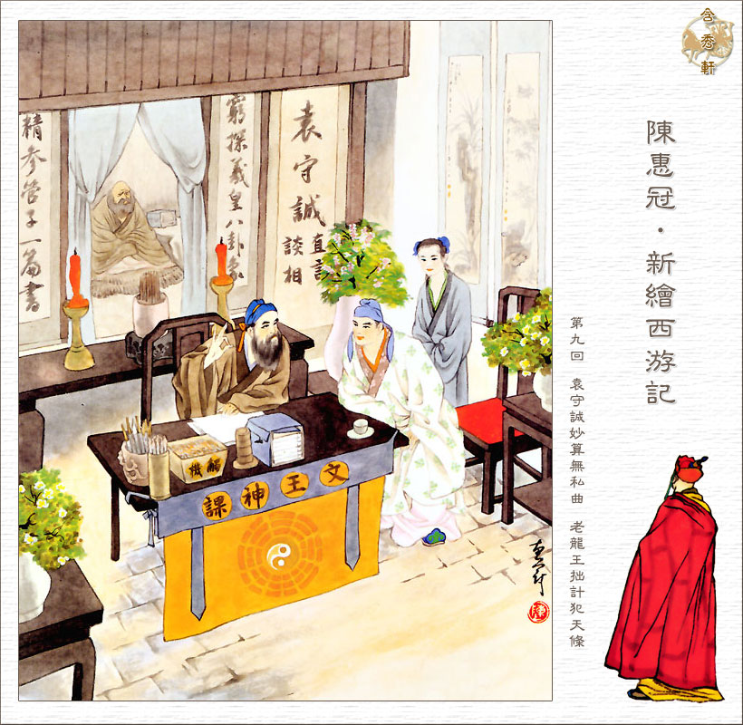
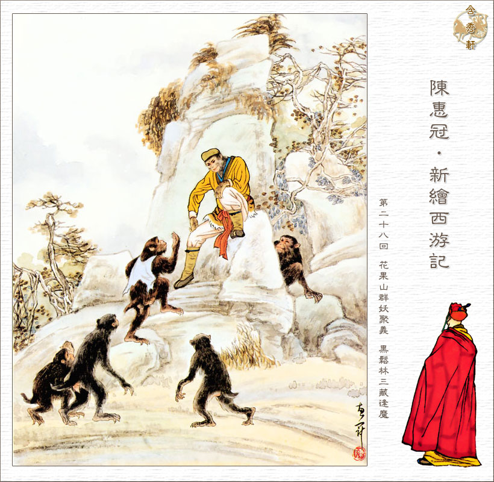
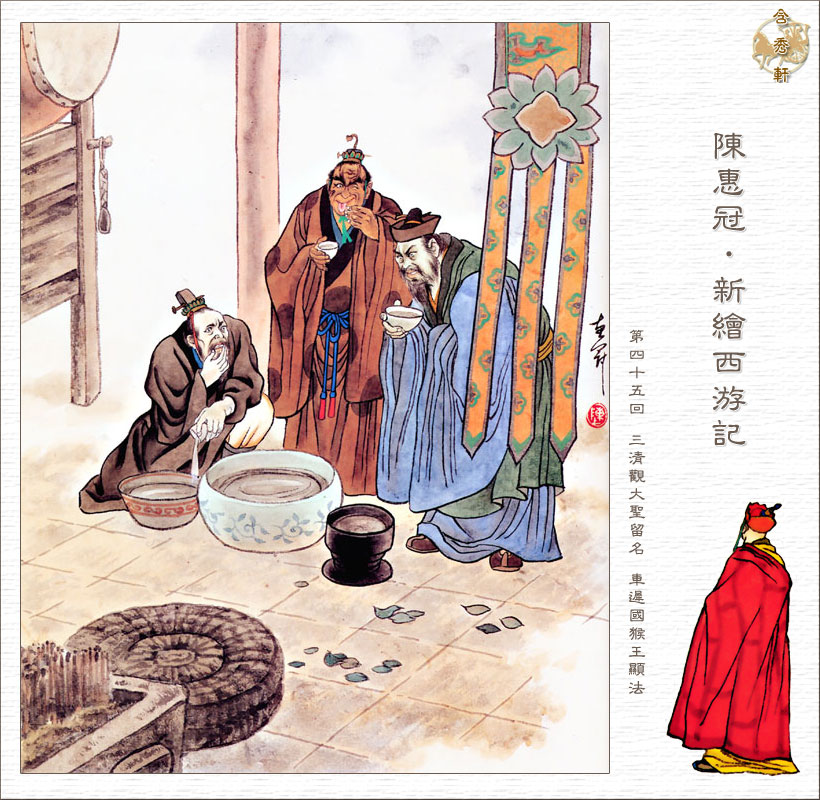
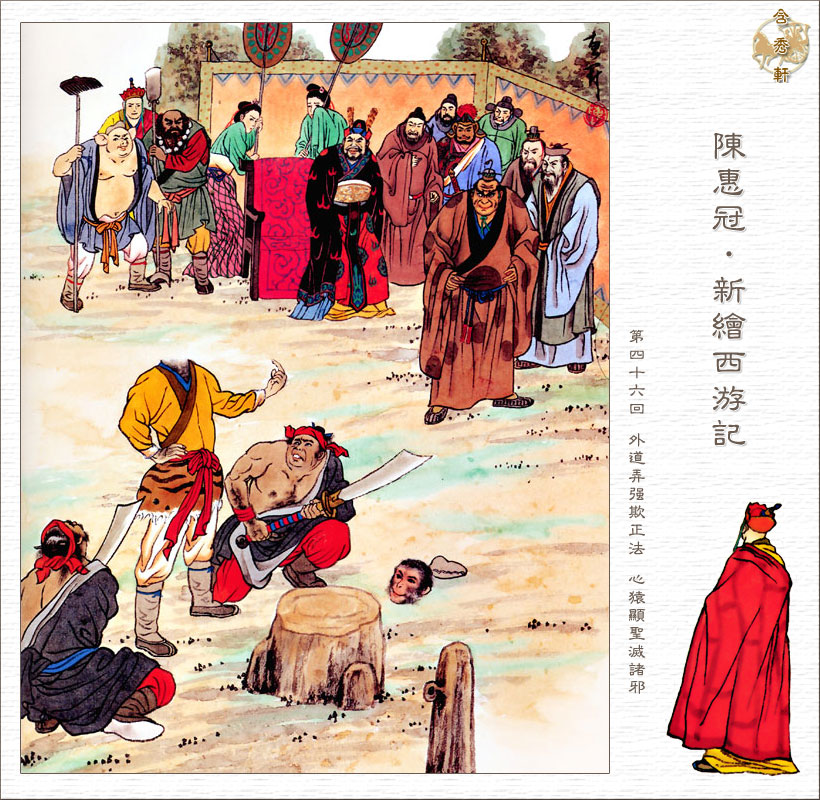
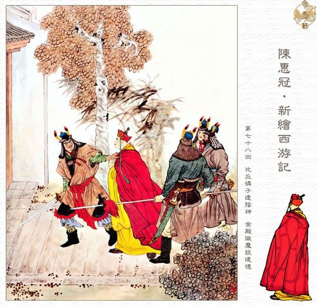
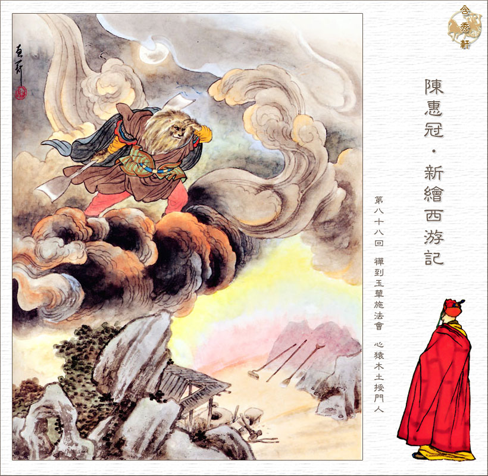

Tham khảo
http://innerjourneytothewest.com/english/en-resource2.html
Images of the Journey to the West - by Chen Huiguan
Chapter 1.
The Divine Root Conceives and the Spring Breaks Forth,
As the Heart's Nature Is Cultivated, the Great Way Arises
The Divine Root Conceives and the Spring Breaks Forth
As the Heart's Nature Is Cultivated, the Great Way Arises
Before Chaos was divided, Heaven and Earth were one;
All was a shapeless blur, and no men had appeared.
Once Pan Gu destroyed the Enormous Vagueness
The separation of clear and impure began.
There was once a magic stone on the top of a mountain. Ever since Creation began it has been receiving the truth of Heaven, the beauty of Earth, the essence of the Sun and the splendor of the Moon; and as it has been influenced by them for so long it has miraculous powers. It develops a magic womb, which bursts open one day to produce a stone egg about the size of a ball. When the wind blows on this egg it turns into a stone monkey, complete with the five senses and four limbs. On his mountain the monkey is soon able to run and jump, and he makes friends with other monkeys and apes. One day after bathing, they discover a waterfall suspended like a curtain. One monkey makes a suggestion: “If anyone is clever enough to go through the fall, find the source, and come out in one piece, let's make him our king.” The stone monkey leaps out from the crowd and answers at the top of his voice, “I'll go, I'll go.” Splendid Monkey leaps straight into the waterfall. After a while he comes out again, and tells the other monkeys to follow him. After they have all entered the cave, he says: “Gentlemen, A man who breaks his word is worthless. Just now you said that if anyone was clever enough to come in here and get out again in one piece, you'd make him king. Well, then. I've come in and gone out , and gone out and come in. I've found you gentlemen a cave heaven where you can sleep in peace and all settle down to live in bliss. Why haven't you made me king?” On hearing this all the monkeys bow and prostrate themselves, not daring to disobey. They line up in groups in order of age and pay their homage as at court, all acclaiming him as the “Great King of a Thousand Years.” The stone monkey then takes the throne, makes the word “stone” taboo, and calls himself Handsome Monkey King.
All things are born from the three yangs;
The magic stone contained the essence of sun and moon.
An egg was turned into a monkey to complete the Great Way;
He was lent a name so that the elixir would be complete.
The Monkey King and other monkeys have an enjoyable life but one day the Monkey King says: “Although I'm happy now, I'm worried about the future. That's what's getting me down. The time will come when we are old and weak, and the underworld is controlled by the King of Hell. When the time comes for us to die, we won't be able to go on living among the Blessed, and our lives will have been in vain.” A gibbon jumps out from their ranks and shrieks in a piercing voice, “If Your Majesty is thinking so far ahead, this is the beginning of enlightenment. The Buddhas, the Immortals and the Sages are free from the Wheel of Reincarnation. They are not born and they do not die. They are as eternal as Heaven and Earth, as the mountains and the rivers.” “Where do they live?” the Monkey King asks. “Only in the human world,” the ape replies, “in ancient caves on magic mountains.” The Monkey King is delighted to hear this. “I shall leave you all tomorrow,” he says, “and go down the mountain. The next day he leaves his friends in search for a teacher.
Chapter 2.
He Becomes Aware of the Wonderful Truth of Enlightenment,
By Killing the Demon He Realizes His Spirit-Nature

After a ten-year search, Monkey finds a teacher who gives him the name `Sun Wukong`, which means `Monkey Awakened to Emptiness'. Monkey studies language and deportment under his spiritual elder brothers, expounds the scriptures, discusses the Way, practices calligraphy, and burns incense. Thus six or seven years slip by without his noticing them. One day the Patriarch takes his seat on the dais, calls all the Immortals together, and begins to explain the Great Way. Monkey learns spells, magic and a somersault with which he can cover one hundred eight thousand miles from his teacher.
“It's hard, hard, hard. The Way is very mysterious,
Don't make light of the Golden Pill (Elixir).
If you don`t meet a sage who can teach you miraculous spells,
One is just tiring the voice with meaningless words and drying the tongue in vain.
True spells, revealing secrets and all powerful,
Are the only sure way of protecting one's life.
Grasp all the Five Elements and turn them upside down,
And when you are successful you can become a Buddha, or an Immortal.
On a day when spring is giving way to summer, and all the students are sitting under some pine trees listening to lectures for a long time, they say, “Sun Wukong, in what life did you earn your present destiny? The other day our teacher whispers to you how to do the transformations to avoid the Three Disasters. Can you do them all yet?” “It's true, brothers,” says Sun Wukong with a grin, “I can do them all.” “This would be a good time for you to give us a demonstration.” At this suggestion Sun Wukong braces his spirit to show off his skill. “What's it to be, brothers? Tell me what you'd like me to turn myself into.” “Turn into a pine tree,” they all say. Sun Wukong clenches his fist, says the magic words, shakes himself, and changes into a pine tree. When the students see it they clap their hands and chuckle aloud, saying, “Good old monkey, good old monkey.” They do not realize that the row they are making disturbs the Patriarch, who rushes out through the door, dragging his stick behind him. “Who's making a row out here?” he asks. The students hurriedly pull themselves together, straighten their clothes and go over to him. Sun Wukong, who has now resumed his real appearance, says from the forest, “Master, we were holding a discussion here, and there were no outsiders making a din.” “Yelling and shouting like that,” the Patriarch angrily roars, “is no way for those cultivating their conduct to behave. If you are cultivating your conduct, the subtle vapors escape when you open your mouth, and when you wag your tongue, trouble starts. What was all the laughing and shouting about?” “Just now Sun Wukong did a transformation for fun. We told him to turn himself into a pine tree, and he did. We all praised and applauded him, which was why we disturbed you with the noise, master. We beg you to forgive us.” The Patriarch sends them all away except for Sun Wukong, to whom he says, “Come here. Is that a way to use your spirit? To change into a pine tree? Is this a skill you should be showing off in front of people? If you saw somebody else doing that, wouldn't you ask him to teach you? If other people see you doing it, they're bound to ask you to teach them, and if you want to keep out of trouble you'll have to do so; otherwise they may do you harm, and then your life will be in danger. ”Sun Wukong kowtows and says, “Please forgive me, master.” “I shan't punish you,” the Patriarch replies, “but you'll have to go.” Sun Wukong's eyes fills with tears. “Master, where am I to go?” “Go back to where you came from.” Sun Wukong has a sudden awakening, and he says, “I came from the Water Curtain Cave on the Mountain of Flowers and Fruit in the country of Aolai in the Eastern Continent of Superior Body. “If you hurry back there,” the Patriarch replies, “you will be able to preserve your life. If you stay here it will be absolutely impossible to do so.” Sun Wukong accepts his punishment.
Wukong goes back to the water curtain cave to live with the other monkeys again. Because a monster had been making life difficult for them, Wukong goes to fight him. He pulls out one of his hairs, pops it in his mouth, chews it up, and blows it out into the air, shouting, “Change!” It turns into two or three hundred little monkeys, who all crowd aroung him. Sun Wukong now has an immortal body, and there is no magic transformation of which he is not capable. Since he has followed the Way he can change each of the eighty-four thousand hairs on his body into anything he wants. The little monkeys are too quick and nimble for sword or spear. Look at them, leaping forwards and jumping backwards, rushing up and surrounding the demon king, grabbing him, seizing him, poking him in the backside, pulling at his feet, punching him, kicking him, tearing his hair out, scratching at his eyes, twisting his nose, all picking him up together and throwing him to the ground. They go on until they have beaten him to a pulp. Sun Wukong snatches his sword from him, tells the little monkeys to get out of the way, and brings it down on the crown of his head, splitting it into two. “Where did you learn such arts, Your Majesty?” the monkeys ask insistently. “When I left you,” Sun Wukong replies, “I followed the waves and the currents, and drifted across the Eastern Ocean to the Southern Jambu Continent. Here I taught myself to take human form and to wear these clothes and boots. I swaggered around for eight or nine years, but I never found the Way, so I sailed across the Western Ocean to the Western Continent of Cattle-gift. After long enquiries I was lucky enough to meet a venerable Immortal, who taught me the True Result, which makes me as immortal as heaven, and the great Dharma Gate to eternal youth.”
Chapter 3.
The Four Seas and Thousand Mountains All Submit,
In the Ninth Hell the Tenth Category Is Struck Off the Register
Monkey is worried about attacks by some human monarch or king of birds or beasts, so he procures weapons for the monkeys. Monkey decides he needs a weapon himself and visits Ao Guang, the Old Dragon King of the Eastern Sea and ask him for a weapon. Not wishing to refuse this request, the Dragon King shows him several weapons, but Monkey doesn`t like them saying, “They`re too light, far too light; and they don't suit me. I beg you to give me another.” The Dragon King gives him another weapon which weighs three thousand six hundred pounds, but it is still not good enought for Monkey. The Dragon King, now really terrified, says, “Exalted Immortal, I really have nothing else.” As he was speaking, his dragon wife and dragon daughters come in from the back of the palace and say, “Your Majesty, by the look of him this sage must be really somebody. The piece of miraculous iron that anchors the Milkey Way in place has been shining with a lovely rosy glow for the last few days, and creating a most auspicious atmosphere. Perhaps it has started to shine to greet this sage.” The Dragon King takes Monkey into the middle of the sea treasury, where all of a sudden they could see ten thousand rays of golden light. Pointing at it, the Dragon King says, “That's it, where all the light is coming from.” Sun Wukong hitches up his clothes and goes to give it a feel. He finds that it is an iron pillar about as thick as a measure for a peck of grain and some twenty feet long. Seizing it with both hands he says, “It's too thick and too long. If it were a bit shorter and thinner it would do.” As soon as these words are out of his mouth this precious piece of iron becomes several feet shorter and a few inches thinner. Sun Wukong tosses it in his hands, remarking that it would be even better if it were thinner still. The precious iron thereupon becomes even thinner. Sun Wukong is taking it out of the sea treasury to have a look at it when he sees that it had two gold bands round it, while the middle part is made of black iron. There is a line of inlaid writing near the bands which says that it is the AS-YOU-WILL COLD-BANDED CUDGEL: WEIGHT 13,500 POUNDS. Monkey takes the weapon and shows it to the other monkeys. He clasps his `As You Will Cudgel` and uses heaven and earth magic to become as tall as a mountain.
One day the Handsome Monkey King has a dream. In the dream, Monkey`s soul is taken to the Underworld the Underworld by two fetchers of the dead because his life in the world above is due to end. The Monkey King loses his temper and smashes the two fetchers of the dead to pulp. Since he has cultivated the Way of Immortality and will live as long as Heaven he is no longer under their control, so he tells the Ten Kings of Hell to show him the Register of Life and crosses out his name from the Register of Life and Death. Some time later Ao Guang, the Dragon King of the Eastern Sea visits the Supreme Heavenly Sage the Jade Emperor in Heaven and complains that recently one Sun Wukong, bullied him and occupied his watery house by force. The Jade Emperor also receives a memo from one of the ministers of the Underworld that the Heaven-born Monkey of the Mountain of Flowers and Fruit killed the devil messengers of the Ninth Hell with his magic, and terrified the Ten Benevolent Kings of the Underworld with his power.
Chapter 4.
Dissatisfied at Being Appointed Protector of the Horses,
Not Content with the Title of Equal of Heaven
It is decided that Monkey is to be invited to Heaven to be given office as an Immortal to keep him from further misdeeds. Monkey is made Protector of the Horses, but after finding out it is a bottom grade job, Monkey feels insulted, leaves Heaven and returns to the Mountain of Flower and Fruit. The monkeys ask him what office he held. “It hurts me to tell you,” replies the Monkey King with a wave of his hand. “I feel thoroughly humiliated. That Jade Emperor doesn't know how to use a good man. A man like me—'Protector of the Horses'. “Your Majesty has such miraculous powers: you should never have been feeding his horses for him. You should have been made a 'Great Sage Equaling Heaven,' shouldn't you?” The Monkey King is beside himself with delight at this suggestion and keeps saying how splendid it is. “Get me a banner made at once with the words 'Great Sage Equaling Heaven' in big letters on it, and put up a pole to hang it from,” he orders. “From now on I am to be called 'Great Sage Equaling Heaven,' not 'Your Majesty' or 'King'. Pass this order on to all the other kings of the monsters.” The Jade Emperor is told that Sun Wukong, the new Protector of the Horses, has left Heaven because he thought his office was too humble. On hearing this the Jade Emperor commands, “ we shall send heavenly soldiers to capture this devil.” He appoints the Pagoda-bearing Heavenly King as Demon quelling High Marshal, and Prince Nezha as Great God of the Seas. He tells them to take their forces down to the lower world at once. Heavenly King Li and Nezha kowtows, take their leave, go straight back to their own palace, and assemble their troops, commanders and officers. They put the Mighty Miracle God in charge of the vanguard, and General Fishbelly in command of the rear, while General Yaksa was made adjutant. Within an instant they are outside the Southern Gate of Heaven, and they go straight to the Mountain of Flowers and Fruit. They choose a piece of level and open ground on which to construct a fortified camp, and order the Mighty Miracle God to issue the challenge to battle. The Mighty Miracle God is no match for his opponent. He hastens to block the Monkey King's first blow with his axe, which brakes in two with a crunch. He flees for his life as fast as he can, and the Monkey King says mockingly, “You bag of pus, I'll spare you this time. Hurry back with my message, and look sharp about it.”

The Mighty Miracle God returns to his camp, goes straight to the Pagoda-bearing Heavenly King Li Jing, kneels before him, and says with an awkward laugh, “The Protector of the Horses has really tremendous magic powers. I was no match for him. He beat me, and now I have come to take my punishment.” “This fool has ruined our morale,” explodes the Heavenly King Li in a fury. “Take him away, and off with his head.” Prince Nezha, who is standing to one side, steps forward, bows, and says, “Do not be angry, Your Majesty. Forgive the Mighty Miracle God, and let me go and do battle; then we'll see who's boss.” The heavenly king accepts his advice, and tells Mighty Miracle God to go back and look after the camp while he awaits his punishment. When he has put on his armour and helmet, Prince Nezha charges straight out of the camp to the Water Curtain Cave. Sun Wukong, who was just going to pull back his troops, sees the ferocity of his onslaught. “Change,” yells Nezha in a passion, and at once he has three heads and six arms, which make him look most ferocious. In his hands he holds six weapons, a demon-beheading sword, a demon-hacking cutlass, a demon-binding rope, a demon-quelling pestle, an embroidered ball, and a fire-wheel—and wielding all these he rushes straight at Sun Wukong. At the sight of him Sun Wukong exclaims with astonishment, “Well, my boy, you certainly know a trick or two. But just behave yourself and watch what I can do.” Our dear Great Sage shouts “Change,” and he too has three heads and six arms. He shakes his gold-banded cudgel, and it turns into three cudgels, which he grips with his six hands to ward off Nezha's blows. It is a great fight, and it makes the earth shake and the mountains tremble. Nezha is in the middle of performing a spell when he hears the whistle of the cudgel through the air and twists away as fast as he could. But he is unable to avoid the blow and has to flee wounded. He brings his magic to an end, puts his six weapons away, reverts to his true appearance, and abandons the field of battle in defeat Prince Nezha reports to the Heavenly King Li Jing, “Father, the Protector of the Horses is very powerful. My magic was outclassed and he has wounded me in the shoulder. Outside the gates of the cave, there is a banner on a pole that reads 'Great Sage Equaling Heaven'. He bragged that if the Jade Emperor gave him this title he would call everything off; otherwise he said he would attack the Hall of Miraculous Mist.” “In that case,” said the Heavenly King, “we'll disengage now, go back to Heaven, and request that more heavenly troops be sent to capture this wretch. However, it is now decided that Monkey will be invited to Heaven again, in order to keep him from his wicked behavior, and can keep the title `the Great Sage Equaling Heaven`, which he gave himself. This time he will be given a high rank and salary.
Chapter 5.
After Chaos Among the Peaches the Great Sage Steals the Pills,
In the Revolt Against Heaven the Gods Capture the Demons
Since Monkey is idle and has nothing to do in Heaven, he is to administer the Peach Orchard. Anyone who eats of the peaches becomes an Immortal and understands the Way and one day Monkey tries some of the peaches. That same day, seven fairies come to pick peaches for the Queen Mother`s Peach Banquet and Monkey finds out that he is not invited. Feeling insulted, Monkey changes himself into the likeness of the Bare-foot Immortal who is invited to the banquet, and goes to Hall of Universal Brightness. The guest haven`t arrived yet and Monkey grabs rare delicacies and exotic foods and drinks from the vats and pots until he is completely drunk. He then goes to Lord Lao Zi's palace in the Tsushita Heaven and there eats up his five gourds of pills of immortality. Quickly becoming sober because of the pills, Monkey realizes the colossal disaster of what he has done, leaves Heaven, and goes straight down to the Mountain of Flowers and Fruit.
The Jade Emperor, now furiously angry, orders the Four Great Heavenly Kings along with Heavenly King Li, and Prince Nezha to mobilize the Twenty-eight Constellations, the Nine Bright Shiners, the Twelve Gods of the Twelve Branches, the Revealers of the Truth of the Five Regions, the Four Duty Gods, the Constellations of the East and West, the Gods of the North and South, the Deities of the Five Mountains and the Four Rivers, the star ministers soldiers of all Heaven, and a total of a hundred thousand heavenly soldiers. They are to descend to the lower world with eighteen heaven-and-earth nets, surround the Mountain of Flowers and Fruit, and capture that wretch for punishment. First the Nine Bright Shiners fight Monkey but have to flee from the battlefield, unable to defeat him. Heavenly King Li then sends the Four Heavenly Kings and the Twenty-eight Constellations into battle, but they are also forced to withdraw because the Monkey King is so ferocious.
Chapter 6.
Guanyin Comes to the Feast and Asks the Reason Why,
The Little Sage Uses His Might to Subdue the Great Sage
Guanyin sends down his senior disciple Prince Moksa to fight Monkey but after some fifty or sixty rounds, he can resist the Great Sage no longer and turns away and runs. Next the Illustrious Sage and True Lord Erlang are asked to fight Monkey but after fighting over three hundred rounds the outcome of the fight is still undecided. Erlang braces himself, and with a shake becomes ten thousand fathoms tall; in his hands his two-bladed trident look like the peaks of Mount Hua. His face is black, his fangs are long, and his hair is bright red: he looks ferociously evil. He hacks at the Great Sage's head. The Great Sage, also resorting to magic, gives himself a body as big as Erlang's and a face as frightening; and he raises his As-You-Will gold-banded cudgel, which is now like the pillar of Heaven on the summit of the Kunlun Mountain, to ward off Erlang's blow.
The Emperor, Lao Zi, the Queen Mother, Guanyin and all the immortal ministers are observing the fight from the Southern Gate of Heaven. The Bodhisattva addresses Lao Zi and asks, “What do you think of the god Erlang I recommended? He really does have divine powers. He's just got that Great Sage cornered, and all he has to do now is to catch him. I’ll give him a little help and drop my pure vase of willow twigs on the monkey's head. Even if it doesn't kill him it will knock him off balance and enable the Little Sage to catch him.” “That vase of yours is made of porcelain,” Lao Zi replies, “and if you hit the target that will be fine. But if it were to miss his head and smash into his iron club, it would be shattered. Just hold your hand while I give him a little help.” He pulls up his sleeve and takes a bracelet off his right arm. “This weapon,” he says, “is made of tempered steel to which I have added the magic elixir. It preserves my miraculous essence, can transform itself, is proof against fire and water, and can snare anything. One of its names is Diamond Jade and the other is Diamond Noose. Just watch while I throw it down and hit him.” Then Lao Zi throws his Diamond Jade bracelet from heaven to hit the Monkey. Monkey is too preoccupied with fighting, to notice the bracelet falling and it strikes him on the forehead. He loses his balance and is finally caught.
Chapter 7.
The Great Sage Escapes from the Eight Trigrams Furnace,
The Mind-Ape Is Fixed Beneath Five Elements Mountain
To the ape's immortal body is matched a human mind:
That the mind is an ape is deeply meaningful.
It was quite true that the Great Sage equaled Heaven:
The appointment as Protector of the Horse showed no discernment.
Horse and ape together make mind and thought;
Bind them tightly together, and do not seek elsewhere.
When all phenomena are reduced to truth they follow a single pattern;
Like the Tathagatha reaching nirvana under the two trees.
It is decided to put the Great Sage in Lao Zi`s Eight Trigrams Furnace, to refine out the elixir of the immortal pills that he stole and reduce him to ashes at the same time. After forty-nine, days Lord Lao Zi's fire has reached the required temperature and burned for long enough so the furnace is opened. Since Monkey is of the element fire himself, fire cannot harm him and he leaps out of the Furnace unharmed and escapes.
The Jade Emperor then asks Buddha to help subdue Monkey and Buddha has a wager with Monkey. If Monkey is clever enough to get out Buddha`s right hand with a single somersault, he is the winner, and there will be no more need for weapons or fighting and the Jade Emperor will abdicate the Heavenly Palace to Monkey. But if he cannot get out of the palm of his hand he will have to go down to the world below as a devil and train himself for several more kalpas before coming to argue about it again. Since Monkey can cover one hundred and eight thousand miles with a somersault he thinks that Buddha is a complete idiot to suggest the wager. The Buddha, who is watching him with his wise eyes, sees the Monkey King whirling forward like a windmill and not stopping until he sees five flesh-pink pillars topped by dark vapors. “This is the end of the road,” he says, “so now I'll go back. The Buddha will be witness, and the Hall of Miraculous Mist will be mine.” Then he thinks again, “Wait a moment. I'll leave my mark here to prove my case when I talk to the Buddha.” He writes THE GREAT SAGE EQUALING HEAVEN WAS HERE in big letters on the middle Pillar and makes a pool of monkey piss at the foot of the pillar. Then he turns his somersault round and goes back to where he has started from. “I went, and now I'm back. Tell the Jade Emperor to hand the Heavenly Palace over to me,” he says, standing in the Buddha's palm. “I've got you, you piss-spirit of a monkey,” roars the Buddha at him. “You never left the palm of my hand. ” “You're wrong there,” the Great Sage replies. “I went to the farthest point of Heaven, where I saw five flesh-pink pillars topped by dark vapors. I left my mark there: do you dare come and see it with me?” “There's no need to go. Just look down.” The Great Sage looks down with his fire eyes with golden pupils to see the words “The Great Sage Equaling Heaven Was Here” written on the middle finger of the Buddha's right hand. The stink of monkey-piss rose from the fold at the bottom of the finger. “What a thing to happen,” exclaims the Great Sage in astonishment. “I wrote this on one of the pillars supporting the sky, so how can it be on his finger now? He must have used divination to know what I was going to do. I don't believe it. I refuse to believe it! I'll go there and come back again.” The dear Great Sage hurriedly braces himself to jump, but the Buddha turns his hand over and pushes the Monkey King out through the Western Gate of Heaven. He turns his five fingers into a mountain chain belonging to the elements Metal, Wood, Water, Fire, and Earth, renames them the Five Elements Mountain, and gently held him down. Monkey will have to stay under the mountain for five hundred years as punishment.
Chapter 8.
Our Buddha Creates the Scriptures and Passes on Perfect Bliss,
Guanyin Obeys a Decree and Goes to Chang'an
The story continues with Buddha observing that in the Southern Jambu Continent the people are greedy and lecherous and delight in the sufferings of others; they go in for a great deal of killing and quarrelling. The continent can with truth be called a vicious field of tongues and mouths, an evil sea of disputation. Buddha has Three Stores of True Scriptures with which they can be persuaded to be good. Bodhisattva Guanyin volunteers to go to the East, choose a worthy believer and bid him to make the arduous crossing of a thousand mountain and ten thousand rivers to receive the Scriptures from Buddha. Buddha tells Guanyin:
“Give this cassock and staff to him who will come to fetch the scriptures: they are for him to use. If he is determined to come here, he can avoid the Wheel of Reincarnation by wearing this cassock,
and he will be free from evil if he carries this staff.”
If you try to ask about the dhyana
Or investigate the innumerable
You will waste your life and achieve nothing.
Polishing bricks to make mirrors,
Or piling up snow to turn it into grain— However many years have you wasted like that?
A hair can contain an ocean,
A mustard-seed can hold a mountain,
And the golden Kasyapa only smiles.
When you are awakened you will surpass the Ten Stages and the Three Vehicles,
And stop the four kinds of life and the six ways.
Buddha also tells Guanyin that if he meets any devils with great magic powers on his journey he should persuade them to reform and become the disciples of the pilgrim who will come to fetch the scriptures. Along the Journey to Chang`An Guan Yin encounters an ogre who is actually the Curtain Raising General, who was exiled to the lower world for accidentally smashed a crystal dish at a Peach Banquet. Guanyin converts him to truth, gives him the Buddhist name of Wujing (“Awakened to Purity") and tells him to wait for a pilgrim and accompany him on a journey to fetch the scriptures.
Guan Yin encounters another monster who used to be Marshal Tian Peng in the Milky Way and was exiled in the mortal world because he took some wine to seduce the moon maiden. Guanyin also converts Marshal Tian Peng to truth, gives him the Buddhist name of Zhu Wuneng (“Pig Awakened to Power") and tells him to wait for a pilgrim and accompany him on a journey to fetch the scriptures. Next Guanyin converts a wicked Dragon who is to turn into a white horse when a pilgrim comes on a journey to fetch the scriptures. Guanyin then meets the Great Sage who has been crushed under the Five Elements Mountain for almost five hundred years. Monkey agrees to accompany the man who will fetch the Scriptures and will be freed from under the mountain by the monk when he comes.
Chapter 9.
Chen Guangrui Comes to Grief on His Way to His Post,
The Monk of the River Current Avenges His Parents
At that time in Chang'an city, Emperor Taizong holds an examination in accordance with the practice of the ancients. All the Confucian scholars on the civil or military rolls in every prefecture, district and county who have distinguished themselves in the three-stage examinations for their understanding of literature are to go to Chang'an for a final test. Chen Guangrui achieves the highest grade in the exam and the emperor rewards him with an appointment as prefect of Jiangzhou. After finding a wife, they depart for their new appointment. However, along the way a boatman who lusts after his wife, kills him and throws him overboard. The boatman takes Guangrui`s wife, pretends to be Guangrui, and assumes his job as prefect. Guangrui`s wife Miss Yin, wants to kill herself, but being pregnant with an unborn child, she forces herself to go with him. After she has delivered the child she hears an invisible voice say, “Man-tang-qiao, you must do as I tell you. I am the Lord of the Southern Pole Star, and I have come to give you this son on the orders of the Bodhisattva Guanyin. One day he will be extraordinarily famous. When the villainous Liu comes back he will certainly want to kill this boy, so you must look after him with great care. Your husband has been rescued by the dragon king; one day you will be reunited with him and your son, and your sufferings will be at an end. Remember my words. Wake up, wake up!” Miss Yin decides to abandon her son in the river as soon as possible and let fate determine whether he is to live or to die. She ties the child to a board with her sash, and pushes him out into the stream to go where he will. The boy floats downstream on the plank until he comes to a stop under the Jinshan Temple. The abbot of this temple, a monk called Faming, finds the child, gives him the milk-name Jiangliu, “River Current,” and arranges for him to be fostered. Time passes like an arrow, and the days and months move as fast as a shuttle. When Jiangliu reaches the age of seventeen the abbot tells him to have his head tonsured and enter the religious life. Giving him the Buddhist name Xuanzang he lays his hands upon his head and instructs him to observe the monastic discipline. Xuanzang is determined to cultivate the Way.

The story continues with the Dragon King of the River Jing, who visits a soothsayer, transformed as a scholar. The Dragon king is in charge of making rain and has a wager with the sooth-sayer that he can`t predict the right time of rain. The sooth-sayer gives him the time of the next rain and to his great surprise the Dragon king receives an Imperial Decree from Heaven to make rain at the exact same time. In order to win the wager the Dragon King flouts the degree from the Jade Emperor, which is a crime against heaven that will cost the Dragon King his life.
In a dream the Dragon King visits Emperor Taizong of Chang`An to ask him for help to spare his life. The dragon king takes human form, goes up to him, kneels and bows before him, crying, “Save me, Your Majesty, save me.” “Who are you, that we should save you?” asks Taizong. “Your Majesty is a true dragon,” replies the dragon king, “and I am a wicked dragon. As I have offended against the laws of Heaven, I am due to be beheaded by Your Majesty's illustrious minister Wei Zheng, the official in charge of personnel, so I have come to beg you to save me.” “If you are supposed to be beheaded by Wei Zheng, we can save you, so set your mind at rest and go along now,” says the Tang Emperor. The dragon king, who is extremely happy, kowtows in thanks and leaves. The Tang Emperor sends a personal aide with a decree summoning Wei Zheng to court. Wei Zheng enters the emperor`s private quarters, where they discuss the policies to bring peace and stability to the country. At about noon he orders the palace ladies to bring a large weiqi chess set and says, “We shall now have a game of chess.”
Chapter 10.
With a Stupid Plan the Dragon King Breaks the Laws of Heaven,
Minister Wei Sends a Letter to an Officer of Hell
As sovereign and minister play their game of chess it is half past one. Although the game is not over, Wei Zheng slumps down beside the table and starts to snore, fast asleep. “Worthy Minister,” says Taizong with a smile, “you have exhausted your mind in strengthening the country and tired yourself out building the empire; that is why you have fallen asleep without realizing it.” The Emperor says no more and lets him sleep. Not long afterwards Wei Zheng wakes up, prostrates himself on the floor, and says, “Your subject deserves ten thousand deaths. I fell asleep without knowing what I was doing, and I beg Your Majesty to forgive your subject's criminal discourtesy to his sovereign.” “What criminal discourtesy have you committed?” the Emperor asks. “Rise, and take the Pieces off the board so that we may start again.” Wei Zheng thanks him for his grace, and is just taking the pieces in his hand when he hears shouting outside the palace gates. Qin Shubao, Xu Maogong and some others bring in a dragon's head dripping with blood, throw it to the floor in front of the Emperor, and report, “Your Majesty, this dragon's head fell from a cloud at the crossroads at the end of the Thousand Yard Portico, and your humble subjects dared not fail to report it,” says Qin Shubao and Xu Maogong. “What does this mean?” the Tang Emperor asks Wei Zheng in astonishment. “Your subject beheaded it in a dream just now,” replies Wei Zheng, kowtowing. “But I never saw you move your hand or body when you were dozing,” says the shocked Emperor, “and you had no sword, so how could you have beheaded it?” Emperor Taizong's feelings on hearing this are mixed. On the one hand he is happy, because he is proud of having so good a minister as Wei Zheng; for with a hero like that in his court he needs to have no worries about the safety of the empire. On the other hand he is distressed, because although he had promised in his dream to save the dragon, it has been executed.
When he returns to the palace that evening, the Emperor is depressed as he remembers how the dragon had wept so bitterly in his dream, begging to be saved. That night, as he lies in a fitful sleep, the Dragon King reappears, this time holding his head dripping with blood in his hands. “Emperor Taizong of the Tang,” he shouts, “give me back my life, give me back my life. Last night you were full of promises to save me, so why did you double-cross me yesterday and order Wei Zheng, the official in charge of personnel, to behead me? Come out, come out, and we shall go to the King of Hell's place to have this out.” He pulls at the Emperor's clothes and won't stop shouting. The dragon then goes down to Hell to submit a full report. The next day a decree is brought out that reads, “As our mind is not at ease all the officials are excused court.” Six or seven days quickly pass, and the Empress issues a decree summoning the royal doctors to the palace to administer medicine. However, he Emperor's condition deteriorates day by day. One day the Empress Dowager issues an edict summoning the officials to discuss funeral arrangements. Taizong sents for Xu Maogong and gives him orders about affairs of state, instructing him to look after the heir to the throne. When he has finished speaking he is bathed and puts into clean clothes. All he has to do now was to wait for the end. The disease reaches his heart and the Emperor`s life comes to an end.
Chapter 11.
After Touring the Underworld, Taizong Returns to Life,
By Presenting a Pumpkin Liu Quan Continues His Marriage
Emperor Taizong`s soul is taken to the underworld and meets the Ten Kings of the Underworld. Taizong finds out that the ghost dragon of the River Jing has brought a case against him, saying that he was executed despite his promise to save him. The Ten Kings decide that it was not the Emperor`s fault that the dragon was beheaded. They look in the Register of Life and Death and see that the Emperor still has twenty years to live, so they sent him back to the world of light. Taizong bows to express his thanks to the Ten Kings. “When we return to the daylight we shall have nothing with which to show our gratitude except for fruit and melons,” he says. “We have gourds, Eastern melons and Western melons, or water-melons, here, but no pumpkins, no Southern melons,” say the Ten Kings. “When we return to the world of the living we shall send some,” replies Taizong, and with that they raise their clasped hands to each other, bow, and part. On his way back to the World of Light, Taizong meets the ghosts of the kings and chieftains of the sixty-four groups of rebels and the seventy-two troops of bandits who were all killed unjustly and cannot be reborn. Taizong promises to hold a Great Mass when he is back in the world of light to enable all of them to be reborn. After Taizong has returned tp the world of the living, he issues a notice calling for a worthy man to take pumpkins to the underworld. Some days after the notice has been issued a worthy man called Liu Quan from Junzhou comes forward to deliver the pumpkins. He came from a family worth ten thousand strings of cash. When his wife Li Cuilian had taken a gold pin from her hair to give as an offering to a monk at the gate, Liu Quan had cursed her for being a loose wife who would not stay in the women's quarters. Li Cuilian, bitterly resenting this, had hanged herself, leaving a little boy and girl who had been crying night and day ever since. Liu Quan, unable to bear it any longer, wanted only to end his own life and abandon his family and his children. For this reason he has volunteered to deliver the pumpkins in death and comes to the Tang Emperor with the imperial notice in his hand. The Emperor orders him to go to the Golden Pavilion, where he is to put a pair of pumpkins on his head and some gold in his sleeve and drink poison. Liu Quan drinks the poison and dies. In an instant his soul appears at the Devil Gate with the pumpkins on his head. The demon officer at the gate asks, “Who are you, and how did you come here?” “I have come on the orders of Emperor Taizong of the Great Tang to present some pumpkins to the Ten Kings of Hell.” The officer is only too pleased to let him in, and he goes straight to the Senluo Palace, and when he is given audience with the Kings of Hell he presents the pumpkins to them and says, “I have brought these pumpkins a great distance in obedience to the decree of the Tang Emperor, who wishes to thank Your Majesties for their great mercy to him.” “How splendid of the Tang Emperor to be as good as his word,” exclaim the ten delighted kings as they accept the pumpkins. Then they ask him what he was called and where he was from.
On hearing his story, the Ten Kings order a search for Liu Quan's wife, Miss Li. The devil messengers soon bring her to the Senluo Palace, outside which Liu Quan is reunited with her. They thank the Ten Kings for their kindness. On consulting the Registers of Birth and Death, the kings find that they are fated to become Immortals, so they order demon officers to take them back at once. The demon officers, however, ask in a report, “As Li Cuilian has been dead for some time her body has perished, so what is her soul to be attached to?” “Li Yuying, the sister of the Tang Emperor, is due to die a sudden death today,” says the Kings of Hell, “so we can borrow her body to put Li Cuilian's soul back into.” On receiving this order the demon officers take Liu Quan and his wife out of the underworld to be brought back to life. When the devil officers leave the underworld with Liu Quan and his wife, a dark and whirling wind blows them straight to the great capital Chang'an, where Liu Quan's soul is sent to the Golden Pavilion and Li Cuilian's to an inner courtyard of the palace, where Princess Yuying can be seen walking slowing beside some moss under the shade of some blossoming trees. Suddenly the devil officers strike her full in the chest and knock her over; they snatch the soul from her living body and put Li Cuilian's soul into the body in its place. With that they return to the underworld.
Excellent, truly excellent,
The virtuous come to no harm.
The good heart is always mindful,
The way of goodness always lies open.
Do not allow evil thoughts to arise;
Thus you will avoid all trouble.
Say not that there is no retribution;
Whether you become a god or a ghost is all determined.
Chapter 12.
The Tang Emperor Keeps Faith and Holds a Great Mass,
Guanyin Appears to the Reincarnated Golden Cicada
Emperor Taizong decides to hold a mass for the rebirth of lonely souls in the underworld. He issues a notice summoning monks to come and hold a mass in Chang`an. The notice travels throughout the empire and local officials everywhere recommend that holy and venerable monks go to Chang'an for the service. By the end of the month monks arrive in Chang'an from all over the empire. Three court officials assemble all the monks at the altar among rivers and hills, and they go through them all one by one. Reverend Xuanzang is chosen from among all the monks. On hearing his name Taizong thinks deeply for a long time and then asks, “Is that the Xuanzang who is the son of Grand Secretary Chen Guangrui?” “Your subject is he,” replies Xuanzang with a kowtow.” Then you were indeed well chosen,” says the Emperor with satisfaction. The third day of the ninth month of that year is chosen an auspicious day on which to start the seven times seven days of the Great Land and Water Mass. This is all reported to the throne, and at the appointed time Taizong, the high civil and military officials, and the royal family go to the service to burn incense and listen to the preaching. On his dais Xuanzang reads through the Sutra to Give Life and Deliver the Dead. Guanyin, who has chosen Xuanzang to be the man who will fetch the Scriptures goes up to the dais, hits it, and shouts out at the top of her voice:
“Why are you only talking about the doctrine of the Little Vehicle, monk? Can you preach about the Great Vehicle?” “That doctrine of the Little Vehicle of yours will never bring the dead to rebirth; it's only good enough for a vulgar sort of enlightenment. Now I have the Three Stores of the Buddha's Law of the Great Vehicle
that will raise the dead up to Heaven, deliver sufferers from their torments,
and free souls from the eternal coming and going.”
Xuanzang asks where the Buddha's Law of the Great Vehicle is and Guanyin answers that it is in the Thunder Monastery in the land of India in the West, where the Buddha lives. The Emperor then asks those present in the monastery, “Who is willing to accept our commission to go to the Western Heaven to visit the Buddha and fetch the scriptures?” Before he has finished his question, the Master of the Law comes forward, bows low in greeting, and says, “Although I am lacking in ability, I would like to offer my humble efforts to fetch the true scriptures for Your Majesty and thus ensure the eternal security of your empire.” The Tang Emperor, who is overjoyed to hear this, goes forward to raise him to his feet. “Master,” he says, “if you are prepared to exert your loyalty and wisdom to the full, not fearing the length of the journey or the rivers and mountains you will have to cross, I shall make you my own sworn brother.” Xuanzang kowtows to thank him. At court the next morning Taizong assembles his civil and military officials and writes out the document Xuanzang will need to fetch the scriptures, stamping it with the imperial seal that gives the right to travel freely. The Tang Emperor asks, “Brother, what is your courtesy name?” “As I am not of the world, I do not have one,” replies Xuanzang. “The Bodhisattva said that there are Three Stores of scriptures in the Western Heaven. You, brother, should take a courtesy name from this. What about Sanzang?” “Dear brother, when will you return from this journey to the Western Heaven?” “I shall be back in this country within three years,” Sanzang replies.
Great are the Three Jewels, and honoured be the Way;
The Four Kinds of Life and Six Paths are all explained.
Whoever knows and teaches the law of Man and Heaven,
Can pass on the lamp of wisdom when he sees his original nature.
It protects the body and makes it a world of gold,
Leaves body and mind pure as an ice-filled jar of jade.
Ever since Buddha made his cassock.
Chapter 13.
He Falls into the Tiger's Den and Is Saved by the Planet Venus,
On Double-Forked Peak Boqin Entertains the Priest
Sanzang starts the journey in the company of two attendants. While they travel in the early morning when it is still dark, his horse stumbles and all of them fall into a pit and are captured by a thoroughly evil demon king. The demon king eats his two attendants and keeps Sanzang for later. Just when all seems lost, an old man appears, walking towards Sanzang with the help of a stick. He comes up to Sanzang, breaks all his bonds with a wave of his hand, and revives him by blowing into his face. Sanzang falls to his knees and bows low to him, saying, “Thank you, venerable ancient, for saving my humble life.” “The reason they did not eat you was because your fundamental nature is enlightened. Come with me and I'll show you the way.” Overcome with gratitude, Sanzang puts the packs on his horse and leads it by the bridle as he follows the old man out of the pit and on to the main road. Tying the horse to a bush beside the road, he turns round to bow low to the old man and thank him, but the old man changes into a puff off wind and rises into the sky on the back of a red-crested white crane. All that could be seen was a piece of paper drifting down in the wind with four lines of verse written on it:
I am the Planet Venus of the Western Heaven,
Who came to save your life.
In the journey ahead you will have divine disciples:
Do not in your troubles feel angry with the scriptures.
Sanzang continues his journey alone when a ferocious tiger appears in front of him. Being by himself and unable to think of a way out, Sanzang prepares to abandon his mind and body and let Heaven do as it will. However the tiger runs away when a man comes across the hillside with a steel trident in his hand who introduces himself. "My name is Liu Boqin and I am known as the warden of the mountain. I came along here because I wanted a couple of animals for the pot. You must come with me to my hut, and your horse can rest. I'll take you on your way tomorrow.” Sanzang, who is delighted to hear this, thanks him and goes along behind him, leading the horse. After they arrive at the hut Sanzang is introduced to Liu Boqin`s mother. She says; “Tomorrow is the anniversary of your father's passing away, and I would like to trouble the venerable monk to say some prayers and read a sutra for him; you could take him on his way the day after.” The next day, Sanzang recites first a prayer to purify his mouth, then a holy spell to purify his body and mind, and finally the Sutra to Deliver the Dead. When he has finished, Boqin asks him to write out a letter of introduction for the dead man and also recite the Diamond Sutra and the Guanyin Sutra. Sanzang recites them in a loud, clear voice and then ate lunch, after which he reads out the several chapters of the Lotus Sutra and the Amitabha Sutra. The soul of Boqin's father, now delivered from being a drowned ghost, comes to the house that night and appears in a dream to everyone in the family. “I suffered long in the underworld, unable to find deliverance,” he says, “but now that the saintly monk has wiped out my sins by reading some scriptures. King Yama has had me sent back to the rich land of China to be reborn in an important family. You must reward him generously, and no half measures. Now I'm going.” The next day Sanzang is thanked for recommending their father for delivery from sufferings and rebirth. Sanzang refuses to accept any gift of gratitude. He simply asks Boqin to escort him for the next stage of his journey. The warden accompanies Sanzang for a while and then says: “Venerable monk, I must ask you to take yourself on from here. I have to go back.” On hearing this Sanzang tumbles out of his saddle to say, “Please, please, take me another stage, High Warden.” When Sanzang is bowing repeatedly to the hunter, a shout like thunder comes from under the mountain: “My master's come, my master's come.” “That must be the old monkey who lives in a stone cell under this mountain shouting,” says the high warden. “What old monkey?” asked Sanzang, and the high warden replies, “This mountain used to be called Five Elements Mountain. I once heard an old man say that in the days when Wang Mang usurped the Han throne, Heaven sent down this mountain and crushed a monkey under it. It must have been him shouting; there's nothing for you to be afraid of, venerable sir. Let's go down and have a look.”
Great is the significance of the majestic Law,
That saves the dead from suffering and the morass.
Chapter 14.
The Mind-Ape Returns to Truth, The Six Bandits Disappear Without Trace
Sanzang has to follow him, leading his horse down the mountain. A mile or two later they see that there really is a monkey poking out his head out of a stone cell, and making desperate gestures with his outstretched hands as he shouts, “Master, why didn't you come before? Thank goodness you're here, thank goodness. “I am the Great Sage Equaling Heaven who wrecked the Heavenly Palace five hundred years ago. The Lord Buddha put me under this mountain for my criminal insubordination. Some time ago the Bodhisattva Guanyin went to the East on the Buddha's orders to find someone who could fetch the scriptures. When I asked her to save me she told me that I was to give up evil-doing, return to the Buddha's Law, and do all I could to protect the traveler when he went to the Western Paradise to worship Buddha and fetch the scriptures; she said that there'll be something in it for me when that's done. Ever since then I've been waiting day and night with eager anticipation for you to come and save me, Master. I swear to protect you on your way to fetch the scriptures and to be your disciple.” Sanzang, delighted to hear this, said, “Although you now have these splendid intentions and wish to become a monk thanks to the teaching of the Bodhisattva, I've no axe or chisel, so how am I to get you out?” “There's no need for axes or chisels. As long as you're willing to save me, I can get myself out,” the monkey replied. “I'm willing to save you,” Sanzang said, “but how are you going to get out?” “On the top of this mountain there is a detention order by the Tathagata Buddha written in letters of gold. If you climb the mountain and tear it off, I'll be straight out.” Accepting his suggestion, Sanzang turns round to ask Liu Boqin if he will go up the mountain with him. When they have reached the summit, they see a myriad beams of golden light and a thousand wisps of propitious vapor coming from a large, square rock on which is pasted a paper seal bearing the golden words Om mani padme hum. Sanzang goes up and knelt down before the rock, then read the golden words and bowed his head to the ground a number of times and gently tears the paper seal off. A scented wind blows in his face and carries the paper up into the sky as a voice calls, “I am the Great Sage's guard. Now that his sufferings are over I am going back to see the Tathagata and hand in this seal.” Then there is a great noise as the mountain split open. As they are all shaking with terror, the monkey appears kneeling stark naked in front of Sanzang's horse and saying, “Master, I'm out.” He bows four times to Sanzang.
Sanzang and Monkey are attacked by six bandits, but they are no match for Monkey and he kills them all. Sanzang thinks that even though Monkey said that he would be his disciple and observe and uphold the faith, he hasn`t actually given up his evil-doing and becomes angry with him. Monkey, who has never let himself be put upon, flares up and leaves the Monk to continue the journey alone. Before he has been traveling for long he sees an old woman on the mountain path in front of him. “Where are you from, venerable monk,” the old woman asks, “traveling all alone and by yourself?” “I have been sent by the great King of the East to go to the West to visit the Buddha and ask him for the True Scriptures,” he replies.“The Buddha of the West lives in the Great Thunder Monastery in the land of India, one hundred and eight thousand miles away from here. You'll never get there, just you and your horse, without a companion or disciple.” “I did have a disciple, but his nature was so evil that he would not accept a little reproof I administered to him and disappeared into the blue,” says Sanzang. “I have here an embroidered tunic and a hat inset with golden patterns that used to be my son's,” the woman says, “but he died after being a monk for only three days. I've just been to his monastery to mourn him and say farewell to his master, and I was taking this tunic and this hat home to remember the boy by. But as you have a disciple, venerable monk, I'll give them to you.” “Thank you very much for your great generosity, but as my disciple has already gone, I couldn't accept them.” “Where has he gone?” “All I heard was a whistling sound as he went back to the East.” “My home isn't far to the East from here,” she says, “so I expect he's gone there. I've also got a spell called True Words to Calm the Mind, or the Band-tightening Spell. You must learn it in secret, and be sure to keep it to yourself. Never leak it to anyone. I'll go and catch up with him and send him back to you, and you can give him that tunic and hat to wear. If he's disobedient again, all you have to do is recite the spell quietly. That will stop him committing any more murders or running away again.” Sanzang bows low to thank her, at which she changes into a beam of golden light and returned to the East. He realizes in his heart that it must have been the Bodhisattva Guanyin who has given him the spell. Monkey returns, notices the tunic and hat and asks Sanzang if he can wear it. As soon as he has them on, Sanzang recites the Band-tightening Spell, giving Monkey a terrible headache. “Master,” says Monkey, “What a curse you put on me to give me a headache like that.” “I didn't put a curse on you, I recited the Band-tightening Spell,” Sanzang replies. “Say it again and see what happens,” says Monkey, and when Sanzang does as he asked, Monkey's head aches again. “Stop, stop,” he shouts, “the moment you started reciting it my head ached. Why did you do it?” “Will you accept my instruction now?” Sanzang asks. “Yes,” Monkey replies. “Will you misbehave again in future?” “I certainly won't,” says Monkey.
Chapter 15.
On the Coiled Snake Mountain the Gods Give Secret Help,
In the Eagle's Sorrow Gorge the Thought-Horse Is Reined in

Sanzang and Money reach Eagle's Sorrow Gorge in the Coiled Snake Mountain. As master and disciple watch they hear a noise in the gorge as a dragon emerges from the waves, leaps up the cliff, and grabs at Sanzang. In his alarm Monkey drops the luggage, lifts Sanzang off his horse, turns, and flees. The dragon, unable to catch him up, swallows the white horse, saddle and all, at a single gulp, then disappeares once more beneath the surface of the water. Monkey makes his master sit down on a high peak and goes back to fetch the horse and the luggage. When he finds that the horse has gone and only the luggage is left, he carries the luggage up to his master and puts it down before him. “Master, that damned horse of ours must have been eaten by the dragon—I can't see it anywhere.” Monkey fights the dragon but can`t capture the dragon and goes to Guanyin for help. Guanyin tells the dragon that Monkey is the disciple of the monk he was waiting for, who is going to fetch the scriptures and changes him into a horse.

Monkey, and Sanzang on his dragon-horse, continue their journey.
Chapter 16.
The Monks of the Guanyin Monastery Plot to Take the Treasure,
The Monster of the Black Wind Mountain Steals the Cassock
Sanzang and disciples stay overnight at the Chan Monastery of Guanyin. The abbot of the monastery offer them tea and food. Everything is beautifully arranged in exquisite porcelain. When Sanzang sees all this he is full of praise. “What splendid things,” he says, “what splendid things. Wonderful tea in wonderful vessels.” “They're not worth looking at,” the old monk replies. “After all, sir, you come from a superior and heavenly court, and have seen many rare things in your wide travels; so how can you give such exaggerated praise to things like that? What treasures did you bring with you from your superior country that I could have a look at?” “I'm afraid our Eastern land has no great treasures, and even if it did, I would have been unable to bring them on so long a journey”, Sanzang replies. “Master,” puts in Monkey, who was sitting beside him, “isn't that cassock I saw in our bundle the other day a treasure? Why don't I take it out for him to see?” Monkey shows Sanzang`s cassock to the Abbot. When the aged monk sees how rare a treasure it was, his heart is indeed disturbed. He goes up to Sanzang and kneels before him. “Sir,” the aged monk says, “it is already evening, so my eyes are too dim to see it clearly. Would you let me take it to my room to examine it closely during the night, I will return it to you in the morning to take to the West. What do you say to that?” This request startles Sanzang, but Money assures him that everything would be fine, and that he would be responsible.

The Abbot wants to keep the cassock and tries to kill Sanzang by setting fire to the monastery. Monkey finds out about the Abbot’s plan and steels back the cassock. He then keeps the Tang Priest, the dragon horse, and the luggage, safe from the fire with his magic. However, during the fire a monster of the black wind mountain, who notices the fire and comes to see what it is all about, sees a magic glow and propitious vapors coming from one of the rooms. When he sees it is a rare treasure of the Buddhist religion, he grasps the cassock and makes off with it. When Monkey wants to go off to find the cassock, Sanzang is afraid that there will be no one to protect him. Monkey replies: “Don't worry, gods are watching over you in secret”.
Chapter 17.
Brother Monkey Makes Trouble on the Black Wind Mountain,
Guanyin Subdues the Bear Spirit
Monkey finds the demon but can`t defeat him and asks Guanyin for help. “What have you come for?” the Bodhisattva asks. I beg you in your mercy to help me catch that evil spirit, get the cassock back, and carry on towards the West”, replies Monkey. “That monster's magical powers are certainly no weaker than yours,” the Bodhisattva says. “Very well then, out of consideration for the Tang Priest I'll go there with you.” As they were on their way, a Taoist priest appears on the mountain slope. He is carrying a glass salver on which were two pills of the elixir of immortality. Monkey is immediately suspicious of him, so he strikes straight at his head with the iron cudgel, sending blood splattering out from brain and chest. “Are you still as wild as this, you ape?” the shocked Bodhisattva asks. “He didn't steal your cassock, you didn't even know him, and he was no enemy of yours. Why kill him?” “You may not know him, Bodhisattva,” Monkey replies, “but he was a friend of the Black Bear Spirit. Yesterday they and a white-clad scholar were sitting talking in front of the grassy mountainside. Today is the Black Spirit's birthday, and tomorrow he is coming to the 'Buddha's Robe Banquet'. That's why I recognized him. I'm sure that he was coming to greet that monster on his birthday.”
I have got a plan to catch the monster,” says Monkey. “Tell me about it,” the Bodhisattva says. “The two pills of immortality you see on that salver will be the present we take to visit him with,” says Monkey, “and the words inscribed underneath—'Made by Master Emptiness-reached'—are the bait we'll set for him. You change yourself into that Taoist. I shall eat one of those pills and then change myself into a pill, though I'll be a bit on the big side. You are to take the tray with the two pills on it and go to wish the fiend many happy returns. Give him the bigger of the pills, and when he's swallowed me, I'll take over inside him. If he doesn't hand the cassock over then, I'll weave a substitute out of his guts.” The Bodhisattva can only nod her agreement. “What about it then?” says the laughing Monkey, and at this the Bodhisattva in her great mercy uses her unbounded divine power and her infinite capacity for transformation to control her will with her heart and her body with her will—in an instant she turns into Master Emptiness-reached. “Great, great,” exclaims Brother Monkey at the sight. “Are you a Bodhisattva disguised as an evil spirit, or a Bodhisattva who really is an evil spirit?” “Monkey,” she replies with a laugh, “evil spirit and Bodhisattva are all the same in the last analysis—they both belong to non-being.” Suddenly enlightened by this, Monkey curls up and turns himself into a pill of immortality. The pill he changed himself into is indeed a little larger than the other one. The Bodhisattva notes this and goes with the glass salver to the entrance of the fiend's cave. She offers the pills to the monster and as soon as he swallows them, Monkey resumes his true form and strikes up some acrobatic postures, at which the fiend falls to the ground. “Beast, will you return to the truth now?” asks the Bodhisattva. “I swear to, I swear to, if only you spare my life,” the monster repeats over and over again. The Bodhisattva places her hands on his head, and administers the monastic discipline to him; then she tells him to take up his spear and accompany her. “Sun Wukong,” orders the Bodhisattva, “go back now. Serve the Tang Priest well, don't be lazy, and don't start trouble.”
Chapter 18.
The Tang Priest Is Rescued in the Guanyin Temple,
The Great Sage Removes a Monster from Gao Village
Who knows when the journey will end as they find the true word ?
Sanzang and Monkey arrive at a village where a monster has taken Old Gao`s youngest daughter for his wife. Old Gao shows Monkey the building where the monster has shut up his daughter, who hasn`t been seen for six months. Monkey frees the girl and uses his magic powers to turn himself into the likeness of the girl. He tells Old Gao and his daughter to leave and sits down in the room to wait for the evil spirit.
The monster comes home, put his arms around Monkey and wants to kiss him. Monkey thrust his hand up under the monster's long nose to throw him off balance and the monster falls off the bed. The girl (Monkey) tells the monster that her father said that he'd asked that fellow by the name of Sun, the Great Sage Equaling Heaven who made such trouble up in the Heavenly Palace some five hundred years ago, to come and capture him. The monster somewhat taken aback on hearing this name, decides to leave immediately.
Chapter 19.
In the Cloud Pathway Cave Sun Wukong Wins over Zhu Bajie,
On Pagoda Mountain Xuanzang Receives the Heart Sutra
Monkey changes back into his real form and challenges the monster to fight him. During the fight, Monkey tells him that he is now protecting the Patriarch Sanzang on his journey to the Western Heaven to visit the Buddha and ask for the scriptures. When he hears this, the monster drops his rake to the ground and asks Monkey to take him to meet Sanzang. He tells him that Guanyin converted him and told him to obey the monastic rules and eat vegetarian food, till he could go with the pilgrim who's going to the Western Heaven to worship the Buddha and ask for the scriptures. Sanzang meets Pig and takes him as his disciple.
Sanzang and disciples reach the Pagoda Mountain where there's a Rook's Nest Hermit cultivating his conduct. The hermit tells Sanzang that although the journey is a long one, he is bound to get there in the end. But there will be evil influences that he'll find hard to dispel. The Hermit has a Heart Sutra, a total of 270 words in 54 sentences, and if one recites it when one encounters evil influences one will come to no harm.” Sanzang prostrated himself on the ground and begs the hermit to tell him to teach him the Heart Sutra. The hermit teaches Sanzang the Prajna-paramita Heart Sutra and the Prajna-paramita Spell: Gate, gate, paragate, parasamgate, bodhi, svaha! This sutra is the kernel of the cultivation of the truth, and it is the gateway to becoming a Buddha.
Chapter 20.
The Tang Priest Meets Trouble on the Yellow Wind Ridge,
Pig Wins Mastery Halfway up the Mountain
The Dharma is born in the mind,
And in turn is destroyed by the mind.
Who do life and death come from?
Decide for yourself,
If it is all from your own mind.
Sanzang and disciples have been going for half a day and reach a mountain. As they look at the mountain they hear a whirlwind blowing up. It certainly isn't a good wind,” Monkey remarks. “It smells like either a tiger wind or a monster wind. There's definitely something suspicious about it.” Before the words are out of his mouth, a ferocious striped tiger leaps out at the foot of the slope, slashing with its tail and rushing towards them. Pig throws down the luggage, grabs his rake and roars, “Animal, where d'you think you're going?” The tiger stands up on its hind legs, and with a swing of its front left claws rips at its own chest and tears off its skin, then lays it over a rock that is shaped like a crouching tiger. Then it abandons its real body, turns into a hurricane, goes to the path where Sanzang is reciting the Heart Sutra, grabs him and carries him away on the wind.
Chapter 21.
The Protectors of the Faith Build a Farm for the Great Sage,
Lingji from Sumeru Pacifies the Wind Devil

The monster takes Sanzang to the Yellow Wind Cave of the Yellow Ridge, ties him up and offers him as a dish for the table of his chieftain, the Yellow Wind Monster. Monkey discovers where Sanzang is kept prisoner and challenges the Yellow Wind Monster. After some thirty rounds of combat between the old fiend and the Great Sage the issue is still not settled. Monkey uses an “extra body” trick: he plucks a hair out, chews it into little bits, blows them all out, and shouts, “Change!” They turn into well over a hundred Monkeys, all dressed like him and wielding iron cudgels.
The Monkeys surround the monster in mid-air, and in his fright he counters with a trick of his own. He turns his head sharply to the Southeast opened his mouth three times, and blows. A yellow hurricane suddenly arises. It is really terrible. The hurricane that the monster had summoned up made all the little Monkeys that the Great Sage had produced from his hair whirl round in mid-air like so many spinning-wheels, and, far from being able to use their cudgels, they could not even control their own bodies. After Monkey recovers he finds out that the only one who can suppress The Yellow Huricane wind is the Bodhisattva Lingji. The Bodhisattva comes down from Little Mount Sumeru and captures the monster by dropping his Flying Dragon Staff on him which makes him revert to his real form—a brown marten. The marten had obtained the Way underneath the Vulture Peak, and once he stole some of the pure oil from a crystal lamp. When the lamp went out he was so afraid of being caught by a Vajrapani that he ran away and became a spirit monster.
Chapter 22.
Pig Fights a Great Battle in the Flowing Sands River,
Moksa Obeys the Dharma and Wins Friar Sand Over
Sanzang and disciples reach the three hundred miles wide Flowing Sand river. As the three of them approach the water they hear the waves make a roar like a collapsing mountain as a most hideous evil spirit emerges from the water: Pig fights the monster several times since monkey can`t fight in water, but he can`t beat it. Finally Monkey decides to use his somersault and goes to Potaraka Island in the Southern Sea to see Guanyin and tells her that his master can`t cross the Flowing Sand river because there's an evil monster in the river who is blocking their way.. Guanyin tells him that the ogre of the Flowing Sands River is the mortal incarnation of the Great Curtain-lifting General and a believer whom she converted herself and instructed to protect those who would be coming to fetch the scriptures.
The Bodhisattva sends for her disciple Huian and produces a red bottle-gourd from her sleeve. She tells Huian to take the gourd and go with Sun Wukong to the Flowing Sands River. Then he should shout 'Wujing'—'Awakened to Purity'—and he will come out. First he should take him to submit to the Tang Priest, and then make him thread his nine skulls on a string like the Sacred Palaces. If he puts this gourd in the middle of them, it will make a dharma boat to ferry the Tang Priest across the river. Huian does as he is told and Sanzang and his, now four disciples, continue their journey.
Chapter 23.
Sanzang Does Not Forget the Basic,The Four Holy Ones Have Their Piety Tested
As they are travelling along one day they see a farm in the distance. The house is inhabited by a widow and her three beautiful daughters. The widow wants to remarry and is also looking for husbands for her daughters and thinks Sanzang and disciples would suite them nicely. When Sanzang hears this he pretends to be deaf and dumb and keeps his eyes shut and his mind calm. He makes no reply as Pig tugs at his clothes, and says, “Master, why are you paying no attention to what the lady is saying ? Sanzang then politely declines her proposal. In the face of his refusal the woman turns round, goes out through the door leading to the back of the house, and slams it behind her, leaving master and disciples outside with neither food nor tea. Nobody else comes out to see them. Pig becomes upset and thinks Sanzang should have been more flexible and given her some noncommittal answer, then they would have got some food out of her. Besides he thinks they've all been thinking the same thoughts anyway. It's always said that 'a monk among pretty women is a hungry ghost.

Under the excuse of going to feed the horse, Pig leaves the room. He goes to the back of the house, where he sees the woman and tells her he wants to marry one of her daughters. The woman calls her daughters and says: “I have a handkerchief here. Tie it round your head to cover your face, and we can let Heaven decide which one you'll marry. I'll tell the girls to walk in front of you while you stretch your arms out. The one you catch, will be yours. The idiot gropes about to his left and his right, without being able to catch any of the girls when he falls to the ground with a thump and finds himself tightly bound with many ropes. He is in great pain, and the women have all disappeared. The next morning, when Sanzang, Monkey, and Friar Sand wake up, they see none of the lofty buildings that had been there. They had all been sleeping in a grove of pine and cypress. The woman and the girls last night were Bodhisattvas who appeared to them in disguise, and went away in the middle of the night. They see a piece of paper hanging from a cypress tree and fluttering in the breeze. Friar Sand hurries over to fetch it and shows it to their master, who sees eight lines of verse on it:
“The Old Woman of Mount Li had no yearning for the world,
But the Bodhisattva Guanyin persuaded her to come.
Samantabhadra and Manjusri were both present
Disguised as pretty girls among the trees.
The holy monk were too virtuous to return to lay life,
But the unreligious Pig was worse than worldly.
From now on he must calm his mind and reform—
If he misbehaves again, the journey will be hard.”
Chapter 24.
On the Mountain of Infinite Longevity a Great Immortal Entertains an Old Friend,
In the Wuzhuang Temple Monkey Steals Manfruit
Sanzang and disciples arrive at the WuZhuang Temple on the Mountain of Infinite Longevity. The temple has a rare treasure, a miraculous tree that has been formed when primeval chaos was first being divided, before the separation of Heaven and Earth. The fruit of the tree is known as “Grass-returning Cinnabar” or “manfruit.” It takes three thousand years to blossom, three thousand years to form the fruit, and another three thousand years for the fruit to ripen, so that very nearly ten thousand years has to pass before the fruit can be eaten. Only thirty fruit are formed each ten thousand years, and they are shaped just like a newborn baby, complete with limbs and sense organs. Anyone whose destiny permits him to smell one will live for three hundred and sixty years, and if you eat one you will live for forty-seven thousand years.
That day the Great Immortal Zhen Yuan of the Wuzhuang temple was invited to the Miluo Palace in the Heaven of Supreme Purity to hear a lecture and instructed the two youngest disciples Pure Wind and Bright Moon, to look after the temple. He told them that an old friend of him would be coming to the temple and they should pick two manfruits for him as a token of their old friendship. After Sanzang arrives, they offer him the manfruit, but at the sight of it Sanzang recoils some three feet, shaking with horror. “Goodness me!” he exclaims. “How could you be so reduced to starvation in this year of plenty as to eat human flesh? And how could I possibly quench my thirst with a newborn baby? Since the fruit does not keep for long without becoming hard and unedible, the boys each eat one. Pig overhears the boys talking about the manfruit and persuades Monkey to pick some for them. Pig told him that a golden rod is needed to obtain the fruit so Monkey steals it from the disciples' room, goes shooting up the tree and with one blow from the golden rod sends the manfruit tumbling down. He jumps down to fetch it, but it is nowhere to be seen. He searches the grass all around, but can find not a trace of it. He makes some finger magic and utters the sacred sound “Om,” which forces the garden deity to come forward, bow and say, “You summoned me, Great Sage. What are your orders?” Monkeys asks him why the manfruit has disappeared and the deity answers: "These fruit fear only the Five Elements.” “What do you mean, "fear only the Five Elements?” Monkey asks. “If they meet metal,” the deity says, “they fall; if they meet wood they rot; if they meet water they dissolve; if they meet fire they are burnt; and if they meet earth they go into it. If you tap them you have to use a golden rod, otherwise they won't drop; and when you knock them down you must catch them in a bowl padded with silk handkerchiefs. If they come in contact with wooden utensils they rot, and even if you eat one it won't make you live any longer. Monkey goes up the tree again, holds the rod in one hand while he undoes the lapel of his cloth tunic and makes it into a kind of pouch. He pushes the leaves and branches aside and knocks down three manfruits, which he catches in his tunic. Monkey goes straight to the kitchen where hem Pig and friar sand each have one of the manfruits.
Chapter 25.
The Immortal Zhen Yuan Captures the Pilgrim Priest,
Monkey Makes Havoc in the Wuzhuang Temple
When the boys discover that some manfruit is missing they accuse Sanzang`s disciples of stealing the fruit. After Monkey admits taking the fruit the Taoist boys become very angry and curse and swear at Sanzang and his disciples. This in turn makes Monkey angry and he pulls a hair out from the back of his head, breaths a magic breath on it, says “Change,” and turns it into an imitation Monkey. The imitation Monkey goes straight to the garden and strikes the manfruit tree with his gold-banded cudgel. Then he uses his supernatural strength that can move mountains to push the tree over with a single shove. After pushing the tree over Monkey searches through the branches for manfruit, but he can`t find a single one. These treasures drop at the touch of metal, and as Monkey's cudgel was ringed with gold, while being made of iron, one tap from it brought them all tumbling down, and when they hit the ground they went straight in, leaving none on the tree. Early in the morning Sangzang and disciples leave the temple.
When the Great Immortal returns to the temple the boys tell him what happened. The Great Immortal pursues Sanzang and disciples on a beam of auspicious light and it takes him but an instant to cover three hundred miles. He confronts Monkey, who denies even visiting the Wuzhang temple. The Great Immortal points at him and laughs. “I’ll show you, you damned ape. Who do you think you’re fooling? Stay where you are, and give me back that tree at once.” Monkey strikes wildly at him with his club, only to be parried to left and right by the Great Immortal’s whisk. After two or three rounds the Great Immortal does a “Wrapping Heaven and Earth in His Sleeve” trick, waving his sleeve gently in the breeze as he stands mid the clouds, then sweeping it across the ground and gathering up the four pilgrims and their horse in it. Back at the temple the Great Immortal agrees not to punish them if Monkey can find a way to revive the tree.
Chapter 26.
Sun Wukong Looks for the Formula in the Three Islands,
Guanyin Revives the Tree with a Spring of Sweet Water
Monkey visits the Star of Longevity, the Star of Blessings and the Star of Office but none of them know how to revive the tree. He next visits an immortal called `the Lord Emperor of Eastern Glory` to ask for a formula that will bring the manfruit tree back to life, but has no luck there either. After he visits the Nine Ancients in Yingzhou without getting any result, he finally goes to Guanyin. He bows to the ground and tells what happened. The Bodhisattva angrily says, “You wretched ape, you have no conscience at all. That manfruit tree of his is the life-root from the time when Heaven and Earth were separated, and Master Zhen Yuan is the Patriarch of the Earth’s Immortals, which means even I have to show him a certain respect. Why ever did you harm his tree?” “Monkey bows once more and says, “I really don’t know. I’ve been searching for a formula all over the seas and been to all three islands of Immortals, but the gods and Immortals are all useless, which is why I decided to come and worship you, Bodhisattva, and tell you all about it. I beg you in your mercy to grant me a formula so that I can save the Tang Priest and have him on his way West again as soon as possible.” “Why didn’t you come and see me earlier instead of searching the islands for it?” the Bodhisattva asks. “I’m in luck,” thought Monkey with delight when he hears this, “I’m in luck. The Bodhisattva must have a formula.” He goes up to her and pleads for it again. “The ‘sweet dew’ in this pure vase of mine,” she says, “is an excellent cure for magic trees and plants.” She takes up her vase, and her white parrot goes in front singing while Monkey follows behind.
Guanyin goes down to the temple on her cloud and meets the Great immortal and the Three Stars who also came down. “Put your hand out, Monkey,” says the Bodhisattva, and Brother Monkey stretches out his left hand. The Bodhisattva dips her willow spray into the sweet dew in her vase, then uses it to write a spell to revive the dead on the palm of Monkey’s hand. She tells him to place it on the roots of the tree until he sees water coming out. Monkey clenches his fist and tucks it under the roots; before long a spring of clear water begins to form a pool. “That water must not be sullied by vessels made of any of the Five Elements, because this kind of fruit is allergic to them, so you will have to scoop it out with a jade ladle. If you prop the tree up and pour the water on it from the very top, its bark and trunk will knit together, its leaves will sprout again, the branches will be green once more, and the fruit will reappear.” Monkey, Pig and Friar Sand put their shoulders under the tree, raise it upright, and bank it up with earth. Then they present the sweet spring water cup by cup to the Bodhisattva, who sprinkles it lightly on the tree with her spray of willow and recites an incantation. When a little later the water has all been sprinkled on the tree, the leaves really do become as dense and green as ever, and there are twenty-three manfruits growing there. The Great Immortal, now extremely happy, knocks down ten of the fruits with his golden rod. He invites the Bodhisattva and the Three Stars to come to the main hall of the temple to take part a Manfruit Feast to thank them for their labors. Sanzang who realizes at last that this is an Immortal's treasure, and his disciples, are also offered a manfruit.
Chapter 27.
The Corpse Fiend Thrice Tricks Tang Sanzang,
The Holy Monk Angrily Dismisses the Handsome Monkey King
There is a saying that goes, “If the mountain is high it's bound to have fiends; if the ridge is steep spirits will live there.” Sanzang and disciples reach a mountain which has an evil spirit. It strides through the clouds on a negative wind, and on seeing the venerable Sanzang on the ground below thinks happily, “What luck, what luck. At home they've been talking for years about a Tang Monk from the East who's going to fetch the 'Great Vehicle'; he's a reincarnation of Golden Cicada, and has an Original Body that has been purified through ten lives. Anyone who eats a piece of his flesh will live forever. And today, at last, he's here.” Seeing the Tang monk`s disciples the evil spirit decides to try a trick on them and see what happens. The splendid evil spirit stops its negative wind in a hollow and changes itself into a girl with a face as round as the moon and as pretty as a flower. Her brow is clear and her eyes beautiful; her teeth are white and her lips red. In her left hand she holds a blue earthenware pot and in her right a green porcelain jar. She heads East towards the Tang Priest.
Sanzang cannot see through the evil spirits disguise but Monkey can. “That girl in front of you is no good”, says Brother Monkey, “she’s an evil spirit trying to make a fool of you”, and strikes at the evil spirit’s face. The fiend uses a magic trick of abandoning it’s body and flees, leaving a false corps lying dead on the ground. Sanzang shakes with terror and says to himself, “that monkey is utterly outrageous. Despite all my good advice he will kill people for no reason at all.” “Don't be angry, master,” says Monkey. “Come and see what’s in her pot”. The priest sees that so far from containing tasty rice it is full of centipedes with long tails. The jar did not hold wheat-balls but frogs and toads, which are now jumping around on the ground. Sanzang is now beginning to believe Monkey. This is not enough, however, to prevent a furious Pig from deliberately making trouble by saying, “Master, that girl was a local countrywoman who happened to meet us while she was taking some food to the fields. There's no reason to think that she was an evil spirit. My elder brother was trying his club out on her, and he killed her by mistake. He’s deliberately trying to trick us by magicking the food into those things because he’s afraid you’ll recite the Band-tightening spell. He’s fooled you into not saying it.” This brings the blindness back on Sanzang, who believes these trouble-making remarks and makes the magic with his hand as he recites the spell. “My head’s aching, my head’s aching,” Monkey says. “Stop, please stop. Tell me off if you like.” “I’ve nothing to say to you,” replies Sanzang. “A man of religion should always help others, and his thoughts should always be virtuous.” Shortly after, the evil spirit returns disguised as an old woman and again Monkey kills the demon, who is able to escape in time, leaving a false corpse sprawled dead beside the path. The third time the evil spirit returns disguised as an old man. This time, it is not quick enough to abandon it`s body when Monkey hits it and the demon is killed. The Tang Priest is shaking with terror on the back of his horse, unable to speak. Pig stands beside him and says with a laugh, “That Monkey's marvelous, isn't he! He's gone mad. He's killed three people in a few hours' journey.” "Master, come and have a look at it,” says Monkey. It was now just a pile of dusty bones. “He's only just been killed, Wukong,” Sanzang says in astonishment, “so why has he turned into a skeleton?” “It was a demon corpse with magic powers that used to deceive people and destroy them. Now that I've killed it, it's reverted to its original form. The writing on her backbone says that she's called 'Lady White Bone.'“ Sanzang is convinced, but Pig has to make trouble again. “Master,” he says, “he's afraid that you'll say those words because he killed him with a vicious blow from his cudgel, and so he's made him look like this to fool you.” The Tang Priest, who really is gullible, now beliefs Pig, and grows angrier and angrier as Monkey talks on, and tumbling off his horse he tells Friar Sand to take paper and brush from the pack. Then he fetches some water from a stream, rubs the inkstick on a stone, writes out a letter of dismissal, and hands it to Monkey. “Here it is in writing,” he says. “I don't want you as my disciple a moment longer.” Monkey leaves his master and goes straight back to the Water Curtain Cave on the Mountain of Flowers and Fruit on his somersault cloud.
Chapter 28.
On the Mountain of Flowers and Fruit the Devils Rise,
Sanzang Meets a Monster in the Black Pine Forest

After Monkey returns to the Mountain of Flowers and Fruit, he finds out that the number of monkeys living on the mountain has been reduced from forty seven thousand to about one thousand. The monkeys tell him that after the Great Sage left, every season hunters came and shoot them with arrows, speared them, poisoned them, and beat them to death. They took them away to skin them and cut the flesh from their bones before boiling them in soy sauce, steaming them with vinegar, frying them in oil, or stir-cooking them, with salt. Monkey goes out to find the hunters and kills them all.
While Pig and Friar are looking for food, Sanzang goes out for a walk when he sees a dazzling golden light. On closer examination he finds that it is the golden roof of a pagoda. When going into the pagoda it appears to be inhabited by an evil monster who has his junior demons capture Sanzang and tie him up. After discovering the cave where Sanzang is held, the idiot (Pig) raises his rake and shouts at the top of his voice. “Open up, open up.” “As the old monster Yellow Robe comes out through the gates he asks, “Where are you monks from, and why are you yelling at my gates?” “Don't you recognize me, son?” says Pig. “I'm your father. I've been sent by the Great Tang on a mission to the Western Heaven. My master is Sanzang, the Emperor's younger brother. If he's here, send him out at once and save me the trouble of having to smash my way in with this rake.” “Yes indeed,” laughs the monster, “there is a Tang Priest in my place. I haven't showed him any discourtesy, and I've laid on a meal of human flesh dumplings for him. Why don't you two come in and have some?” The idiot wants to go in quite trustingly but Friar Sand holds him back and says, “He's luring you in, brother. Besides, when have you ever eaten human flesh?” The idiot sees the light as last, and he strickes at the evil monster's face with his rake. The monster sidesteps and parries with his steel sword. ” Pig and Friar Sand fight the old monster Yellow Robe.
Chapter 29
Sanzang, Delivered, Crosses a Border,
A Grateful Pig Tours Mountains and Forests
Meanwhile, as Sanzang is fretting and wailing in the cave, he sees a woman come out from the innermost part of the cave. After asking Sanzang some questions, she explains him that she`s the third daughter of the king of Elephantia, and her childhood name was Prettier-than-a-flower. Thirteen years ago, on the fifteenth night of the eighth month, an evil monster came and snatched her away in a whirlwind while she was out enjoying the full moon. She has been his wife all these thirteen years and borne him sons and daughters, but she`s never been able to send any message home. She tells Sanzang that if he takes a letter to her parents for her, she`ll make the monster spare his life.
With a clever story, the Princess persuades the monster to release Sanzang. Sanzang travels to Elephantia, meets the King and gives him the letter from his daughter. After the king reads the letter and weeps loudly, he asks for volunteers to rescue Princess Prettier-than-a-flower for him. When Pig volunteers, the king is thoroughly delighted, and orders nine of his Royal Consorts to fetch a bottle of his own royal wine with which to send the venerable Pig off. After he drains the cup in one gulp clouds sprout under Pig's feet and he shoots up into mid-air. Friar Sand follows Pig and together they take on the monster. While Pig goes off for a shit Friar is captured by the monster.
Chapter 30
An Evil Monster Harms the True Law, The Mind−Horse Remembers the Heart−Ape
The old Monster Yellow Robe decides he wants to get to know his relatives better, transforms himself into a handsome young man, and visits the King in Elephantia. He tells the King that thirteen years ago as he was out hunting saw a ferocious striped tiger carrying a girl on its back down the mountainside. He fitted an arrow to his bow and shot the tiger, then took the girl home and revived her with hot water, which saved her life. "When I asked her where she was from she never mentioned the word 'princess'— had she said that she was Your Majesty's daughter, I would never have had the effrontery to marry her without your permission. I would have come to your golden palace and asked for some appointment in which I might have distinguished myself. As she said she was the daughter of ordinary folk I kept her in my home. With her beauty and my ability we fell in love, and we have been married all these years. When we were married I wanted to kill the tiger and serve him up at a banquet for all my relations, but she asked me not to. When she said that I untied the tiger and spared its life. Little did I realize that after escaping with its life it would have spent the past years making itself into a spirit whose sole intention is to deceive and kill people. I believe that there was once a group of pilgrims going to fetch scriptures who said that they were priests from the Great Tang. The tiger must have killed their leader, taken his credentials, and made himself look like the pilgrim. He is now in this palace trying to deceive Your Majesty. That man sitting on an embroidered cushion is in fact the very tiger who carried the princess off thirteen years ago. He is no pilgrim.” The feeble-minded king, who in his mortal blindness can not recognize the evil spirit, believes that his tissue of lies is the truth and says, “ turn him back into his real form to show me.” The monster does an Eye-deceiving Body-fixing Spell. He recites the words of the spell, spurts a mouthful of water over the Tang Priest, and shouts “ Change!” Sanzang's real body is hidden away on top of the hall, and he is turned into a striped tiger.
The king then orders his household department to lay on a large banquet to thank his son-in-law for saving his daughter from being killed by the monk. That evening, after the court has been dismissed, the monster drinks until the second watch of the night and becomes too intoxicated to restrain his savagery and longer. He jumps up, bellows with laughter, and turns back into his real self. A murderous impulse comes upon him, and stretching out his hand as big as a basket he seizes a girl who was playing a lute, drags her towards him, and takes a bite from her head. The seventeen other palace women flee in panic and hide themselves. While the monster is enjoying himself inside the palace the news is being spread outside that the Tang Priest is really a tiger spirit.
Chapter 31
Pig Moves the Monkey King Through His Goodness,
Sun the Novice Subdues the Ogre Through Cunning
When Pig hears the rumor, he decides that the only way to save Sanzang is to ask help from Monkey. He visits Monkey, but rather than telling him his master is in trouble, he simply asks if Monkey won`t return and continue the journey with them. Monkey refuses and the idiot does not dare press Monkey harder in case he loses his temper and hits him a couple of blows with his cudgel. All he can do is mumble a farewell and be on his way. As Monkey watches him go he details two stealthy young monkeys to follow him and listen to anything he says. The idiot has gone hardly a mile down the mountainside when he turns round, points towards Monkey, and starts to abuse him. “ That ape,” he says, “ he'd rather be a monster than a monk. The baboon. I asked him in all good faith and he turned me down. Well, if you won't come, that's that.” Every few paces he cursed him some more. The two young monkeys rush back to report, “ Your Majesty, that Pig is a disgrace. He's walking along cursing you.” “ Arrest him,” shouts Monkey in a fury. The monkey hordes go after Pig, catch him, turn him upside-down, grag his bristles, pull his ears, tugg his tail, twiste his hair, and thus bring him back. As Pig finally tells the truth, the Great Sage jumps down from the cliff, rushes into the cave, and takes off all his devil clothes. He puts on an embroidered tunic, ties on his tigerskin kilt, seizes his iron cudgel, says goodbye to his subjects and mounts a cloud with Pig.
Monkey goes to the demons cave, tell the Princess who he is, and that he has a plan to capture the monster. The Monkey King turns himself with a shake of his body into the very image of the princess and waits for the ogre. Yellow Robe returns but soon finds out his wife is an imposter and takes on Monkey . After they fight fifty or sixty rounds without issue, the Monkey King raises his cudgel and does a “ Reaching Up to a Tall Horse” movement. The monster, not realizing that this is a trick, and imagining that he sees a real opening, takes a tremendous swipe at Monkey with his sword. Monkey at once does a high swing to avoid the blow, then strikes at the monster's head with a “ Stealing a Peach from under the Leaves” movement and knocks him so hard he vanished without a trace. Monkey can`t find the ogre anywhere and decides to go up to heaven to ask for help. They investigated outside the Palace of the Dipper and the Bull, and find out that one of the Twenty-eight Constellations, the Strider, is missing. On receiving an edict from the Jade-Emperor, the twenty-seven other constellations go out through the gates of Heaven and startle the Strider as each chant his own spell. As the monster is now captured, the Great sage goes to the Kings palace and tells him what happened. He then takes some water in his hand, says the words of a spell, and spurts it at the tiger's head. The evil magic is dissolved, and the tiger-aura is dispersed. Sanzang is seen in his true form once more and is full of gratitude and towards Monkey.
Chapter 32
On Flat−Top Mountain, the Duty God Delivers a Message,
In Lotus Flower Cave, Pig Runs into Trouble
The Duty God, disguised as a woodcutter warns the Monk and company for demons on the mountain. As they traveled along they realized that woodcutter had disappeared some time back. “Why can't we see the woodcutter who gave us the message?” asked Sanzang.“He must have gone into the forest to look for some more firewood,” said Monkey. “I'll take a look.” Opening wide his fiery eyes with their golden pupils, the splendid Great Sage searched the mountain, but no sign of the woodcutter was to be seen. Then he looked up into the clouds and saw the Duty God of the Day there. He sprang up there himself and cursed him for a hairy devil several times before saying, “Why didn't you tell me straight instead of transforming yourself and putting on that act for me?” The Duty God bowed to him anxiously and said, “Please forgive me for being so late with the warning. Those monsters really have enormous magic powers and can perform all kinds of transformations. You'll need all your skill and cunning to protect your master. You won't possibly reach the Western Heaven if you are at all slack.”
Monkey sends Pig to investigate the mountain. After two or three miles of walking, Pig drops his rake, turns back to look at the Tang Priest, and begins to curse at him, gesticulating widely. “Soft-headed old monk,” he says, “vicious Monkey, and weak-minded Friar Sand. They're all enjoying themselves back there while they fool me into walking off here. We're all going to fetch the scriptures and we all want our reward, so why should I be the one to reconnoiter these mountains? Hm! If they know there are monsters around we should hide up for a while. But that's not even half good enough for them. They have to send me off by myself to find them. What lousy luck. I'll go and have a sleep somewhere. When I go back I can give him some kind of vague answer and say I've reconnoitered the mountains. That'll pay them back.”Feeling pleased with himself for the moment Pig grasps his rake and sets off. When he sees a reddish grassy slope in a mountain hollow he goes straight to it, makes himself a bed with the help of his rake, and lays down to sleep, saying as he stretched himself out, “This is the life. Not even Monkey can be as comfortable as I am.
Chapter 33
Heterodoxy Confuses the True Nature,The Primal Deity Helps the Original Heart
Pig is captured by two demons, Silver and Golden Horn. “Brother,” said Gold Horn the senior demon king to Silver Horn the junior demon king, “as you've captured Pig we can be sure that the Tang Priest is here." "In my opinion we must catch him by cunning, not by being vicious, says Silver Horn, I`ll go and try to capture him. Silver Horn changes into an aged Taoist with a broken leg and sits down beside the path. Sanzang, not realizing it is a demon, tells Monkey to carry him. The demon recites spells and puts monkey under three mountains, so he cannot move, pulls Sanzang from his horse with his right hand, then grabs Friar Sand and uses his magic to levitate them and carry them in a puff of wind back to the Lotus Flower Cave.
"We can't eat the Tang Priest before we get Sun the Novice. That Monkey King has enormous magical powers and can turn himself into all sorts of things", says Gold Horn. “I can get Monkey without lifting a finger," Silver Horn replies, "I just need to send two little devils with a couple of treasures to bring him back in.” “What treasures?” “My gold and red gourd and your vase of mutton-fat jade.” The older monster fetches the two treasures, hands them to him, and asks which two little devils were to be sent. “Send Dexterous Ghost and Skillful Beast,” replies the younger monster. He then instructs them, “Take the two treasures straight to the top of a high mountain, put them there upside-down and call out to Sun. If he responds he'll go straight inside. You must immediately paste this label on: 'Supreme Lord Lao: to be dealt with urgently in accordance with the Statutes and Ordinances.' Within three and a half hours he'll just be pus.” The two little devils kowtow and go off with treasures to catch Monkey. Meanwhile the local Gods and mountain spirits free Monkey from under the mountains. Monkey changes himself into an old Taoist, meets the two devils and tricks them into giving him their treasures the gourd and the vase, into which they can catch people. He then follows them to the cave of Silver and Golden Horn.
Chapter 34.
The Demon King's Cunning Causes the Mind−Ape Trouble,
The Great Sage Wins the Treasures Through Improvisation
Monkey finds out that Silver and Golden Horn are inviting their mother to have a meal of the Tang Priest's flesh and to bring another treasures to capure Monkey with. On her way to visit her sons, Monkey kills her, takes a treasure from her and takes her form. He visits the two demons as their mother, but Pig gives away the game. Monkey fights them and is captured by the rope-thightening-spell.
Monkey uses his magic to escape, plucks out a hair, turns it into a replica of himself, and leaves it tied up there. He then announces that he, Novice Sun, wants to see the demons. “We've captured Sun the Novice, so how can there be another Novice Sun," says Senior King ? The demon leaps into mid-air with his treasure, which he holds upside-down as he calls out, “Novice Sun.” “If I reply,” Monkey thinks, “he'll have me inside.” “Why don't you answer me?” the demon asks.“ I can't hear you,” replies Monkey, “I'm a bit deaf. Shout louder.” “Novice Sun,” the demon shouts again. Down below Monkey pinches his own fingers as he thinks things out: “My real name is Sun the Novice. Novice Sun is only a false name I've made up. With my real name I could be put in the gourd, but I reckon that with a false name I can't be.” Unable to restrain himself any longer he replies this time. With a roaring of wind he is sucked into the gourd and the label is put on it. As it happened it made no difference to that treasure whether a name was real or false: any response was enough to get you put inside.
Chapter 35
The Power of Heterodoxy Oppresses the True Nature,
The Mind−Ape Wins the Treasures and Beats the Demons

Monkey escapes again, gets back the treasures, visits the demons again and captures Silver Horn in it. He then takes on Gold Horn, but after fighting for twenty rounds neither has emerged as the victor. The demon reaches behind his neck with his right hand to bring out the Plantain Fan, turns towards the fire-gods of the Southeast and the Constellation Ligong and waves the fan. At once flames shoot out of the ground, for such is the power of that treasure. The monster is truly ruthless. He waves the fan seven or eight times, setting great fires burning heaven and earth. It is a fine blaze. To avoid disaster by fire, Monkey somersaults upwards and escapes the fire.
As he wants to rescue his master Monkey goes back to the cave to reconnoiter a little later. The doors are wide open, and he finds the old demon slumped against the stone table, fast asleep. The Plantain Fan sticks out from his clothes at his shoulder, half covering the back of his head, and the Seven-star Sword is leaning against the table. Monkey makes his way forward very quietly, pulls the fan out, then turns and whooshes out. This is because the fan has rubbed against the monster's hair, waking him up. As soon as he looks up and sees that Monkey has stolen the fan he grabs for his sword and goes after him. After thirty or forty rounds of fighting against Monkey, when the day is almost over, the demon king can hold out no longer and he brakes away, defeated. Monkey frees Sanzang and Pig and Friar Sand. The Tang Priest thanks him no end: “I'm so grateful to you for your great efforts, disciple.” Master and disciples get their baggage and horse ready, and hurry on their way West. As they are walking along a blind man suddenly appears beside the path, goes up to them, and seizes Sanzang's horse. “Where are you going, monk?” he asks. “Give me back my treasures.” “That's done it,” says Pig with horror. “It's the old demon here to demand his treasures back.” When Monkey looks carefully and sees that it is the Supreme Lord Lao Zi he rushes up to him, greets him and asks, “Where are you going, old fellow?” The venerable elder at once rises up to his throne in the realm of jade, draws himself upright amid the nine mists and calls, “Sun the Novice, give me back my treasures.” The Great Sage rises into the air and asks. “What treasures?” “I use the gourd to keep cinnabar and the vase to hold water,” replies the Lord Lao. “The precious sword I use for refining demons, the fan for fanning my fire, and the cord for tying round my gown. One of those two demons was a servant boy who looked after my golden furnace, and the other a servant who looked after my silver furnace. They stole my treasures and came down to the mortal world. I could not find them anywhere. You have done a very good deed in capturing them.” “You're very rude indeed, old fellow,” says the Great Sage. “You deserve to be charged with laxity for allowing members of your household to become evil spirits.” “Don't blame the wrong person,” says Lord Lao. “It was nothing to do with me. It was the Bodhisattva from the sea who asked me for the loan of them three times, and sent them here to be turned into monsters to test whether your master and his disciples truly wanted to go to the West.”
Chapter 36.
When the Mind−Ape Stands Correct, All Evil Causes Submit,
When the Side−Gate Is Smashed, the Moon Appears in Its Brightness
Sanzang and disciples reach a monastery and Sanzang asks permission to stay for the night. The abbot is very unkind and doesn`t want to let them stay at the monastery because the last time he allowed monks to stay at the monastery, they stayed for seven or eight years and did terrible things. When Monkey hears about it he bursts into the Abbot`s quarters and demands to stay in the monastery. “Venerable sir,” called the abbot, shaking with fear, “you ask for lodging, but our little monastery would be most inconvenient, so we won't be able to entertain you. Please spend the night somewhere else.” Monkey made his cudgel as thick as a rice-bowl and stood it on its end in the courtyard outside the abbot's cell. “If it would be inconvenient, monk,” he said, “you'd better move out.”

They are all invited to stay at the monastery. On going outside to relieve himself the Tang Priest sees the moon shining in the sky. He calls his disciples, Monkey, Pig and Friar Sand, who come out to stand in attendance. He is moved by the brightness and purity of the moon as it shines from high in the jade firmament, making all in heaven and on earth clearly visible. Sanzang recites a long poem in the ancient style in the moonlight with a nostalgic feeling.
A white soul hangs, a mirror in the sky,
Reflected whole in the mountain stream.
Pure light fills the towers of jade,
Cool air swirls round the silver bowls.
The same pure light shines on a thousand miles;
This is the clearest night of the year.
It rises from the sea like a frosty disk,
Hang in the heavens as a wheel of ice.
Chapter 37
The Royal Ghost Visits the Tang Priest at Night,
Wukong's Magic Transformation Lures the Boy
During the night, the soul of a King from a nearby town visits Sanzang in a dream and tells him how a Taoist wizard killed him, threw his body in a well, and then assumed the King`s form. The King asks Sanzang to tell his son about it and gives Sanzang a gold-bordered white jade scepter which will serve as proof. If the crown prince sees it he will be reminded of his father and the King shall be able to take his revenge.
Sanzang tells Monkey about his dream and Monkey makes a plan to help the king. The splendid Great Sage plucks out a hair, blows a magic breath on it, calls “Change!” and turns it into a box of red and gold lacquer into which he places the white jade scepter. Then with another transformation he turns himself into a tiny monk only two inches tall and squeezes into the red box. Sanzang meets the King`s son and tells him he has a box that contains a treasure called the King-maker who has something to tell him. Monkey tells the Prince about his father and shows him the scepter, but the Prince isn`t convinced that Monkey is telling the truth. He thinks Monkey might be the Taoist wizard who suddenly disappeared and stole the scepter. Seeing that he is unable to make up his mind, Monkey goes up to him and says, “No need for all these doubts, Your Highness. Why don't you ride back to the capital and ask Her Majesty the queen how the love between her and your father is compared with three years ago. That's the only question that will prove that I'm telling the truth.”
Chapter 38
Questioning His Mother, the Boy Sorts Right from Wrong,
When Metal and Wood Join in the Mystery, Truth an Falsehood Are Clear
The Prince visit his mother and asks her if there is any difference in the affection between her and his father now compared with three years ago. His mother answers:
"He used to be so passionate and tender,
But three years later on he's turned to frost.
If I whisper to him warmly on the pillow
He pleads old age and says the urge is lost.”
The Crown Prince returns to Monkey and tells him that he now believes him.
Monkey and Pig go to water crystal palace of the Dragon King of the well where the King was thrown into by the Taoist wizard. They retrieve the body which been dead three years. The face is well preserved because the Dragon King of the Well had used a face-preserving pearl to stop the body from decomposing.”
Chapter 39
A Pill of Red Cinnabar Is Brought from Heaven,
After Three Years the Monarch Is Revived
Monkey Goes up to heaven and ask Lord Lao for one of his Nine-cycle Soul-returning Pills. With this pill Monkey is able to bring the King back to life. The King put`s on a monk`s cloth habit and together they go to see the fiend-monarch. When Monkey confronts the fiend-monarch, he escapes on a cloud. Monkey pursues the demon and they have a splendid fight. After a few rounds the fiend realizes that he is no match for Monkey and flees back to the city.
He rushes through the two lines of civil and military officials and turns himself into the likeness of the Tang Priest with a shake of his body. When the Great Sage catches up with the monster and raises his cudgel to strike him down the monster says, “Disciple, it's me, don't hit me.” Monkey then raises his cudgel to strike the real Tang Priest, who also says, “Disciple, it's me, don't hit me.” Both Tang Priests are so alike as to be indistinguishable. Since only the real Sanzang knows the band-tightening-spell, Monkey asks Sanzang to recite it. The fake Sanzang, knowing he`ll be discovered, leaps up into the air and flies away on a cloud. Monkey goes after him but just before he delivers a blow to the fiend, he hears a voice shouting loudly, “Don't hit him, Sun Wukong.” Monkey turns round to see that it is the Bodhisattva Manjusri. "The demon is the blue-haired lion from under my throne. He was sent here by the Lord Buddha ", says Manjusri. The king of Wuji was a benevolent man. The Lord Buddha sent me here to bring him to the West, where he might become a golden arhat. Because I could not appear to him in my real form I turned into an ordinary monk and asked him for some vegetarian food. When he was unable to answer some questions I asked he took me for an evildoer, had me tied up, and immersed me in the palace moat for three days. Luckily the Six Jias saved me with their golden bodies and took me back to the West, where I reported to the Tathagata Buddha. It was he who ordered that the king be pushed into the well and soaked for three years as punishment for my three-day soaking. 'Every mouthful we eat or drink is predestined.' By coming here you have now won a great merit.”
Chapter 40
The Boy Fools with Transformations, Disturbing the Dhyana Heart
Ape and Horse Return with a Knife; the Mother of Wood Is Empty
Sanzang and disciples reach a mountain that touches the sky and blocks out the sun. A demon disguises himself as a naughty boy of six and ties himself hand and foot, stark naked, to the top of a pine tree and shouts for help. Sanzang is fooled and tells Monkey to untie the little boy and carry him.
After carrying him for a while, Monkey decides to kill the demon boy. However, the Red Boy demon changes into an evil wind and captures Sanzang. Monkey summons the local mountain Gods and finds out the demon is the son of the Bull Demon King and possesses True Samadhi Fire.
High fiendish dangers face high virtue;
The stillness of meditation gives rise to evil spirits.
When the Heart Lord is upright and takes the middle way,
Wood's mother foolishly treads the wrong path.
The Thought-horse silently nurses desires,
The Yellow Wife wordlessly worries and grieves.
When the stranger prospers he rejoices in vain;
From just this place must one vanish.
Chapter 41
The Mind−Ape Is Defeated by Fire,
The Mother of Wood Is Captured by a Demon
Monkey fights the demon but his Samadhi Fire is too strong for him. He asks the Dragons of the Four Seas to help extinguish the Samadhi Fire by making rain. However, the fire cannot be put out by rain. Instead the rain is like oil poured on the flames: the more there is, the fiercer the blaze. Monkey goes after the demon, swinging his cudgel. Seeing Monkey coming, the demon blows a cloud of smoke straight into his face. Even though he turns away, Monkey's eyes smart terribly, and he can not stop the tears from pouring down. Although not bothered by fire, the Great Sage is vulnerable to smoke. When the demon blows another cloud of smoke at him it is more than he can bear, and so he makes off on his cloud. The flames and the smoke have made the Great Sage unbearably hot, so he plunges straight into the stream to put out the flames, not realizing that the shock of the cold water will make the fire attack his heart, driving his three souls out of him.
Pig and Friar Sand spot the Great Sage`s body in the river and haul him to the bank. Pig goes to Guan Yin to ask for help, but the demon changes himself into an imitation Guan Yin and captures Pig. After Monkey recovers, he transforms himself into a fly to enter the demon`s cave. He discovers that the demon has invited his father, the Bull Demon King, so they can enjoy eating Sanzang together.
Chapter 42
The Great Sage Reverently Visits the Southern Sea,
Guanyin in Her Mercy Binds the Red Boy
Monkey changes himself into the Bull Demon king and visits the demon. The demon discovers the disguise and Monkey flees and seeks out Guan Yin to ask for help. Monkey returns to the demon`s cave and lures him out to Guan Yin. Guan Yin tricks the demon into sitting on a thousand-petaled throne made from the Pole Star swords.
The splendid Bodhisattva points downwards with her sprig of willow and calls: “back”. The colours and auspicious glow of the lotus thrown all disappear, leaving the demon king sitting on the points of swords. The Bodhisattva then points her sprig of willow down once more, says the magic word “Om” and turns all Pole Star swords into halberds with inverted barbs like wolf’s teeth that can not be pulled out. This finally makes the demon desperate. The Bodhisattva says the spell. She makes magic with her hands and recited the words silently several times over. The evil spirit twists and tugs at his ears and cheeks, stamps his feet and rolls around.
Indeed, one phrase unites all the words without number;
Boundless and deep is the strength of the dharma.
Chapter 43
At the Black River a Monster Carries Off the Priest,
The Dragon Prince of the West Captures an Alligator
Sanzang and disciples reach a great black river vast as far as the eye could see. The boatman who promises to takes them across turns out to be an Alligator demon of the river and captures Sanzang and Pig. The God of the black river tells Monkey that the demon is the nephew of the Dragon King of the Western Sea. Monkey visits him and tells him to arrest his nephew.
The dragon King tells his son crown prince Mo'ang to arrest the demon. Mo'ang goes to the underwater palace and announces his arrival. When the alligator comes out he sees a whole force of sea soldiers and realizes what`s up. A fight ensues: Fierce were the river soldiers as the cannon roared; wild were the ocean warriors as the gong was beaten. Shrimp fought with shrimp and crab with crab. The prince pretended to drop his guard with his three-bladed mace. Not realizing that this was a trick, the evil spirit rushed him, whereupon the crown prince skillfully first struck him a blow with the mace on the right arm that made him stumble, caught up with him, then struck at his feet and set him sprawling. The ocean soldiers rushed up, seized Alligator, tied both hands behind his back, put an iron chain through his collar bone, hauled him up on the bank. Friar Sand went to free Sanzang and Pig. Still needing to cross the river, the river god performs water-stopping magic to hold the waters back. In an instant a broad road opens up where the waters has withdrawn; master and disciples cross to the West bank and after thanking the river god, and continued on their way.
Chapter 44
Evil in the Heart's Centre Crosses the Backbone Pass
Sanzang and disciples reach a city were the Buddhist monks are working for three Taoist monks. The King favors the Taoist because they can make rain when necessary. The Taoists mistreat the Buddhist monks and make them work like slaves in the construction of a new monastery. Monkey frees the Buddhist monks and smashes the cart loaded with kiln bricks, tiles, wood and adobe bricks to smithereens.
Monkey, Pig and Friar go the Taoist monastery called ` the Temple of the Three Pure Ones` where the three Taoist priests are holding a service. The Hall of the Three Pure Ones is full of offerings: steamed buns as big as a bucket, cakes that must weight fifty or sixty pounds apiece, any amount of rice, and fresh fruit too. The splendid Great Sage does some magic, makes the hand movements of a spell, draws in a breath from the quarter of the wind, and blows a gale so terrible that as it tears into the Hall of the Three Pure Ones and knocks down all the vases, candlesticks, and offerings on the walls and puts out all the lamps. The Taoists all shake with terror. Thinking a divine wind has blown out all the lamps and the incense, they decide to retire and come back the next day.
Chapter 45
In the Hall of the Three Pure Ones the Great Sage Leaves His Name,
In the Kingdom of Tarrycart the Monkey King Shows His Powers

Monkey, Pig and Friar Sand knock over and hide the statues of Three Pure Ones, sit on their pedestals and have their fill of steamed bread, assorted cold dishes, the rice, pastries, buns, biscuits, pancakes, doughnuts, and steamed pies. A young priests, who has forgotten his handbell returns to the hall to look for it, and hears breathing. He is shocked and as he flees in alarm he trips, smashing his bell to pieces with a tremendous clang. Pig cannot not help roaring with laughter at this, which terrifies the young Taoist out of his wits. He returns with the three senior Taoist priests. Seeing that all the offerings have been eaten and thinking that the Three Pure Lords came down to the mortal world to enjoy the offerings, the priest pray and beg the Three Pure Lords for holy water. Monkey, Pig and Friar Sand have all changed themselves in the form of the statues and Monkey answers that they will receive the water but they must first withdraw from the hall because the secrets of Heaven must not be revealed. Monkey Pig and Friar Sand each fill a container with their stinking piss and offer it to the priests.
The next day Sanzang and disciples visit the King, but the Taoist Monks accuse them of killing some Taoist monks, destroying the temple and tricking them into drinking their piss. The King will permit them to continue on their way only if they can win a rainmaking competition with the Taoist monks. Monkey decides to get help from the weather dragons, plucks out one of his hairs, blows on it with magic breath, calls “Change!” and turns it into an imitation Monkey who stands by the Tang Priest while his true self escapes and rises up into the air. Monkey wins the competition with the help of the local Gods.
Chapter 46
False Faith Oppresses the True Dharma,
The Sage Mind−Ape Eliminates Evil
The Taoist monks persuade the King to let them have another competition. It is a meditation competition called 'revealing one's holiness on a cloud ladder`. “A hundred tables are needed,” says one of the Taoist monks. “Fifty of them are piled one on top of each other to make the meditation platform. Once must mount it not by using one's hands or a ladder, but by riding a cloud to take one's seat on it and sit motionless for the agreed number of hours.” Monkey plucks out one of his hairs and turns it into a double of himself that stands below with Pig and Friar Sand while he makes his real self into a coloured auspicious cloud that lifts the Tang Priest up through the air to take his seat on the Eastern platform. One of the Taoists plucks a hair from the back of his head, and flicks it straight at the Tang Priest's head, where it turns into a huge bedbug that starts biting the venerable elder. Monkey sees what`s happening and flies with a buzz straight up to the Tang Priest's head, picks the bug off Sanzang and then scratches and rubs his head for him, so that the venerable elder does not itch or ache any more and sits up straight again. He then shakes himself and turns into a poisonous centipede seven inches long that goes straight for the Taoist and stings him in the nose. The Taoist can sit still no longer, and tumbling head over heels he falls off the platform and would probably have died had not the senior and junior officials saved him.

The Taoist monks again persuade the King to let them have another competition. This time it is a game of decapitation. Monkey’s head is cut off, but he regenerates a new one. When the Taoists head is cut off, Monkey instantly pulls out a hair, blows a magic breath on it, and says, “ Change!”; it turns into a brown dog that runs across the execution ground, picks the Taoist's head up with its teeth, and then drops it into the palace moat. The Taoist shouts three times but doesn`t gets his head back. As he does not have Monkey's art of growing a new one, red blood gushes noisily from his neck. A moment later his body collapses into the dust, and everyone can see that he is really a headless yellow-haired tiger. The other two Taoist lose their lives in similar competitions. The Buddhist monks regain their freedom, and Sanzang and disciples continue their journey.
Chapter 47
The Holy Monk Is Stopped by the River of Heaven at Night,
Metal and Wood in Their Mercy Rescue a Child
Sanzang and disciples reach a river and discover a stone tablet on which is inscribed in an ancient script three words in large letters and nine words in two rows of little ones underneath. The three words written large are RIVER OF HEAVEN, and the words in small writing are “250 miles across; few travelers have ever been here.” They go to a little village and stay overnight at a house of Mr. Chen who just had a funeral celebration, because his two children are going to be fed to a demon, the King of Miraculous Response, as sacrifice for the rain he gives the village.
Monkey offers to help and suggests he and Pig turn into the likeness of the children to save their lives. Pig says the words of a spell, shakes his head several times, calls “Change!” and really makes his head look like the little girl's. The only trouble is that his belly is still much too fat and disproportionately big. “Change some more,” says Monkey with a laugh. “Hit me then,” says Pig. “I can't change any more, and that's that.” “But you can't have a little girl's head on a monk's body,” says Monkey. “You won't do at all like that—you're neither a man nor a girl. Monkey blows on him with magic breath and in fact changes his body to make it look like the little girl's and then changes in to the boy`s likeness.
Chapter 48
A Devilish Blizzard Makes the Snow Whirl,
The Monk Who Seeks to Worship Buddha Walks on Ice
Together with pork, mutton, beef and wine, Monkey and Pig are taken to the Temple of Miraculous Response , where it is all set out with the young boy and girl in the most prominent place. Some time later an evil creature comes in through the temple doors and asks, “Who is making the sacrifice this year?” “Thank you for asking,” Monkey replies. “This year it`s Mr. Chen.” This reply strikes the monster as very odd. “That boy has a lot of courage,” he thinks, “and he's a good talker too. Usually the children who are offered say nothing the first time I ask them a question and are frightened out of their wits the second time. Before I've even grabbed them in my hand they are already dead. So why's this boy today so good at answering? ”Instead of seizing him the monster asks another question: “What is your name, boy?” “My name is Chen Guan and the girl is called Pan of Gold.” “According to the old custom of this sacrifice I should eat you first,” says the monster. “I have no objection,” says Brother Monkey. “Enjoy your meal. ”Hearing this the monster is once more afraid to grab Monkey, so instead he blocks the doorway and shouts, “I'll have none of your answering back. Usually I eat the boy first, but this year I shall start with the girl.” “Better to follow the old custom,” says Pig in a panic. “Don't break with tradition. ”Without any more discussion the monster makes a grab for Pig, who leaps down, turns back into himself, and strikes at the monster's hand with his rake. The monster pulls his hand back and flees. He turns into a wild wind and goes straight into the River of Heaven. “No need to chase him,” says Monkey. “I'm sure the monster's a river creature. We'll have to work out a way of catching him and getting the master across the river tomorrow.”
Having escaped with his life back to the river the monster sits brooding silently in his palace and devises a plan to catch the Tang Priest. He makes magic to cause a cold wind and a heavy fall of snow and freezes the River of Heaven solid. The next day Sanzang hears that the river is frozen and decides to cross it. The evil monster has been waiting under the ice for a long time and as soon as he hears the horse's hoofs he uses his magic to make the ice burst noisily open, giving Monkey such a fright that he springs up into mid-air. The other three and the white horse sink into the water, where the evil monster captures Sanzang and takes him back to his underwater palace.
Chapter 49
Sanzang's Great Misfortune Is to Fall into the River,
Guanyin's Fish Basket Saves the Tang Priest

Since Monkey can't cope in the water, he asks Pig and Friar Sand to challenge the monster to battle. "Capture him if you can, and if you can't then pretend to be beaten and lure him out of the water for me to kill.” Pig and Friar Sand challenge the monster and they fight a fine battle under the water. When the three of them have been fighting under the water for four full hours without either side emerging as victor Pig realizes that they are not going to beat the monster and gives Friar Sand a nod. Pretending that they are beaten, the two of them turn and flee, with the monster in pursuit of them. No sooner has his head emerged above the water than Monkey strikes with his cudgel, shouting, “Take that!” The evil spirit swerves to avoid it then parries with his copped mace. Before three rounds of the fight have been fought the monster, unable to keep up his resistance, does a feint and plunges back into the water.
Pig and Friar Sand go back into the water to challenge the monster to battle again, but he now realizes that the Great Sage Equaling Heaven is their accomplice and decides to shut the doors and not go out again. He hopes they will leave after a couple of days so he can feast on the Tang Priest flesh at his ease. Monkey decides to go to Potaraka to call on the Bodhisattva Guan Yin for help. The Bodhisattva goes back to the river with monkey carrying a basket made from purple bamboo. Holding the other end of the sash she throws the basket into the river then pulls it up through the current, reciting, “Die if you go, live if you stay, die if you go, live if you stay.” When she says this seven times she raises the basket again, and this time it contains a glistening goldfish, blinking its eyes and moving its scales. “Wukong,” says the Bodhisattva, “go down into the water and rescue your master.” “How can I ?” Monkey says, “The monster hasn't been caught yet.” “Isn't that him in the basket?” the Bodhisattva asks. Pig and Friar Sand then bow low and ask, “How could that fish have had such great powers?” “It originally was a goldfish that I raised in my lotus pool,” the Bodhisattva replies. “Every day it would swim up to listen to sutras, and it trained itself to have magic powers. One day, I do not know when, a high tide reached the pool and carried it here. When I was leaning on the balustrade looking at the lotuses this morning I noticed that the wretch had not come to pay his respects, so I examined my fingers and the palms of my hands and worked out that it must have become a spirit and be planning to kill your master.” Pig and Friar Sand clear a way through the water straight to the River Turtle's Residence, where they find their master and carry him up out of the water. When Monkey asks Old Mr. Chen if he can find a boat to take them across the river, he hears great shout coming from the river, “Great Sage Sun, don't waste other people's money building a boat. I shall carry you all, master and disciples, across the river.” A moment later a monster emerged from the water. This is what it was like:
A divine square-headed and extraordinary beast,
The miraculous creature, the immortal of the waters.
Wagging his tail he can live for many an age,
Hiding still and silent in the depths of the rivers.
Leaping through the waves he rushes to the bank,
Or lies beside the sea facing sun and wind.
He has mastered the true Way of nourishing his essence,
The Ancient Soft-shelled Turtle with his carapace of white.
Chapter 50
Feelings Run Wild and Nature Gets Loose Because of Desire In Confusion of Spirit,
the Heart Is Disturbed and the Demon Encountered
The poem goes:
The heart must be frequently swept,
The dust of emotions removed,
Lest the Buddha be trapped in the pit.
Only when the essence is pure
Can the origin then be discussed.
Trim the candle of nature,
Breathe in the way that Master Caoxi taught,
Control the ape and horse of the mind.
Only when breath is calm by day and night
Can one achieve the true adept's skill.
This poem is set to the tune Nan Ke Zi and it tells how the Tang Priest escape disaster under the ice of the River of Heaven and cross to the other bank on the shell of the white turtle. The master and disciples are obstructed by a high mountain. They see high towers and elegant buildings in the distance with evil-looking clouds and vapors hanging over them, so they know there were evil spirits and monsters around. Monkey decides to look for food. He is about to go when he turns back to add, “Master, I know that you haven't the patience to sit still, but I'll make a spell to keep you safe here.” With that he takes out his gold-banded cudgel and in a flash he draws a circle on the ground with it. He asks the Tang priest to sit in the circle with Pig and Friar Sand standing on either side and the horse and luggage nearby. Then he puts his palms together and says to the Tang Priest, “The circle I've drawn is stronger than a wall of bronze or iron. No tiger, leopard, wolf, demon, fiend or monster will dare come anywhere near it. But you must not step outside it. I guarantee that you'll come to no harm as long as you sit inside the circle; but once you leave it very nasty things will happen to you. Please, please, please stay inside it whatever happens.” Sanzang does as he is told and they all sit down.
After tiring of waiting in the cold, Pig suggests Sanzang to look for a place to warm themselves. Sanzang follows the idiot's advice and they all leave the circle. They soon reach a large house created by the magic of an evil spirit who spent all his life lying in wait there to catch people and they are captured by it. When Monkey returns, the local mountain Deity tells Monkey what has happened. Monkey fights the great King Rhinoceros, but the demon has a magic Diamond Jade Bangle Ring with which he captures Monkey King’s cudgel.
The Way grew by one foot but the demon grew by ten.
Blinded and confused, they took the passions as their home.
Alas there was no place to be found for the dharma body:
In action and in thoughts they had made a great mistake.
Chapter 51
In Vain Does the Mind−Ape Use a Thousand Trick,
Fire and Water Fail to Harm the Demon
Monkey feels desperate at not being able to rescue his master, but just when he is in the depths of misery Monkey thinks, “That fiend knew who I was. I remember him saying something about the sort of skill that made havoc in Heaven when he was praising me during the fight. That means he can't be a common mortal monster: he must be an evil star from Heaven come down to earth for love of worldly things. I don't know where he come down from, so I'd better go up to Heaven to make some inquiries.” Monkey goes to the Jade Emperor in Heaven to see if any of the divine Kings of any of the constellations have gone down to earth out of love for earthly things. After inspecting the true ones within the three little enclosures, the thirty three heavens, the 28 zodiacal constellations and others, everything is found to be in its place. Monkey asks the Star Lord of Fire for help and the Star Lord of Fire goes down to the mountain and issues the order to his troops from his peak to release all their fire together. But the onslaught by the fire doesn`t frighten the demon in the least. He throws his ring up into the air, and as it comes whistling down it catches the fire dragons, fire horses, fire crows, fire rats, fire swords, fire spears, fire bows and fire arrows. The demon then leads his troops back to his cave in victory.
Monkey then asks the Star Lord of Water, the planet Mercury for help. The Star Lord orders the Earl of the Yellow River to go with the Great Sage and bring a bowl that can hold the waters of the Yellow River. Monkey lures out the demon from his cave and the river god throws all the water in his white jade bowl into the cave. Seeing it coming, the demon throws down his spear and quickly takes out his ring to seal the inner doors tightly. All the water then surges noisily out again, giving Sun Wukong such a fright that he has to give an immediate somersault and leap straight back up to the mountaintop with the river god. Monkey decides to turn himself into a fly and enters the demon`s cave to steel the Jade Bangle Ring. However, when he sees his As You Will Gudgel he can`t resist grabbing it and leaves the cave.
Chapter 52
Monkey Makes Havoc in the Jindou Cave,
The Buddha Gives a Hint About the Owner

Monkey goes to the demon’s cave again and takes back the weapons of all the Gods and then fights the great King Rhinoceros again with the help of many Gods but again all their weapons are captured. Monkey decides to go to the Buddha on Vulture Peak to ask if he can see with his all-seeing eye where the demon is from. His all-seeing eyes looks far away, and all is revealed to him at once. The Tathagata Buddha tells his eighteen arhats to open their treasury, take eighteen grains of golden cinnabar sand and go with Monkey to help him.
Monkey again takes on the monster, who strikes back with his spear, and not realizing that Monkey is deliberately springing from side to side he allows himself to be lured further and further from the cave. Monkey then calls on the arhats to throw their golden cinnabar sand at the demon all together. When the demon is being blinded by the flying sand he bends down, takes out his ring and throws it up in the air with a shout of “Catch them!” As it comes whistling down it catches all eighteen grains of golden cinnabar sand. The monster goes back into his cave. Finally Monkey goes to Tushita Palace in the Lihen Heaven to visit Lao Tzi. He discovers that Lao Zhi’s bull is missing and stole Lao Zhi`s Diamond jade bangle. After Lao Zi descends to earth and captures his bull, the Tang Monk is released.
Chapter 53
The Dhyana Master Conceives after Eating a Meal,
The Yellow−Wife Brings Waster to Remove a Devil Foetus
Sanzang and disciples reach a small river where a ferrywoman takes them over. Sanzang and Pig drink some of the clear river water; however, after a while Sanzang and Pig are groaning from agony and their abdomens are gradually swelling. When they reach a little village, an old woman tells them they are in the Womanland of Western Liang. All people of this country are female. There is a Male-welcoming Post Station outside the capital with a Pregnancy-revealing Spring. Only women drink of the river's water when they reach the age of twenty. After drinking it they feel the abdominal pain of pregnancy. There's a Miscarriage Spring in Childfree Cave in Mount Offspring. In order to terminate a pregnancy, water must be taken of that spring. But the spring water cannot be had because a Taoist called the As-you-will Immortal recently changed the Childfree Cave into the Hermitage of Immortals. Anyone wishing water must first present him rich gifts.
To distract the Taoist, who is actually a demon, Monkey fights him. Friar Sand then fills his bucket with water from the well, goes out through the gates, rises up on his cloud, and calls to Monkey, “I've got the water, brother. Spare him now, spare him. After drinking from the water, Sanzang and Pig empty their bowels.
Chapter 54
The Buddha−Nature Traveling West Enters Womankind,
The Mind−Ape Makes a Plan to Escape from the Beauties
Continuing their way in the land of Western Liang, they enter a city of only women. They go to the Male Welcoming Post station to have their passports inspected. Their arrival is reported to the Queen who decides she wants to marry Sanzang. Monkey tells Sanzang to pretend to agree to the Queen`s proposal in order not to anger her. Monkey, Pig and Friar, will continue the journey to the West and get the scriptures without Sanzang, who will pretend to send them off and then run off with them.
The Queen escorts Sanzang to see his disciples off. When Sanzang steps down from the royal carriage, he raises his hands together to the queen, and says, “Please go back now, Your Majesty, and allow me to fetch the scriptures.” When the queen hears this, her face goes pale with shock. She grabs hold of the Tang Priest and says, “Dear emperor's brother, I have offered you the wealth of my realm to become my husband. Tomorrow you are going to take the throne as monarch, and I am going to be your consort. We have already eaten the wedding feast. How can you go back on your word now?” This is too much for Pig, who goes wild. Thrusting his snout about and waving his ears he rushes to the royal coach shouting. “What would monks like us want to marry a powdered skeleton like you for? Let my master go!” This rough and violent behavior so frightens the queen that her souls all go flying and she collapses in the coach. Friar Sand pulls Sanzang out of the crowd and helps him mount the horse. Just then a woman shoots forward from the roadside shouting, “Don't go, Tang emperor's brother. You and I are going to make love.” “You ignorant, wicked creature,” Friar Sand shouts at her, striking at her head with his staff. The woman then makes a whirlwind that carries the Tang Priest off with a great roar. He has disappears without shadow or trace.
Chapter 55
The Tang Priest Is Tempted with Sex and Debauchery,
Because His Nature Is Upright He Resists Unharmed
Monkey finds the cave of the she-devil, changes himself into a bee, enters the cave and sees the she-devil trying to seduce Sanzang. Monkey, worried that his master`s true nature might become disturbed, changes back to his own form and fights with the she-devil. After fighting for some time, the she-devil stings Monkey with her sting in her tail. Monkey yells in agony from unbearable pain and flees in defeat. She is really a scorpion killer.
The she-devil goes back to her cave and continues to try to seduce Sanzang. She says, “There is room on my pillow and under my sheet: Why not come to bed?” The Tang Priest replies, “My head is shaven and I wear monk's robes: I may not join you.” She says, “I would like to be Liu Cuicui in the story.” He replies, “But I am not like the Monk of the Moonlight.” The she-devil says, “I am more lovely than Xi Shi herself.” “Long was the king of Yue buried on her account,” the monk replies. “Do you remember the lines,” the she-devil asks, “I'm willing to die and be buried under flowers; Even as a ghost shall I live and love?” To this the Tang Priest replies, “My true masculinity is my great treasure; I could not lightly give it to a bag of bones like you.” The two of them keep up their battle of words till it is late in the night, when the she-devil has her beloved man tied up like a dog and dragged outside to the portico. On the mountainside Monkey is at a loss about what to do, when the Bodisattva Guan Yin appears and tells them to go to the Palace of Light in the Eastern gate of Heaven to get help from the Star Officer of the Pleiades. Monkey and Pig lure the she-devil out. As soon as the Star Officer crows, the she-devil returns to her scorpion-spirit form. When he crows again her body crumbles in death, and Sanzang is freed.
Chapter 56
The Spirit Goes Wild and Wipes Out the Bandits,
The Way in Confusion Sends the Mind−Ape Away
The heart that is empty of all things is said to be pure,
In utter placidity not giving rise to a thought.
The ape and the horse must be tethered, not left to run wild;
The spirit must always be cautious, not seeking for glory.
Wake up to Three Vehicles, wipe out the Six Bandits,
And all human destinies then become clear.
Extinguish the evil of sex and rise to enjoy
The pleasures of paradise that can be found in the West.
It is soon summer again. One day a mountain rises in front of them to block their way forward. Monkey wants to speed up the horse and shouts at it, at which it starts to gallop along the track with the speed of an arrow. The venerable elder can not keep hold of the reins: he simply holds tight to the saddle and gives the horse its head as it galloped six or seven miles towards some farm land before slowing down to a walk. As Sanzang is riding along he hears a gong being struck as over thirty men armed with spears, swords and staves emerge from both sides of the track to block his way. The crowd of bandits fall upon him, take his money, rope him up, and suspend him high from a tree.
Monkey goes after the bandits, takes out his cudgel and with a single blow of it strikes one bandit chief to the ground. “You're pretty cheek there,” says the other bandit chief abusively. “ you've killed one of us.” “Just a moment,” says Monkey with a smile. “I'm going to kill every one of you and wipe you all out.” With another swing of his cudgel he kills the other bandit chief, at which all their men throw down their spears and clubs and scatter in terror, fleeing for their lives. Sanzang and disciples continue their way but Sanzang is upset with Monkey that he has killed the bandits instead of just scaring them away. They stay overnight at a farm and it just happens to be that one of the bandits is the son of the farmer. When he finds out that Monkey is staying at his father`s home he comes after him with the other bandits. Monkey kills them and shows the head of the son to Sanzang. Sanzang, pales with horror at seeing the head. “Evil macaque,” he says, “you will be the death of me, terrifying me like that. Take it away at once. Wicked ape, you're too much of a murderer to fetch scriptures. I gave it to you yesterday for your cruelty in killing the two bandit chiefs on the mountainside. I don't want you with me any more. Go back.”
Chapter 57
The True Sun Wukong Makes His Complaint at Potaraka,
The False Monkey King Copies a Document in the Water Curtain Cave
Monkey visits the Bodhisattva Guan Yin and complains about Sanzang. Guan Yin tells him that in her impartial judgment it was wicked to kill the bandits. Killing evil beasts and demons are good deeds, but killing humans is wicked. In the meantime Sanzang is waiting for Pig and Friar to come back with some food, when Monkey returns, hits Sanzang and steals two bundles wrapped in blue felt.
Friar goes to the Water Curtain cave on the mountain of Flowers and Fruit, where Monkey used to live before his search for a master. He finds Monkey with the bundles, who tells him he is going to get the scripture at Vulture peak himself and has a new master. Sanzang comes out followed by Pig, Friar and the horse. Friar hits the other Friar and kills him, revealing he was really a monkey spirit. Friar flees and goes to Mount Potaraka to see the Bodhisattva Guan Yin. When he gets there he sees Monkey and tries to hit him. The Bodhisattva asks Friar what happened. After telling his story, Guan Yin reveals that Monkey has been with her the last four days so it couldn`t have been him. Monkey and Friar go to the mountain of Flowers and Fruit together to find out who the other false Monkey is.
Chapter 58
Two Minds Throw Heaven and Earth into Uproar,
One Body Cannot Achieve True Nirvana
When Monkey sees the other Monkey he starts a fight with him. After fighting for a while he tells Friar to go back to the master to tell him what happened while he will drive the demon Monkey to Potaraka island to ask Guan Yin to identify him as the real Monkey. The other Monkey than tells Friar the same. Guan Yin cannot tell who is who and tells them to go to the Jade emperor in Heaven. The Jade Emperor tells the Heavenly King Li the Pagoda-carrier to look at them both, in the demon-revealing mirror, but he only sees two identical monkeys in it. Still fighting, one of the Monkeys says; ”Let`s go and see the master”, which the other Monkey repeats. Sanzang says the Band-tightening-Spell, at which both Monkeys cry out together.

Next they visit the Buddha in the western heaven. The Buddha says: “ There are five kinds of immortal: heavenly, earthly, divine, human and demonic. There are five kinds of beast: snail, scaly, furry, feathered and insect. This wretch is not heavenly, earthly, divine, human or demonic. He is not a snail, or scaly, or furry, or feathered or an insect. Now there are also four kinds of ape that cause confusion and don't come under any of the ten categories. I can see that the false Sun Wukong is of the fourth kind, a six-eared macaque. Wherever he stands he can know what is happening hundreds of miles away and hear everything that is said. That is why he has such wonderful hearing, brilliant perception, and knowledge of the past, the future, and all beings; that is why he looks and sounds just like Wukong..” The macaque's fur stands on end as he realizes that there would be no escape, so he shakes himself and turns straight into a bee who starts to fly straight up, only to fall down again as the Tathagata's golden begging bowl claps over him. They all surge forward to see him in his true form of a six-eared macaque as the bowl is lifted. The Great Sage cannot restrain himself. Swinging his iron cudgel he kills the demon with a single blow to the head, and that is why this species is now extinct. The Buddha tells Monkey to go back to Sanzang and escort Sanzang to him to fetch the scriptures. Guan Yin goes with him to tell Sanzang to accept the Monkey`s protection again on the way to fetch the scriptures.
Chapter 59
Sanzang's Way Is Blocked at the Fiery Mountains,
Monkey First Tries to Borrow the Plantain Fan
Where there are scriptures there's fire, and where there's no fire there are no scriptures.
As they continue their travel it is now autumn, but the temperature is gradually getting hotter and hotter. They reach a house and the owner tells them they are getting close to the Fiery mountains. They are 800 miles wide and completely covered with flames. He also tells them that there is an iron fan, owned by Princess Iron Fan also called Raksasi. Upon request, the fan puts out the fire at the first wave, makes a wind blow at the second wave, and brings rain at the third wave. Monkey goes to find the princess, who is the wife of the Bull Demon King. The princess demon doesn`t want to give him the fan because her son Red boy, who had caught Sanzang and was planning to eat him, was defeated by Monkey and converted to Buddhism. He is now serving Guan Yin. Monkey fights Raksasi till evening. As Monkey's cudgel strikes so hard and his technique is so flawless the Raksasi realizes that she will never be able to beat him. She brings out her plantain fan and with a single wave blows Monkey right out of sight. There is no way he can stand his ground. With that she goes back to her cave in triumph.
Monkey goes to Bodhisattva Lingji for help and receives a Wind-fixing Pill which will stop the fan from being able to move him. Monkey visits the Princess again but this time when she uses her fan, he does not move. The Princess is so alarmed that she puts her pride and joy away at once, goes straight back into the cave, and shuts the doors firmly. When Monkey sees this he uses magic, shakes himself, turns into the tiniest of insects, and squeezes in through the crack between the doors. When the Princess has a cup of tea he flies under the froth. She drinks the tea and inside her stomach Monkey reverts to his own form and shouts at the top of his voice, “Princess, lend me the fan.” With that he stamps his foot, giving her an unbearable cramp in her stomach that leaves her sitting groaning on the floor. The Princess promises to give him the fan so Monkey turns back into the tiny insect and flies out. After Monkey returns to Sanzang they travel about fifteen miles west to the Fiery Mountains. As the get closer the heat is becoming unbearable. Monkey uses the fan but the flames become higher instead of lower. It appears that the princess fooled Monkey and gave him another fan.
Chapter 60
The Bull Demon King Gives Up the Fight to Go to a Feast, Monkey Tries the Second Time
to Borrow the Plantain Fan
Monkey finds out that the Bull Demon King, an old friend from the time he wreaked havoc in Heaven, abandoned the Princess and has a new lover. Monkey asks him for help to get the fan. However, the Bull Demon King is also angry with Monkey because his son is now serving Guan Yin and starts a fight. After a hundred rounds of fighting neither one emerges as a winner and so they abandon the fight. Monkey then turns himself into a likeness of the Bull Demon King and visits the Princess again.
“My good lady,” says the false Bull Demon King, “it's been a long time.” “I hope that everything has gone well for Your Majesty,” Princess Iron Fan replies, going on to ask, “What wind brings you back to your abandoned wife now that you have married your new darling?” She tells the serving girls to lay on wine and a feast to welcome him back. They have a chat about the good old times as Great Sage watches her get drunk, and asks her, “Where have you put the real fan, wife? You must watch it very carefully all the time. I'm worried that Sun the Novice will trick it out of you with some of his many transformations.” At this Raksasi titters, spats it out of her mouth, and hands it to the Great Sage. It is only the size of an apricot leaf. “Here's the treasure,” she says. The Great Sage takes the chance to slip in the question, “How could a little thing like this blow out 250 miles of fire?” She is now drunk enough to have no inhibitions about speaking the truth, so she tells him how it was done: “Your Majesty, I expect you've been overdoing your pleasures day and night these last two years since you left me. That Princess Jade must have addled your brains if you can't even remember about your own treasure. You just have to pinch the seventh red silk thread with the thumb of your left hand and say, 'Huixuhexixichuihu.' Then it'll grow twelve feet long. It can do as many changes as you like. It could blow 250,000 miles of flame out with a single wave.” The Great Sage commits all this very carefully to memory, puts the fan in his mouth, rubs his face and turns back into himself. “Raksasi” he yells at the top of his voice. “Have a careful look and see who I am", and rushes straight out of the Plantain Cave. He springs on his auspicious cloud that takes him up to the top of the mountain, spats the fan out of his mouth, and tries the magic out. Pinching the seventh red tassel with the thumb of his left hand, he says “Huixuhexixichuihu,” and indeed it grows to be twelve feet long. On close examination he finds it quite different from the false one he has borrowed before. It glitters with auspicious light and is surrounded by lucky vapors. But Brother Monkey has only asked how to make it grow and has not found out the spell for shrinking it. So he has to shoulder it as he goes back by the way he had come.
Chapter 61
Zhu Bajie Helps to Defeat a Demon King, Monkey's Third Attempt to Borrow the Fan
When the Bull Demon King hears that Monkey stole the fan, he changes himself into the likeness of Pig and gets the fan back. Monkey and the Bull Demon King fight again and the real Pig comes to help, along with the local Deity and his spirit soldiers. When the Bull Demon King`s junior and senior demons come to help, Monkey and Pig have to give up the fight. “ How are we going to take our master across the mountains if we're having so hard a time getting the fan”, says Pig. “ We'll just have to go back and make a bloody detour.” ”Don't get impatient, Great Sage,” the local god says, “ and don't try to be lazy, Marshal Tian Peng. If you make a detour that will mean leaving the straight and narrow: you'll never cultivate your conduct that way. As the old saying goes, 'In walking never take a short cut.' You mustn't talk about detours. Your master is waiting by the main road, desperate for your success.”
The way grows by one foot, the demon by ten-thousand;
The cunning mind-ape puts him down by force,
If the fiery mountain flames are to be put out,
The precious fan must blow them cool.
The yellow-wife is determined to protect the primal ancient;
The mother of wood is set on wiping out the demons.
When the Five Elements are harmonized they return to the true achievement;
Evil and dirt are refined away as they travel to the West.
Monkey and Pig go to fight the Bull Demon again, but this time they get help from Prince Nezha. “Great Sage,” Prince Nezha shouts at the top of his voice, “I can't greet you properly as I'm in armor. Yesterday my father and I went to see the Tathagata Buddha, who sent a note to the Jade Emperor. It said that the Tang Priest was held up by the Fiery Mountains and that you couldn't subdue the Bull Demon King, Great Sage. The Jade Emperor then ordered my father to bring his forces here to help. Watch me catch him.” With one swing of his demon-beheading sword he has the bull's head off before he even realizes it. The Heavenly King throws down his sword and goes to meet Monkey. But another head grows out from the Bull Demon King's throat, its mouth breathing black vapors and its eyes flashing golden light. Nezha cuts again, but as the head falls a new one appears. Nezha's sword cuts a dozen heads off and a dozen new heads immediately grow again. Nezha then hangs his fire-wheel on the bull's horns, blows on the magic fire, and makes it blaze so fiercely that the Bull Demon King bellows in desperate pain, shaking his head and tail and trying for all he is worth to escape.
Just when he is about to do another transformation and get away his true image is fixed in Heavenly King Li's demon-revealing mirror. Now he can make no more changes and he has no way of escape. He can only call out, “Spare my life! I wish to be converted to the Buddhist faith.” “If you value your life, hand the fan over at once,” says Nezha. “ Wife,” Old Bull calls, “bring the fan out and save my life.” As soon as she hears this Raksasi takes off her jewelry and bright-coloured clothing, dresses her hair like a Taoist nun and puts on a white silk habit like a Buddhist one. She comes out through the doors carrying the twelve-foot fan with both hands, and at the sight of the vajrapanis, the gods, the Heavenly King and Nezha she falls to her knees in terror, kowtowing in worship and saying, “I beg you Bodhisattvas to spare my husband and me. I present the fan to my brother-in-law Monkey for him to win his glory with.” Monkey goes forward, takes the fan, and rides back East by auspicious cloud with the others. The Great Sage Sun takes the fan close to the Fiery Mountains, waves it as hard as he can, and puts the flames out. Their glare disappears. He waves the fan again and the rustle of a cool breeze can be heard; and at the third wave the sky is overcast with clouds and a fine rain begins to fall.
With the help of trigrams Kan (Water ☵ ) and Li (Fire ☲) the primal is compounded;
When fire and water are balanced the Great Way is completed.
Chapter 62
Cleansed and with a Washed Heart He Sweeps the Pagoda, The Devils Are Captured and Converted; the Body Is Cultivated
Through the twelve hours it must never be forgotten;
When success is won all time will be put away.
For five years and one hundred and eight thousand cycles
Do not let the holy water dry up,
Do not allow the fire to flag.
When water and fire are in balance no harm will arise;
The Five elements are joined as if with hooks.
Ying and Yang in harmony will climb the cloud tower,
Riding the phoenix to the purple palace,
And flying on the crane to magical Yingzhou.
The master and disciples reach a city were the Buddhist monks are walking with chains and heavy boards around their neck, begging from door to door. The monks tell Sanzang that they were accused of stealing the treasure from the pagoda in the monastery. Auspicious clouds previously gathered round the pagoda of their monastery and mists of good omen rose high above it. The glow above it at night could once be seen from thousands of miles away; the coloured vapors were admired by the countries all around. That was why this was a divinely appointed capital to which all the foreigners sent tribute. But three years earlier at midnight on the first day of the first month of autumn it had rained blood. The next morning everyone was terrified and miserable. The king did not investigate, and corrupt officials had all the monks arrested. They were beaten and tortured in every possible way. The monks implore Sanzang to take pity on them and in his great mercy and compassion make wide use of his dharma powers and save their lives. Sanzang and Monkey go to the pagoda to sweep it clean. Monkey discovers two demons on the top of the Pagoda who confess that Prince Nine head, the son-in-law of the Infinitely Sage Dragon King, made it rain blood and then stole the Buddha relic.
Monkey and Pig each carry one of the demons down the stairs to bring them to the King so that they can tell it all to him and lead them to catch the thieves and get the treasure back. After the king hears the confessions of the demons he orders, “Release all the monks of the Golden Light Monastery from their cangues and chains, and have the Office of Foreign Affairs prepare a banquet in the Unicom Hall to congratulate the holy monks on their great achievements in catching the thieves. We shall now invite them to capture the ringleaders.” Monkey and Pig, each firmly grasping a demon, ride the wind and use magic to take them off to the Dragon Palace.
Chapter 63
Two Monks Wipe out the Demons in the Dragon Palace, The Sages Destroy Evil and Recover the Treasure
At the dragon Palace they throw the two demons into the water with a shout of, “Tell the Infinitely Sage Dragon King that the Great Sage Equaling Heaven, is here. After getting the message, the splendid demon jumps to his feet, puts on his armor, takes the weapon he uses, a crescent-bladed halberd, walks out of the palace, parts the waters, and when he reaches the surface calls out, “What's all this about a 'Great Sage Equaling Heaven'? Come and give yourself up at once.” The Great Sage and the Dragon King fight hard for over thirty rounds without either of them emerging as winner until Pig joins the fight.

The Dragon King resists for another six or seven rounds until he can hold out no longer against the weapons that are swinging at him from before and behind, when he rolls away and leaps up into the sky in his true form as a nine-headed bird. The monster turns with a roaring noise to come low over the mountain and shoots out from his waist another head with a mouth open wide like a bowl of blood. His beak grips Pig's bristles at the first attempt, then he drags Pig to the pool and pulls him in and takes him to the dragon palace. Monkey is able to free Pig and just as they are discussing what to do next he sees Illustrious Sage Erlang with the Six Brothers of Plum Hill, who is just on his way home from a hunting trip with his brothers. Monkey had previously fought with the sage after he wreaked havoc in Heaven, but now asks him for help. Pig goes to the dragon Palace and lures Prince Ninehead out of the water so that Sage Erlang can fight with him. The Sage`s dog bites off one of the heads and the monster flees. The treasure of the pagoda is recovered, the Buddhist monks are freed, and order is restored in the city.
Chapter 64.
Wuneng Works Hard on Thorn Ridge, Sanzang Talks of Poetry
in the Wood Immortals' Hermitage
The master and disciples reach a ridge that is overgrown with brambles and creepers. The splendid idiot makes a spell with his hands and says the words of it, leans forward, and says, “Grow!” He grows two hundred feet tall, then waves the rake and shouts. “Change!” It becomes three hundred feet long. Then he strides forward and wields the rake two-handed to clear the undergrowth from both sides of the path. “Come with me, Master,” he says. When they had covered thirty miles they come to a stretch of empty ground where a stone tablet stood in the middle of the path. On the tablet the words THORN RIDGE were written large, and under them two lines of smaller writing read, “ Two hundred and fifty miles of rampant thorns; few travelers have ever taken this road.” “This place strikes me as very sinister,” says Monkey. “Let's not stay here long.” No sooner were the words out of his mouth than there was a gust of sinister wind and an old man emerges from the temple gateway. He is accompanied by a devil servant who is carrying a tray of cakes.“ Great Sage,” says the old man as they both kneel down, “ I am the local god of Thorn Ridge. As I knew you were coming but had nothing better to offer you I have prepared this tray of steamed cakes for your master. Do all have some. As there are no other houses for hundreds of miles I hope you will accept a few to stave off the pangs of hunger.” This is just what Pig wants to hear: he goes up and is just stretching out his hands to take a cake when Monkey, who had been taking a long, hard look at all this, shouts“ Stop! He's evil! Behave yourself!” He is now addressing the local god. ”You're no local god, trying to fool me like that. Take this!” Seeing the ferocity of his attack, the local god turns round and transforms himself into a howling gust of negative wind that carries the venerable elder flying off through the air. Nobody knows where he has been taken.
We will not describe the disciples` search for Sanzang, but tell how the old man and his devil servant carry Sanzang to a stone house that is wreathed in mist and gently sets him down. Holding him by the hand and supporting him the old man says, “ Don't be afraid, holy monk. We aren't bad people. I am the Eighteenth Lord of Thorn Ridge. I have asked you here on this cool, clear moonlit night to talk about poetry and pass the time in friendship.” He introduces Sanzang to three other old man who all came to bow to Sanzang, who returns their courtesy, saying, “ I have done nothing to deserve this great affection you are showing for me. To this the Eighteenth Lord replied with a smile, “We have long heard, holy monk, of how you have found the Way and we've long been waiting for the good fortune of meeting you." "How old are you four venerable gentlemen?” Sanzang asks. All of them answer they were over a thousand years old. “ All four of you immortals have lived to most advanced ages.” Sanzang says. “You are ancient, you have found the Way, you are elegant and you are pure. Are you not the Four Brilliant Ones of Han times?” “ You flatter us too much,” say the four old men. “ We're not the Four Brilliant Ones: we're the four from deep in the mountains.' The four ancients praise him, saying, “Holy monk, you have followed the Buddha's teaching since you left your mother's womb. By cultivating your conduct from childhood you have become a lofty monk who has found the Way. We are very happy to see you and would like to ask you to teach us. Sanzang and the four ancients have a pleasant conversation, exchanging poetry and ideas about Dhyana meditation. As they are talking, a fairy comes in who is holding a sprig of apricot blossom as she greets Sanzang with a smile and sits down next to him. She listens to Sanzang`s poetry and says, "could you be generous with your pearls and teach me one of those verses?” The Tang Priest dares not reply. The woman is evidently falling for him and moving closer and closer, pressing herself against him and whispering to him, “Noble guest, let's make the most of this wonderful night for love. What are we waiting for? Life is short.” “The Apricot Fairy admires you completely, holy monk,” says the Eighteenth Lord. “You must feel something for her. If you don't find her adorable you have very poor taste.” Hearing this Sanzang turns pale with horror, jumps to his feet and shouts at the top of his voice, “You're all monsters, trying to lead me astray like that. There is nothing wrong with talking about the mysteries of the Way with well-honed arguments, but it's disgraceful of you to try to ruin a monk like me by using a woman as a bait.” “Don't be so upset, noble guest,” the fairy says. “You and I are going to taste the pleasures of love.” Sanzang shouts at her to go away and wants to leave at once but they hold him there by force. The row goes on till daybreak. Suddenly Sanzang hears a call of, “Master! Master! We can hear you. Where are you?” Monkey, Pig and Friar Sand had been searching everywhere all night, leading the white horse and carrying the baggage. They had gone through all the thorns and brambles without a moment's rest and by now had reached the Western side of the 250-mile-wide cloud-capped Thorn Ridge, This was the shout they gave when they heard Sanzang's angry yells. Sanzang brakes free, rushes outside, and calls, “Wukong, I'm here. Help! Help!” The four ancients, the devil servant, the woman and her maids all disappear in a flash.
Chapter 65
A Demon Creates a False Thunder Peak, All Four Pilgrims Meet with Disaster
Sanzang and disciples arrive at the Lesser Thunder monastery. Monkey thinks the place looks sinister, but Sanzang wants to worship at the temple. As they enter the Buddha Hall, a voice from inside the gate called out, “Tang Priest, you've come from the East to worship our Buddha, so why are you still being so casual about it?” Sanzang at once starts kowtowing, as do Pig while Friar Sand kneels. Monkey alone does not bow. “Sun Wukong,” comes a shrill shout from the throne, “why don't you kowtow when you see the Buddha?” Nobody realizes that Monkey has spotted as he takes a careful look around that this is all false. Letting go of the horse and putting down the luggage he shouts as he brandishes his cudgel,“ Evil beasts! What a nerve! How dare you try to ruin the Buddha's good name by pretending to be him! Stay where you are!” He raises his cudgel in both hands and is just about to strike when a pair of bronze cymbals come out of the sky to join together with a mighty crash, enclosing him completely from head to toe. Pig and Friar Sand grab desperately for their rake and staff, only to be so closely surrounded by the arhats, protectors, holy monks and lay brothers that they can not move. They and Sanzang too are all captured and roped up tightly.
Now the Buddha on the lotus throne is a demon king and all the arhats and others his little devils. At night, with the help of the Twenty-eight Constellations who came down from Heaven, the splendid Great Sage escapes from the cymbals. Monkey fights the demon king, but after fifty rounds neither emerges as victor. The heavenly soldiers of the Twenty-eight Constellations and the holy hosts of the Five Protectors, are all armed and surround the demon king. The old demon king is not at all afraid. He holds all the enemy troops at bay with his mace in one hand while with the other he undoes an old white cotton pouch that is round his waist as a sash; this he throws into the air. With a loud swish it catches the Great Sage Monkey, the Twenty-eight Constellations and the Protectors of the Four Quarters and the Centre; he then slings them over his shoulder and carries them back inside.
Chapter 66
All the Gods Meet a Vicious Foe, Maitreya Binds the Evil Monster
Monkey escapes again and asks help from a True Martial God of the North, The Heavenly Honored Demon Suppressor, who sends General Tortoise, General Snake, and five magic dragons to help. However, after an hour of fighting the demon king takes out his pouch and catches them all, except for Monkey. Monkey then goes to the The Bodhisattva King Teacher for help, but he can`t go with Monkey himself because of some urgent business, and sends his disciple and four of his generals, who are also caught in the demon`s pouch. Monkey, who saw it coming, escapes being caught in the pouch. As Monkey is in the very depths of misery a brightly-coloured cloud suddenly lands to the Southwest and the whole mountain peak is lashed with a torrential rainstorm. “Wukong,” a voice called, “do you know who I am?” As soon as Monkey sees him he kowtows immediately and says, “Where are you going, Lord Buddha Maitreya from the East? I beg you to forgive me for failing to keep out of your way.” “I'm here because of the demon in the Lesser Thunder Monastery,” the Buddha replies. “I am very grateful for your great kindness, my lord,” Monkey replies. “May I ask where the demon is from and where he became an evil spirit? What sort of treasure is that pouch of his? Please tell me, my lord.” “He was a yellow-browed page who used to strike my stone chime,” the Buddha Maitreya replies. “On the third day of the third month this year I left him looking after my palace when I went to an assembly of the Primal One. That was when he stole some of my treasures and became a spirit as an imitation Buddha. That pouch is my future heaven bag, or what's generally called a human seed bag. The wolf-tooth cudgel was originally the stick for striking the chime.”
When Monkey hears this he shouts, “You're a splendid laughing monk, I must say. By letting that boy escape you let him masquerade as a Buddha and ruin things for me. You ought to be charged with slack management of your household.” ”I was careless,” Maitreya replies. “Besides, your master and you disciples have not yet come to the end of the demons you will have to deal with. That is why every kind of spiritual creature has been coming down to earth. It's right that you should suffer. Now I'm here to capture him for you. That evil spirit has very great magic powers.” Maitreya tells Monkey his plan to capture the demon king. Monkey goes back to the monastery gates, brandishing his cudgel with one hand as he shouts, “Evil spirit, your lord and master Monkey's here. Come out at once and we'll see who's the champion. ”Look at you,” the demon replies. “You're at your wit's end and exhausted. Do you think you'll be able to hold me off by using your cudgel one-handed?” “My dear boy,” says Monkey, “if I used both hands it would be too much for you. Even with four or five hands you wouldn't be able to beat me even if I had one hand tied behind my back. That is, as long as you didn't use that pouch of yours.” ”Very well then,” the demon king replies, “I won't use my treasure. I'll give you a straight fight and we'll see who's the best man.” After a short fight, Monkey feints then turns and flees in defeat, pursued by the evil spirit down the Western slopes of the mountain. At the melon field nearby Monkey rolls himself into a ball and turn himself into a big, ripe, sweet watermelon. Maitreya, who had turned himself into an old melon grower, greets the demon king and offers him the melon that is Monkey transformed. When Monkey is inside the demon king`s he starts hitting out and kicking, grabbing and clawing at the monster's entrails and stomach, turning somersaults, standing on his head, and doing just as he likes. The demon king surrenders and The Great Sage then releases the Tang Priest, Pig and Friar Sand and all the other Gods and Generals.
Chapter 67
The Dhyana−Nature Is Stable, and Tuoluo Village Is Saved, The Mind of the Way Is Purified
As Corruption Is Removed
Sanzang and disciples stay overnight at a house. When the owner finds out who Monkey is, he asks him for help to catch a monster, which visits his village twice a year and swallows hens and geese whole. Any men or women he finds, he devours alive. As they are talking with the elders of the village about how to catch the monster, the howl of a great wind makes the elders start shaking with fear. “Monk, you've asked for trouble and you've got it,” they say. “You talked about the monster and here he is. Splendid Monkey springs up into mid-air with a whistle, brandishing his cudgel. The monster sees him coming and takes a firm stance and begins to wield a long spear furiously. When the fight has gone on for a long time the East grows light. The monster doesn't dare to fight any longer, so it turns and flees, with Monkey and Pig both after it. The two of them cross a ravine, where they see the monster coiled up, its head held high and its enormous mouth gaping wide. It is about to devour Pig, who flees in terror. Monkey, however, goes straight on towards it and is swallowed in a single gulp.
From inside the monster's belly, Monkey is poking around with his cudgel. He then jabs his cudgel out as hard as he can through the monster's spine from the inside and makes it stand some sixty or seventy feet high, just like a mast. Struggling for its life and in great pain the monster shoots forward faster than the wind, going down the mountain and back the way it has come for over seven miles until it collapses motionless in the dust. It is dead. All the people in the village, young and old, male and female, kneel down and bow to Sanzang and thank him. When they want to take their leave the old man tells them that they have to take Runny Persimmon Lane, a lane about a dozen miles West of the village. Every year over-ripe, rotten persimmons fall on the path, and they fill the rocky lane right up. The rain, dew, snow and frost attack them, and they rot all through the summer until the whole path is a mass of putrefaction. The people round here call it Runny Shit, or Runny Persimmon, Lane. When there's a West wind it smells even worse than a cesspit being emptied. “In that case, go and prepare two hundredweight of parched grain, as well as some steamed cakes and buns,” say Monkey. “When our long-snouted monk has eaten his fill he'll turn into a giant boar and clear the old lane with his snout. Then my master will be able to ride his horse over the mountain while we support him. He'll certainly get across.” The splendid idiot makes a spell with his hands, shakes himself, turns himself into a giant hog and goes forward to clear the way.
Chapter 68
In the Land of Purpuria, the Tang Priest Discusses History, Sun the Pilgrim in His Charity Offers to Be a Doctor
As they carry on their way a walled and moated city appears before them. Reining in his horse, Sanzang, says, “Disciples, can you see where this is?” “You can't read, Master,” Monkey exclaims. “How ever did you get the Tang Emperor to send you on this mission?” “I have been a monk since I was a boy and read classics and scriptures by the thousand,” Sanzang replies. “How could you say I can't read?” “Well,” Monkey replies, “if you can, why ask where we are instead of reading the big clear writing on the apricot-yellow flag over the city wall?” “Wretched ape,” Sanzang shouts, “you're talking nonsense. The flag is flapping much too hard in the wind for anyone to read what, if anything, is on it.” “Then how could I read it?” Monkey asks. “Don't rise to his bait, Master,” Pig and Friar Sand say. “From this distance we can't even see the walls and moat clearly, never mind words in a banner.” “But doesn't it say Purpuria?” Monkey asks. “Purpuria must be a Western kingdom,” Sanzang says. “We shall have to present our passport.”

Once in town, Monkey and Pig go to do some shopping but find that the crowds really are very dense. As Monkey squeezes his way through them he hears people saying that a royal proclamation has been posted at the tower. The proclamation says that the King has been confined to bed with a chronic illness. An invitation to all experts in medicine is issued to try to heal the sickness. Monkey volunteers to cure the King`s illness. The eunuchs and officers come up to him, bow low and say, “Lord Sun, His Majesty is very fortunate today as Heaven has sent you down to us. We are sure that you will display your great skill and give him the benefit of your outstanding medical knowledge. If you cure our king you will receive half the country and half the state.” Monkeys goes to the palace to see the King but he is too weak to see anybody. “If he won't see a stranger,” Monkey says, “I know the art of taking the pulses with hanging threads.” “That is something of which we have only heard,” exclaim all the officials, concealing their delight, “but that we have never seen with our own eyes. ” His Majesty consents to pulse-taking by the hanging threads so Monkey puts out his hand to pull three hairs from his tail, holds them in a bunch, calls, “Change!” and turns them into three golden threads each twenty-four feet long to match the twenty-four periods of the solar year. Then Monkey gives instructions to fasten three threads to His Majesty's left wrist at the inch, the bar and the cubit, and then to pass them out of the window to him, so he can make his diagnosis.”
Chapter 69
The Heart's Master Prepares Medicine in the Night, The Monarch Discusses a Demon
at the Banquet
My diagnosis of Your Majesty's ailment is that you are suffering from alarm and worry. The condition is the one known as the 'pair of birds parted.” When the king hears this inside his chamber he is so delighted that his spirits revive and he shouts in reply, “You have understood my illness through your fingers. That is indeed my trouble. Please go out and fetch some medicine.” All the officials then come forward to ask, “Holy monk, reverend sir, what is the 'pair of birds parted' condition of which you spoke just now?” “It's when a cock bird and a hen who were flying together are suddenly separated by a violent storm,” replies Monkey with a smile. “The hen misses the cock and the cock misses the hen. Isn't that 'a pair of birds parted?'“ At this the officials all cry out over and over again in admiration. “He really is a holy monk! He really is a divine doctor!”
Monkey makes three pills and after the King takes the medicine, he recovers from his illness. The King invites Sanzang and disciples to a banquet and tells Monkey that he has suffered from melancholia for years on end because the Golden Queen has been missing from the palace. An evil spirit took her during the Dragon-boat Festival three years ago. Monkey tells the King that he is willing to go after the evil spirit. The demon returned with different demands several times, so the King had ordered the building of a demon shelter to hide from the demon. While the King shows Monkey the demon shelter, the evil spirit turns up. Brother Monkey summons up his divine prestige and rises up into the air on his magic light, wielding his iron cudgel.
Chapter 70
The Evil Monster's Treasures Emit Smoke, Sand and Fire Wukong Steals the Golden Bells by Trickery
The demon, who turns out to be the vanguard warrior under the Great King Evil Star Matcher from Horndog Cave on Mount Unicorn, flees westwards in fear for his life, when his spear is quickly broken in two by Monkey's iron cudgel. The King tells Monkey where the cave of the demon is, and with a single leap Monkey is soon in sight of a tall mountain. After some time, he hears a banging and a clanging like a copper gong, sounding like an official messenger's gong. A young demon appears, holding a yellow flag and carrying a document on his back. Monkey shakes himself and turns himself into a Taoist boy and questions the demon. After finding out want he wants to know, Monkey brings out his cudgel, and hits the little devil on the back of his head, smashing it to a pulp.
Monkey shakes himself and turns into the likeness of the demon messenger, takes the yellow flag and the gong and starts hitting the gong as he strides straight towards Horndog Cave. Once inside the cave, Monkey finds out from the queen, that the demon has three golden bells. As soon as he shakes the first one three thousand feet of burning flames shoot out. When he shakes the second one a three-thousand-foot column of smoke gushes out to kipper people. And when he shakes it the third time a blinding three-thousand-foot sandstorm blows up. The fire and smoke are nothing much, but the sand is lethal. If it gets up your nostrils it can kill you. Monkey devises a plan for the queen to trick the demon into giving her the golden bells. When Monkey gets the bells, he shakes them by accident and smoke, fire and sand come gushing out. Monkey is discovered and panics, dropping the bells behind.
Chapter 71
Under a False Name Monkey Beats the Demon Hound, Guanyin Appears
to Subdue the Demon King
Sun Wukong turns himself into a fly and goes to the Queens living quarters, tells her who he is and that he will help her escape. He then turns himself into one of the Queen`s personal slave-girls and steals the three golden bells again, replacing them with fake ones. Then Monkey challenges the demon. When the two of them have fought fifty rounds without result the demon king realizes that Monkey is too strong a fighter for him to be able to beat. Blocking the iron cudgel with his axe the demon says, “Stop, Sun the Novice. I haven't had my breakfast yet today. Let me eat, then I'll have it out with you.” Monkey is well aware that he wants to fetch the bells, so he puts his cudgel away and says, “A hero doesn't chase an exhausted hare. Off you go. Have a good meal, and get ready to come back and die.”
The demon reclaims his bells, returns and shouts, “Stay where you are, Sun the Novice. Watch while I ring these bells.” You have your bells, but why shouldn't I have mine?” Monkey replies. “You can ring yours, so why shouldn't I ring mine?” “What bells have you got?” the demon king asks. “Show me.” Monkey pinches his iron cudgel to make it into an embroidery needle that he tucks into his ear then brings out the three real treasures from at his waist. “Here are my purple gold bells,” he says to the demon king. The sight of them comes as a shock to the demon. “That's funny,” he thinks, “very funny. Why are his bells exactly the same as mine? Even if they'd been cast from the same mould they'd not have been properly smoothed: you'd expect some extra marks or missing knobs. How can they be identical with this?” "Shake yours first,” says Monkey. The demon king then rings his first bell three times. No fire comes out. He rings his second three times. No smoke comes out. He rings his third three times, and no sand comes out either. “Very odd,” he says, making wild gestures, “very odd. The world's changed. These bells must be hen-pecked. “Stop, nephew,” says Monkey. “Now I'm going to shake mine to show you what happens.” The splendid ape then grasps all three bells in one hand and rings them together. Watch as clouds of red flames, black smoke and yellow sand all come gushing out, setting the trees and the mountain ablaze. Monkey then says the words of another spell and shouts “Wind!” towards the Southeast; and a wind did indeed spring up that fans the flames. With the power of the wind behind them the flames and smoke filled the heavens, blazing red and deepest black, and the earth is covered by the yellow sandstorm. The Evil Star Matcher's souls fled from his body in his terror, but he has nowhere to turn: amid that fire there was no way of escaping with his life. Then a penetrating shout was heard from mid-air: “Sun Wukong, I am here.” Monkey quickly looks up and sees that it is the Bodhisattva Guanyin holding her vase of pure water in her left hand and a sprig of willow in her right with which to sprinkle sweet dew and puts out the flames. The demon is in fact the golden-haired giant hound on which the Bodhisattva used to ride. She orders the monster to turn back into it`s own form and places the bells round the giant hound's neck, and flies up to her high throne. The Queen is freed and returned to the King.
Chapter 72
The Seven Emotions Confuse the Basic in Gossamer Cave, At Filth−Cleansing Spring,
Pig Forgets Himself
Along the way, Sanzang and disciples reach a house in the woods. Despite Monkey’s advice, Sanzang wants to go begging for food by himself. When he approaches the house he sees four beautiful girls all busily embroidering phoenix designs. As there are no males but only these four girls to be seen the reverend gentleman does not dare go inside, but slips back under the tall trees and stands stock still. He stands there for an hour. The silence is complete, unbroken by dog or cock. “If I'm not even capable of begging us a meal my disciples will laugh at me,” he thinks. “If the master can't beg a meal, what hope do his disciples have of ever getting to see the Buddha?” As he comes nearer, he sees three more girls inside the pavilion juggling a ball with their feet. After watching for a long time Sanzang can only go to the bridge and calls loudly, “Bodhisattvas, fate brings me here as a poor monk to beg for the gift of some food.” As soon as the women hear him they cheerfully put aside their needlework and balls to come out smiling and giggling through the gates to greet him. The girls offer Sanzang some dishes with food, but Sanzang politely refuses because it`s not vegetarian food. When the woman insists he eats the food Sanzang wishes to leave and as he struggles to get out the women blocked the gateway and refuse to let him go. They grab Sanzang and drag him like a sheep and throw him to the ground. Then they all hold him down, tie him up, and suspend him from the rafters.
When Sanzang doesn`t return, Monkey knows he`s in trouble, summons the local deity and ask him what place they have reached. “That is Gossamer Ridge,” the local deity replies. “Under the ridge there's a cave called Gossamer Cave where seven evil spirits live.” “Male or female ones?” Monkey asks. “She-devils,” the local deity replies. Monkey turns himself into a fly and spies on the She-devils, who are bathing in a pool. If I hit them I'd kill them, but it wouldn't do my reputation any good, he thinks. As they say, a real man doesn't fight women. The splendid Great Sage makes a spell with his hands, says the words of it, shakes himself and turns into a hungry eagle. With a whoosh of his wings he flies towards them, stretches his sharp talons to seize all seven sets of clothes that are hung on the stands and flies straight back to the ridge with them. Here he reverts to his own form to see Pig and Friar Sand and tells them what he saw. Pig then summons up his spirits and in high delight rushes straight to the pool, his rake held aloft. As he suddenly pushes the gates open and looks inside he sees the seven women squatting in the water and wildly cursing the eagle. As the woman see him, they use magic to make thick silken ropes come out of their navels, filling the sky with a huge silken canopy under which Pig is caught. When the idiot looks up he cannot see the sun in the heavens. He tries to run outside, but he cannot lift his feet, which are tangled in silken ropes that covered the ground. Goodness only knows how many times he stumbles and falls till his whole body is numb, his feet sore, his head aching and his eyes blurred. He can no longer even crawl, but lies groaning on the floor. Then the demons tie him up. They neither beat him up nor wounded him, but spring outside to rush back to their cave, leaving the silken canopy to blot out the daylight. When they reach the stone bridge they stop and say the words of a spell. In an instant the silk canopy is put away, and they all rush stark naked into the cave, covering their private parts with their hands as they ran giggling past the Tang Priest. Pig, meanwhile, whose head is spinning after falling over so often, looks up and suddenly sees that the silken canopy and ropes have all disappeared. Pig goes into the cave, where he finds the master hanging groaning and sobbing in mid-air and unties him.
Chapter 73
The Emotions Bear a Grudge and Inflict Disaster, The Heart's Master Smashes the Light
When He Meets the Demons
The story tells how the Great Sage Sun supports the Tang Priest as they hurry along the main road to the West together with Pig and Friar Sand. Within a few hours they are in sight of a compound with many tall towers and imposing buildings. The Taoist master of the Yellow Flower Temple invites them to some tea. This Taoist so happened to be the teacher of the seven she-devils, who had returned to the temple. When they see Sanzang and his disciples, they tell their master that the monks tried to kill them. The Taoist becomes furious and puts deadly poison in the monks tea. When Brother Monkey takes his cup he has already noticed that there are two black jujubes in the cup left on the tray and doesn`t drink it. However, after the others drink the tea, they all faint and fall to the floor. The splendid Great Sage feels in his ear for his gold-banded cudgel, waves it to make it as thick as a rice-bowl, and strikes at the Taoist master's face. The fighting disturbs the seven she-devils inside, who all rush out, undo their clothes, revealing their white stomachs, and from their navels they produce by magic thick silken ropes that come reeling out in such abundance that they form a canopy under which Brother Monkey is confined. Seeing that things are going badly Monkey gets up, says the words of a spell, does a somersault, smashes through the canopy and escapes. A local God informs Monkey that the she-devils are really seven spider spirits. The silken ropes that come out of them are spiders' webs. Monkey then goes to the outside of the Yellow Flower Temple, pulls seventy hairs out of his tail, blows on them with magic breath and shouts, “Change!” The hairs turn into seventy little Monkeys. He then blows a magic breath on his gold-banded cudgel, calls “Change!” and turns it into seventy two-pronged forks, one of which he gives to each of the little Monkeys. Monkey himself uses one of the forks to twist the silken ropes as he stands outside, then they all attack together to the rhythm of a tune, tearing the ropes to pieces, each of them tearing off over ten pounds of rope. They drag seven spiders out from inside. Each is about the size of a wicker basket. All of them hold their hands and feet together and have ropes round their necks. “Spare us, spare us,” they say. The seventy little Monkeys then press the seven spiders to the ground, refusing to let them go.” Don’t hit them,” says Monkey. “All we want is to make them give my master and my brothers back.” “Elder Brother,” shriek the demons at the tops of their voices, “give the Tang Priest back and save our lives.” The Taoist master rushes outside saying, “Sisters, I'm going to eat the Tang Priest. I can't save you.” This infuriates Brother Monkey. “If you won't give my master back just watch what happens to your sisters.” The splendid Great Sage waves his fork, turns it back into an iron cudgel that he lifts with both hands and smashes the seven spider spirits to pulp. Then he shakes his tail a couple of times, puts the hairs back on it and charges inside alone, swinging his cudgel to fight the Taoist master.
When the Taoist master fights fifty or sixty rounds with the Great Sage he feels his hand weakening and his sinews getting slack, so he undoes his belt and with a loud flapping noise takes off his black robe. “Well, my lad,” says the Great Sage with a laugh, “if you can't beat me you still won't be able to when you strip off.” Once the Taoist master strips off his clothes he raises both hands to reveal under his ribs a thousand eyes flashing golden light. The Great Sage Equaling Heaven is caught in the golden light and yellow smoke. Monkey starts lashing out desperately with his hands and feet, but can only spin around inside the golden light, unable to take a step either forwards or backwards. It is as if he is turning round and round in a bucket. It is hopeless. He is unbearably hot. In his anxiety he leaps into the air, smashing against the golden light, and crashing head first to the ground. His head aches where he hit it, and feels anxiously to find that the top of his scalp is tender. The splendid Great Sage says the words of a spell, shakes himself, and turns into one of those scaly diggers called pangolins. Watch him as he burrows into the ground with his head, not coming out again till he covers over six miles. When he emerges and turns back into himself he is exhausted. His muscles ach, his whole body is in pain, and he cannot help weeping. Just as the Handsome Monkey King is feeling miserable, a woman appears who tells him. “Go to Mount Purple Clouds, where there lives a sage called Vairambha who will be able to defeat that demon.” Monkey goes to Mount Purple clouds and the Bodhisattva Vairambha helps Monkey to catch the demon and gives him three pills to give to Sanzang Pig and Friar Sand, to recover from the poison.
Chapter 74
Li Changgeng Reports the Demons' Vicious Nature, The Novice Displays
His Powers of Transformation
Emotions and desires are in origin all the same;
Both emotions and desires are completely natural.
Many a gentleman refines himself in the Buddhist faith;
When desire and emotions are forgotten, dhyana comes.
Don't be impatient; be firm of heart;
Be free of dust like the moon in the sky.
Make no mistake in your labors and your progress;
When your efforts are completed you will be an enlightened immortal.
The story tells how Sanzang and his disciples, having broken through the net of desires and escape from the prison-house of the emotions, let the horse travel West. After a mile or two an old man appears. He stands far away at the top of the slope shouting, “Venerable gentleman travelling West, stop your worthy steed. Rein in. There is a band of demons on this mountain who have eaten all the people in the continent of Jambu. Go no further!” At this Sanzang turns pale with terror, and because the horse is not standing steadily and he himself is not well seated in the carved saddle he crashes to the ground and lay in the grass, moaning but unable to move. Monkey goes over to help him to his feet with the words, “Don't be afraid, don't be afraid. I'm here.” “Did you hear the old man up on the crag telling us that there's a band of demons on this mountain who have eaten everyone in the continent of Jambu?” says Sanzang. “Who'll dare go to ask him what this is really all about?” “Sit there while I go and ask him,” Monkey replies. “With your ugly face and coarse language I'm afraid you may shock him,” says Sanzang, “so you won't get the truth from him.” “I'll make myself a bit better looking before questioning him,” laughs Brother Monkey. “Do a change to show me,” says Sanzang, and the splendid Great Sage makes a spell with his fingers, shakes himself, and turns into a very neat little monk, clear-eyed, fine-browed, round-headed and regular of features. He moves in a most refined way and says nothing vulgar when he opens his mouth. Brushing his brocade tunic he steps forward and says to the Tang Priest, “Master, have I changed for the better?” “Yes,” says the delighted Sanzang. The splendid Great Sage leaves them behind as he goes straight up to the old man, bows to him and says, “Greetings, venerable sir.” The old man warns Monkey to go no further. They are close to Lion Ridge, which is 250 miles around. In it there is a Lion Cave where there are three demon chieftains. The three demon chiefs have the most tremendous magic powers. There must be 47,000 or 48,000 little demons altogether under their command.
The splendid Great Sage goes straight up to a peak by his somersault cloud and scouts around. After a while, he sees a little devil boy with a banner on which was written BY ORDER over his shoulder, a bell at his waist and clappers in his hands. Monkey does a quick transformation into another junior devil, sounding clappers, ringing a bell and carrying a flag over his shoulder just like the real one, goes up to the devil boy and pretends to be a Senior Patroller in charge of the devil boys company. He shows him a pass that he made on the spot as proof. The devil boy takes Monkey to meet the rest of his company. After a mile or two a writing-brush peak is seen. Why is it called a writing-brush peak? Because on the top of the mountain there is a pinnacle about forty or fifty feet high that looks just like a writing brush standing upright on a brush stand. Going up to it Monkey lifts his tail, jumps to the top of the pinnacle and calls, “Come here, all of you.” The young Wind-piercers, the official name for the devil boys, all bow low beneath him and say, “We're at your service, sir.” Monkey questions them about the powers of the Senior Devils and learns that they have a treasure called the Male and Female Vital Principles Jar. Anyone who's put in that jar is turned liquid in a few moments. When he finds out all they know he kills the junior Wind-piercer, turns into the exact likeness of him and goes straight to the cave to find out about the demon chieftains.
.
Chapter 75
The Mind−Ape Bores a Hole in the Male and Female Jar, The Demon King Returns
and the Way Is Preserved
Brother Monkey strides inside, quite unafraid, puts down his clappers and bell, and calls, “Your Majesties.” The three old demons chuckle and reply, “So you're back, young Wind-piercer.” “Yes,” Monkey replies. “When you were patrolling what did you find out about where Sun the Novice is?” “Your Majesties,” Monkey replies, “I don't dare tell you.” Monkey then makes up a story about himself. He tells them that Sun the Novice may turn himself into a fly, get in through a crack between the gates and catch us all. Then they'll be done for. “Be very careful, brothers,” says the senior demon. “We haven't had a fly here for years, so any fly that gets in will be Sun the Novice.” “So I'll change into a fly and frighten them into opening the gates,” thinks Monkey, smiling to himself. The splendid Great Sage then slips aside, reaches up to pull a hair from the back of his head, blows on it with a magic breath, calls “Change!” and turns it into a golden fly that flies straight into the old demon's face. “Brothers,” says the old demon in a panic, “this is terrible! He's inside!” All the demons great and small are so alarmed that they rush forward to swat the fly with their rakes and brooms. The Great Sage can not help giggling aloud, which was just what he should not do as it reveals his true face. The third demon chief leaps forward, grabs him and says, “Brothers, he almost had us fooled.” “Who had who fooled?” the senior demon asks. “The young devil who reported just now was no junior Wind-piercer,” the third chief replies, “but Sun the Novice himself. He must have run into a junior Wind-piercer and somehow or other murdered him and done this transformation to trick us.”
Monkey is found out and captured. "Now that we've captured Sun the Novice the Tang Priest is as good as a meal in our mouths.” says the third demon chief. “Sun the Novice is a slippery customer and is good at escaping by magic. I'm worried he might get away. Tell the juniors to bring the jar out and put him inside. Monkey is put inside the jar and soon his ankle began to hurt. Putting his hand down at once to feel it he finds that it has been burnt so badly it had gone soft. “I don't know what to do,” he says with anxiety, “My ankle's been cooked tender. I'm a cripple now.” Just when he is feeling thoroughly miserable he suddenly remembers, “Years ago the Bodhisattva gave me three life-saving hairs on the Coiled Snake Mountain. I wonder if I've still got them. I'd better look for them.” He feels all over his body and finds three very rigid hairs on the back of his head. “All the other hair on my body is soft except for these three that are as hard as spears,” he says with delight. “They must be my lifesavers.” Gritting his teeth against the pain, he pulls the three hairs out, blows on them with magic breath and calls, “Change!” One of them turns into a steel drill, one into a strip of bamboo, and one into a silken cord. He makes the bamboo strip into a bow to which he fixes the drill. After a noisy spell of drilling at the bottom of the jar he makes a hole through which the light comes in. “I'm in luck,” he says with glee, “I'm in luck. Now I can get out.” No sooner has he transformed himself ready to escape than the jar becomes cool again. Why is that? It cooled because the hole he has bored in it let the male and female vital forces escape. The splendid Great Sage put his hairs back, makes himself small by turning into the tiniest of insects, a very delicate creature as thin as a whisker and as long as an eyebrow hair, and slips out through the hole.
Chapter 76
When the Heart Spirit Stays in the Home, the Demons Submit, The Mother of Wood Helps
Bring Monsters to the Truth
When Monkey shakes himself and turns back into himself, he is discovered and one of the senior demons charges at him. The monster opens his jaws to eat Monkey up. This is just what Monkey intends so he goes straight towards the demon, who swallows him in a single gulp. “Elder brother,” says the third demon chief with horror, “ Sun the Novice isn't worth eating.” “I'm delicious,” says the Great Sage from inside the demon's stomach, “and I'll stop you from ever feeling hungry again.” This causes the junior devils such a shock that they report, “This is terrible, Your Senior Majesty. Sun the Novice is talking inside your stomach.” “Sun the Novice,” the monster calls, “won't you come out?” “Not yet,” Monkey replies, and starts kicking about him, swinging on the demon's liver, doing headstands and somersaults, and dancing wildly. This causes the monster such unbearable pain that he collapses. Desperate to save his skin, the evil monster calls out, “I beg you, Great Sage, in your mercy and compassion take pity on my antlike greed for life and spare me. If you do I'll escort your master across the mountain.” “Evil monster,” Monkey shouts, “I'll spare your life, I`m coming out". He puts his hand behind him to pluck a tiny hair from his tail, blows on it with magic breath, calls “Change!” and makes it into a string as fine as a hair but some four hundred feet long. One end Monkey fastens round the evil monster's heart in a slip-knot that he doesn`t tighten—if he did it would cause great pain. The other end he holds in his hand as he says to himself, “If they agree to escort my master across the ridge when I come out I'll leave it at that. But if they refuse and go for me with their weapons so hard that I can't cope with them I'll just need to pull this rope. I'll get the same results as if I were still inside.” As he comes out, Monkey bows and grows over thirty feet long, keeping the string in one hand and holding the iron cudgel in the other. The wicked monster raises his steel sword as soon as he sees Monkey appear and hacks at his face. The Great Sage meets the blow one-handed with his cudgel. Then the second demon chief with his spear and the third chief with his halberd go for him furiously. The Great Sage relaxes his pull on the rope, puts his iron cudgel away and makes off at speed by cloud, afraid that he will be unable to fight properly when surrounded by so many devils. Once he leaps out of the demons' camp he brings his cloud down on a spacious and empty mountain top and pulls with both hands on the rope as hard as he can. This gives the senior demon a pain in the heart. The demon struggles upwards in agony, whereupon the Great Sage pulls him down again. The demon came whistling down out of the sky like a spinning-wheel to crash into the dust, making a crater some two feet deep in the hard earth at the foot of the mountain.
This gives the second and third demon chiefs such a fright that they kneel at the foot of the mountain and say, "If in your mercy and compassion you spare our lives, Great Sage,” kowtowing together, “we vow to escort your master across this mountain.” Monkey shakes himself and puts the hair back on his body, whereupon the monster's heart pains stop. The three demon chiefs then rise up into the air to thank him with the words, “Please go back now, Great Sage, and pack your luggage. We will carry your master.” The three demon chiefs go back to their cave to get a chair to carry the Tang Priest in, but decide to have it out with the Great Sage again. The second demon chief musters three thousand junior demons and goes out to challenge him. He sends a herald with a blue flag to carry a message. “Sun the Novice,” the herald says, “come out at once and fight His Second Majesty.” “I'm not scared of him,” Pig says. “I'll go and give him a fight.” “If you want to, go ahead,” Monkey replies. The idiot lifts his rake and rushes up the steep slope shouting. “Come out, evil spirit! Come and fight your ancestor Pig!” The two of them join battle in front of the mountainside, and before they have fought seven or eight rounds the idiot begins to weaken. He is no longer able to hold the evil spirit off. The evil spirit unwinds his trunk that is like a python, wraps it round Pig and carries him back in triumph to the cave. Monkey goes after them, frees Pig and captures the yellow-tusked elephant demon. I won`t kill you if are really willing to escort my master across the mountain.” As soon as he hears this, the demon falls to his knees and promises to do so. “Great Sage,” he says, “I'll carry him across by chair if you spare my life.” "If you break your word again we most certainly won't spare your life when we catch you next time,” Monkey says. The freed monster kowtows and leaves. A little while later, the demons come back with the carrying-chair, but they have devised another plan to catch the Tang Priest. When they have traveled about 150 miles West they find themselves near a walled city. Monkey sees a very evil atmosphere hanging over the town. Just as he is being overcome by terror the Great Sage hears a wind from behind him and turns quickly to see the third demon chief raising a heaven-square halberd. Monkey then sees the senior demon chief giving out orders as he lifts his steel saber to hack at Pig. Meanwhile the second demon chief is thrusting with his spear at Friar Sand, who parried with his demon-quelling staff. Sixteen junior devils obey their orders and carry Sanzang straight to the city.
Chapter 77
The Demon Host Mistreats the Fundamental Nature, The One Body Pays
His Respects to the Buddha

We will tell now not of the sufferings of the venerable Tang Elder but of the three demon chiefs in strenuous combat with the Great Sage and his two brother disciples in the low hills to the East outside the city. After the six of them have been fighting for a long time evening is drawing in. Pig is finding it harder and harder to hold off his opponent and is soon captured. Seeing that things are going badly Friar Sand feints with his staff and turns to flee only to be caught. Now Monkey has to fight off the three demons together. Monkey can not get out of the third demon chief talons no matter how hard he struggles. The demon takes him back inside the city to the palace, releases his talons, drops him into the dust, and tells the fiendish hordes to tie him up and put him with Pig and Friar Sand. “Third brother, you really are strong and wise”, says the senior demon. “Your plan to capture the Tang Priest was brilliant and it worked.” “Little ones,” he called, “Five of you carry water, seven scrub the pans, ten get the fire burning and twenty fetch the iron steamer. When we've steamed the four monks tender for my brothers and me to enjoy we'll give you juniors a piece so that you can all live for ever.” “Brother,” says Pig, trembling, when he hears this, “listen. That evil spirit's planning to steam and eat us.” A little later a junior devil comes in to report that the water is boiling. The senior chief orders that the monks be carried in, and all the demons act together to carry Pig to the lowest shelf of the steamer and Friar Sand to the second shelf. Guessing that they would be coming for him next Brother Monkey frees himself and says, “This lamplight is just right for some action.” He then pulls out a hair, blows on it with magic breath, calls, “Change!” and turns it into another Monkey he ties up with the hempen rope while extracting his real self in spirit form to spring into mid-air, look down and watch. Not realizing his deception, the crowd of demons pick up the false Monkey they see and carry him to the third tray of the steamer, near the top. Only then do they drag the Tang Priest to the ground, tie him up, and put him into the fourth tray. In the meantime Monkey summons the Dragon King of the Northern Ocean to protect Sanzang for him and tells him to not let the steam harm him. The Dragon King at once turns himself into a cold wind that blows underneath the cooking pot and coils around to shield it from all the heat of the fire. Thus are the three of them saved from death.
That night Monkey hears a rumor in the city that the Tang Priest is eaten raw by the senior king during the night. This makes Brother Monkey really anxious. He returns to the palace, shakes himself, turns himself into a junior demon, and frees Friar Sand and Pig who confirm the story. Now that it seems true, the Great Sage is cut to the heart. Deep in misery, Monkey says to himself, “It's all the fault of our Buddha, the Tathagata, who has nothing better to do in his paradise than make the three stores of scriptures. If he really wanted to convert people to be good he ought to have sent them to the East himself. Oh well! I'll ride my somersault cloud to see the Tathagata Buddha and tell him what's happened.” The splendid Great Sage jumps to his feet and goes straight to India on his somersault cloud. The Tathagata Buddha is sitting on his nine-level lotus throne expounding the sutras to his eighteen arhats when he sees Monkey he says, “Wukong, what makes you so miserable?” Brother Monkey describes their difficulties along the way, and that the demons have eaten Sanzang. Before he has finished tears well up. There is no end to his howls of misery. “Don't upset yourself so, Wukong,” says the Tathagata with a smile. “You can't beat those evil spirits. Their magical powers are more than you can handle. That is why you are so unhappy. I shall have to go and subdue the demons in person,” the Tathagata says. Monkey kowtows as he respectfully replies, “I beg you to condescend to grant us your illustrious presence.” The Tathagata then comes down from his lotus throne and goes out through the monastery gates down to the city. Two of the monsters are quickly captured, but the third evil monster is more difficult to subdue. Spreading its wings it drops its heaven-square halberd and rises straight up to try to catch the Monkey King with a swing of its sharp talons, but as the Great Sage is biding in the golden aura of the Buddha, the demon dares get nowhere near him. When the Tathagata realizes what it is trying to do he makes his golden aura flash and shakes his head, the supreme meditator in the wind, to turn the creature into a bright red lump of bloody meat. The evil spirit seizes it with a flourish of its sharp talons, whereupon the Lord Buddha points upwards with his hand, destroying the muscles in the monster's wings. It cannot fly or get away from the top of the Buddha's head, and it reverts to its true appearance as a golden-winged vulture. “Lord Buddha, today you have captured the evil spirits and removed a great bane, but my master is dead.” At this the Great Roc says bitterly as it grounds its teeth, “Damned ape! Why did you have to bring these ferocious men here to persecute me? I never ate that old monk of yours. He's in the Brocade Fragrance Pavilion now, isn't he?” When Monkey hears this he quickly kowtows to thank the Lord Buddha and goes to the Brocade Fragrance Pavilion. Opening the door and looking inside he sees an iron trunk from which can be heard the sound of Sanzang weeping. Friar Sand uses his demon-quelling staff to open the iron cage over the chest and raise its lid. “Master,” he calls. At the sight of them Sanzang weeps aloud and says, “Disciples, how were the demons beaten? How did you manage to find me here?” Monkey tells him all the details of what has happened from beginning to end and Sanzang expresses boundless gratitude.
Chapter 78
In Bhiksuland the Hidden Gods Are Sent on an Errand of Mercy, In the Palace the Monster
Is Revealed and the Way Discussed
A single thought at once disturbs a hundred monsters;
The hardest efforts are all to no avail.
One can only wash away each speck of dust,
Tidy everything and polish well.
Sweep all causation away and come to nirvana;
Waste no time and destroy the thousand demons.
You surely will be free from obstructions,
And rise to the Daluo Heaven when your deeds are done.
The master and disciples reach a city that has been called Bhiksuland, but is now called Boytown. Monkey discovers the entrance to every house has a basketwork coop of the sort geese are kept in. A little boy is seated inside each coop. They are informed that three years ago an old man dressed as a Taoist came to the town with a fifteen year old girl. She was a ravishing beauty, just like a Bodhisattva Guanyin. He presented her to the king, who was so smitten by her charms that she became the favorite of all his women. She was given the title Queen Beauty. The king had no eyes for any of his other queens or consorts. He was so insatiable that he was at it day and night. The result was nervous exhaustion and physical collapse. He was eating and drinking next to nothing. He may die at any moment. The Royal College of Physicians tried every possible medicine without any success. The Taoist who presented the girl to the king was rewarded with the title of Elder of the Nation. He has a secret foreign formula for making people live a great deal longer. He's been to ten continents and the three magic islands to collect the ingredients. Everything is ready. The only problem is that it needs a terrible adjuvant to help it—a potion made from the hearts of 1,111 little boys. After the King has taken the medicine, he'll have a thousand years of vigorous life ahead of him. All the little boys being kept in the coops are the ones that have been chosen. Their parents are so afraid of the king that none of them dare weep. That's why they've put out the story that this place is now called Boytown. Monkey asks the city god, the local deities, the officiating immortals, the Protectors of the Faith of the four quarters and the center, the Four Duty Gods, the Six Dings and the Six Jias and the Guardians of the Teaching to use all their powers to lift the little boys and their coops over the city wall into a mountain hollow or somewhere deep in a forest and keep them there for a day or two.

When the Elder of the nation discovers that the boys are gone, he isn`t upset. He has just seen Sanzang, when he went for an audience with the king to present his passport. The Elder tells the king, “The monk from the East who is being sent to fetch the scriptures has pure organs and regular features. His is the body of one who has cultivated his conduct for ten lifetimes. He has been a monk since childhood and has preserved his masculine purity, which all makes him ten thousand times better than those little boys. If you can make a decoction from his heart with which to take my elixir I can guarantee you an extremely long life.” Monkey, who was disguised as a fly, had heard this conversation when he secretly accompanied Sanzang’s audience and stayed in the palace to investigate. When Sanzang is later summoned to the palace, Monkey changes himself into Sanzang and goes instead.
Chapter 79
Searching the Cave to Capture the Fiend They Meet Longevity, The Reigning Monarch Saves the Little Boys
“King of Bhiksuland,” shouts imitation Tang Priest, “what have you summoned me here to say to me?” “We are sick with a chronic illness that has dragged on for many a day without any improvement,” the king replies. “Now the Elder of the Nation has to our good fortune presented us with a prescription that has been made up. All that is needed now is an adjuvant. The reason we have sent for you, reverend sir, is to ask you for the adjuvant. If we recover we will build a temple to you in which offerings will be made in all four seasons and incense will be burnt to you in perpetuity by our country.” “I am a man of religion,” the imitation Tang Priest replies, “and have brought nothing with me. I do not know what adjuvant the Elder of the Nation has told Your Majesty you need.” “Your heart, reverend sir,” the deluded monarch replies. “I will be frank with Your Majesty,” the imitation Tang Priest says. “I have a number of hearts. I don't know which you want.” “Monk,” pronounces the Elder of the Nation, who was standing beside the king. “I want your black heart.” “Very well then,” the imitation Tang Priest replies. “Produce your knife at once and open up my chest. If there is a black heart there I shall offer it to you obediently.” The deluded monarch thanks him delightedly and orders an official in attendance to bring a small knife with a blade shaped like a cow's ear that is handed to the imitation Tang Priest. Taking the knife, the imitation Tang Priest undoes his clothes, thrusts out his chest, presses his left hand against his abdomen and cuts the skin of his stomach open with the knife in his right hand. There is a whoosh, and out roll a whole pile of hearts. The civilian officials all turn pale with fright; the military officers are numbed. When the Elder of the Nation sees this from inside the throne hall he says, “This monk is a suspicious-minded character. He has too many hearts.” The imitation Tang Priest then holds up the hearts one by one, each dripping with blood, for all to see. They include a loyal red heart, a pure white heart, a yellow heart, an avaricious heart, a fame-hungry heart, a jealous heart, a calculating heart, an over-competitive heart, an ambitious heart, an overbearing heart, a murderous heart, a vicious heart, a frightened heart, a cautious heart, a heretical heart and a heart full of indefinable gloom. There was every kind of evil heart except a black one.
The deluded ruler is horror-struck, unable to speak until he says in tones, “Put them away! Put them away!” The imitation Tang Priest has taken as much as he could, so he puts his magic away and turns back into himself to say to the deluded monarch, “Your Majesty, you're not at all perceptive. We monks all have good hearts. It's only this Elder of the Nation of yours who has a black heart. His would make a good adjuvant for the medicine. If you don't believe me I'll take his out to show you.” When the Elder of the Nation hears this he opens his eyes wide to take a careful look. He sees that the monk's face has changed to something quite different. Heavens! Recognizing him as the Great Sage Monkey who had been so famous five hundred years ago he makes a getaway by cloud. Monkey does a somersault and springs up into mid-air to shout, “Where do you think you're going? Take this from me!” The Elder uses his stick with a dragon on its head to meet the blow from Monkey's cudgel. The two of them fight a fine battle up in the sky. When the evil spirit has fought over twenty hard rounds with Monkey his dragon staff is no longer a match for the gold-banded cudgel. Feinting with his staff, the spirit turns himself into a beam of cold light and drops into the inner quarters of the palace to take the demon queen he has presented to the king out through the palace gates with him. She too turns into cold light and disappears. Monkey asks the local God if he knows a demon cave in the neighborhood. The local God tells Monkey to look for the nine-forked willow on the Southern bank, walk round it three times to the left and three times to the right, hit the tree with both hands and shout 'Open up' three times. The Pure Splendor Cave Palace will then appear. The Great Sage follows the local god's advice and after he shouts 'Open up' three times, a pair of double doors open with a noisy whoosh and the tree is nowhere to be seen. Inside the doors is bright light of many colors but no sign of human life. Hurrying forward for a closer look Monkey sees that on the stone screen is carved IMMORTAL PALACE OF PURE SPLENDOR. Unable to restrain himself, he jumps over the stone screen to see the old monster embracing a beautiful woman and telling her breathlessly what has happened in Bhiksuland. “That was our chance,” they say together. “Three years' efforts should have paid off today, but that ape's ruined everything.” Monkey charges up to them, brandishing his cudgel and shouting, “I'll get you, you fools. What do you mean, that was your chance? Take that!” After fighting several rounds Monkey hears the calls of the phoenix and the crane and looks up to see that it is the Star of Longevity from the Southern pole of the heavens. Placing a cover over the cold light the old man calls out, “Don't be in such a hurry, Great Sage, he's a messenger of mine, I carelessly let him escape to become a monster here.” The Star of Longevity then lets the cold light out and shouts, “Evil beast! Turn back into yourself at once if you want to be spared the death penalty.” The demon turns himself round and reveals that he is really a white deer.
Chapter 80
The Young Girl Seeks a Mate to Build Up the Male, Protecting His Master the Mind−Ape Sees Through a Demon
When the four have been traveling for a long time another towering mountain appears in front of them. “Master,” Monkey calls “there's a path that goes round the mountain. The Tang Priest answers, “Let`s sit here for a moment to let the horse have a rest. I am, besides, famished. Go and beg me some meat-free food from somewhere.” Sanzang is sitting in the forest clarifying his mind and contemplating the Buddha-nature as he recites the Mahaprajnaparamita Heart Sutra when suddenly he hears a high-pitched cry of “Help!” As he goes closer he sees a woman tied to a big tree. The top half of her body is bound to the trunk with creepers and her lower half buried in the ground. Sanzang stops to ask, “Why are you tied up here, lady Bodhisattva?” It is quite obvious that the wretched creature is an evil monster, but with his mortal eyes in a worldling's body Sanzang is unable to perceive this. The evil spirit makes up a story and as Sanzang really does have a merciful heart he can not help weeping and sobbing himself. The Tang Priest points at the tree and says , “Pig, untie this lady Bodhisattva and save her life.” Without caring whether this is the right or the wrong thing to do, the idiot sets to. Brother,” replies Monkey with a smile, “don't untie her. She's an evil spirit who's been putting on an act to fool us.” “Wretched ape,” shouts Sanzang, “talking nonsense again. How can you possibly take a girl like this for an evil spirit?” “There's something you don't know, Master.” Monkey replies. “In the old days I tried all these tricks myself when I wanted some human flesh. You couldn't possibly tell what she is.” “Master,” says Pig, pouting sulkily, “don't let that Protector of the Horses take you in. She's a local girl. We've never had dealings with her before on our long journey from the East and she's no relation or in-law of ours, so how can you say she's an evil spirit? He's trying to get rid of us by making us go ahead so he can turn a somersault and get back here by magic. Then he's going to have a bit of fun with her and ruin our reputation.” “You cretin,” shouts Brother Monkey, “stop talking such rubbish. I've never done any such outrageous thing on all our journey to the West. I reckon it must have been some reckless womanizer like yourself who forgot his principles when he saw a good chance. I expect you tricked some family into taking you as their son-in-law and tied her up here.” “That's enough of that,” said Sanzang, “that's enough. “Disciple,” the Tang Priest replies, “there's an old saying, 'Do not fail to do a good deed because it is small; do not commit a bad deed because it is small.' You're still to go and save her.”
After she is untied the demon stamps her feet, fastens her skirt and happily follows the Tang Priest out of the pine forest. Within seven to ten miles the evening is drawing in and a tall building comes into sight. “Disciples,” says Sanzang, “that must be a temple of some sort. We shall ask to spend the night here and be on our way first thing tomorrow.” They were soon at the gates, where Sanzang tells them, “Keep well out of the way while I go in first to ask if we can stay for the night. If it looks suitable I shall send someone to call to you.” As he walks further Sanzang sees written over the gate in large letters SEA-GUARDING MONASTERY OF MEDITATION. He strides in through the gates, where a monk appears coming towards him. After leading Sanzang into the abbot's lodgings and going through the rituals of greeting the lama asks him, “Where have you come from, venerable Father?” “I have been sent by His Majesty the Emperor of Great Tang in the East to worship the Buddha and fetch the scriptures from Thunder Monastery in India in the West,” Sanzang replies. I don't think that a lone traveler looking as delicate as you could possibly be a pilgrim going to fetch the scriptures,” says the lama. “You are quite right, abbot,” Sanzang replies. “I could never have got here alone. I have three disciples who clear my way across the mountains and build me bridges over rivers. It is only because they have protected me that I have been able to reach your monastery.” “Where are your three distinguished disciples?” the lama asks. “Waiting outside the gates of the monastery,” Sanzang replies. “Father,” says the lama with alarm, “you don't realize that there are dangerous tigers, wolves, evil bandits, ghosts and demons here. We don't dare roam far even by day and we shut the gates before nightfall. How can you leave people outside this late?” He then tells his disciples to ask them in at once.
Chapter 81
The Mind−Ape Recognizes a Monster in the Monastery, The Three Search for Their Master in Black Pine Forest
Sanzang and his disciples are given a vegetarian meal. When the four of them have eaten the girl is also fed. The next day Sanzang feels ill and they stay at the monastery for three days. On the third day they hear that in the three days they've been in the monastery, an evil spirit has eaten six of the monastery's young lamas. Monkey goes to the Buddha Hall. He breaths out some of his magic fire to light the glazed lamp then beats the drum that stands to the East and strikes the bell to the West. That done, he shakes himself and turns himself into a young lama of only eleven or twelve who is wearing a yellow silk shirt and a white cotton tunic, striking a wooden fish with his hand as he recites a sutra. He waits till the first watch without seeing anything happen. Then a roaring wind can be heard. As soon as the wind has passed by there was a fragrance of musk and incense and the tinkling of pendants. When Monkey looks up he sees that a woman of great beauty is going towards the Buddha Hall. Monkey mumbles the words of a sutra for all he is worth. The woman goes up to him, puts her arms around him and asks, “What's that sutra you're reciting?” “One I vowed to,” says Monkey. “But why are you still reciting it when the others are all asleep?” she insists. “I vowed to, so why shouldn't I?” Monkey replies. Keeping a tight hold on him, the woman kisses his lips and says, “ as the stars and moon are so bright tonight and we are fated to come hundreds of miles to meet each other, let's go round to the garden at the back to make love. ” When Brother Monkey hears this he nods to himself and thinks, “So those stupid lamas all died because they were led astray by lust. Now she's trying to lure me. Lady,” he says in reply, “I'm a monk and still very young. I don't know anything about love-making.” “Come with me and I'll teach you,” the woman replies. “All right then,” Monkey thought with an inward smile, “I'll go with her and see how she fixes things.” Shoulder nestling against shoulder and hand in hand the two of them leave the Buddha Hall and go straight to the garden at the back. Here the monster trips Monkey over and sends him to the ground. With wild calls of “My darling!” she makes a grab for his crotch. “So you really want to eat me up, my girl,” he says, seizing her hand and throwing her off balance so that she somersaulted to the ground. “So you can throw your sweetie to the ground, can you, my darling?” she says. “If I don't take this chance to finish her off what am I waiting for?” he thinks. “As they say, hit first and win, strike second and lose.” He leans forward with his hands on his hips, springs to his feet and reverts to his own form. With a swing of his gold-banded iron cudgel he strikes at the monster's head.
The Great Sage Monkey is in such high spirits that his cudgel never misses. Realizing that she is no match for him, the evil spirit takes the embroidered shoe off her left foot, blows on it with a magic breath, says the words of a spell, calls out, “Change!” and turns it into a likeness of herself that comes back at him waving a pair of swords. Meanwhile she turns her real body with a shake into a pure breeze and goes. This is Sanzang's star of disaster. She heads straight for the abbot's quarters, lifts Sanzang up into a cloud, and, on the instant, before anyone can see anything, she is back at Mount Pitfall and inside the Bottomless Cave, where she tells her underlings to prepare a vegetarian marriage feast. The story switches back to Brother Monkey, who fights with desperate anxiety until he is able to seize an opening and smash the evil spirit to the ground with a single blow, only to find that she is in fact an embroidered shoe. Realizing that he has fallen for a trick he goes straight back to see the master, but the master is gone. Monkey tells the lamas to go and see if the girl is still in the devarajas' hall.” “She's gone, my lord,” the lamas say, “she's gone. She has spent only one night there and was gone the next morning.” “That girl who was tied up in the Black Pine Forest the other day,” Monkey says, “I saw through her with my fiery eyes and golden pupils, but you all thought she was a good person. And now it's her who's eaten the monks and her who's carried the master off. You all did a fine thing rescuing that 'lady Bodhisattva'. As she's carried the master off we're going back the way we came to look for her.” Monkey summons the mountain god and a local deity and discovers that the evil spirit has taken Sanzang to the Bottomless Cave at Mount Pitfal, three hundred miles due South. “The master's a long way from here,” says Monkey to Pig and Friar Sand. “If it's a long way let's go there by cloud,” Pig replies. The splendid idiot goes ahead on a wild wind followed by Friar Sand on a cloud. As the white horse has originally been a dragon's son he too comes by wind and mist as he carries the luggage on his back. The Great Sage sets off by somersault as he heads due South.
Chapter 82
The Girl Seeks the Male, The Primal Deity Guards the Way
Before long a high mountain comes into view that is blocking the way for the clouds.They leap down the mountainside and find a narrow path. After following it for nearly two miles they came across two she-monsters drawing water from a well. They followed the two monsters for five or six miles deep into the mountains before suddenly disappearing. Monkey spots a ceremonial archway on which four large words are written: PITFALL MOUNTAIN: BOTTOMLESS CAVE. “This must be where the evil spirit lives,” Monkey thinks. “I'll go in and find out what's up. No, wait. If I go in like this she'll recognize me. I'd better transform myself.” With a shake and a hand-spell he turns himself into a fly and flies lightly up to land on the gate-tower and listens in. When he spreads his wings and flies inside to look he sees the Tang Priest sitting in a corridor behind a trellis covered with opaque red paper below and left clear above. Butting a hole through the trellis paper Monkey lands on the Tang Priest's bald head and calls, “Master.” “Save me, disciple,” replies Sanzang, who recognizes Monkey's voice. Monkey tells Sanzang that the evil spirit is going to drink some wine with him. When Sanzang pours her wine, he should pour it out quickly and make a lot of froth. Monkey will turn him self into a tiny insect and fly under the bubbles.
Sanzag does as monkey told him. But when the spirit takes the goblet she puts it down instead of drinking from it, bows twice to the Tang Priest and speaks loving words to him with charming bashfulness. By the time she lifts the cup the bubbles have burst and the insect is revealed. Not realizing that it is Monkey transformed, the evil spirit takes it for a real insect, lifts it out with her little finger and flicks it away. Seeing that as things are not going as he intended he would be unable to get into her belly, Monkey turns himself into a hungry eagle. Monkey flies up, swings his jade claws, and noisily overturns the tables, smashing all the fruit, vegetables and crockery, and leaving the Tang Priest alone there as he flies off. This is so terrifying that the she-devil's heart and gall are split open, and the Tang Priest's flesh and bones are turned crisp. Shivering and shaking, the evil spirit throws her arms round the Tang Priest and says, “Dearest reverend gentleman, wherever did that come from?” “I don't know,” Sanzang replies. A little later monkey returns in the form of a fly again, and says, “Don't be angry with me, Master. I've got a way to save you.” “How will you save me?” the Tang Priest asks. “When I flew up just now,” says Monkey, “I saw that she has a garden behind here. You must lure her into the garden to fool around and I'll rescue you from there.” “How will you rescue me from the garden?” the Tang Priest asks. “Go to the peach trees in the garden with her and stay there. Wait till I've flown to a branch of the peach tree and turned into a red peach. When you want to eat a peach pick the red one first—that will be me. She'll be bound to pick one too. You must insist on giving her the red one. Once she's swallowed it I'll be in her stomach. When I tear her stomach to pieces and rip her guts to shreds she'll be dead and you'll be freed.” “With your powers you ought to fight her,” says Sanzang. “Why do you want to get into her stomach?” “You don't understand, Master,” Monkey replies. “If it were easy to get in and out of this cave of hers I would be able to fight her. But this place is very hard to get into or out of: the way out is complicated and difficult. If I started a fight with her all the fiends in her den, young and old, would overpower me. Then how would it end? We must act carefully if we're all to make a clean getaway.” This time the plan works and once inside the evil spirit Monkey shouts. “You must take my master out. I'll only spare your life when you've carried him outside.” This leaves the evil spirit with no choice as all she cares about is saving her skin. At once she struggles to her feet, lifts the Tang Priest on her back and heads straight to the mouth of the cave, where the clang of weapons and wild shouts can be heard. “Disciple,” says Sanzang, “why can I hear weapons outside?” “It's Pig rubbing his rake,” replies Monkey. “Give him a shout.” “Bajie,” Sanzang shouts. “Friar Sand,” says Pig when he hears this, “the master's out.” The two of them draw back their rake and staff, letting the evil spirit carry the Tang Priest out.
Chapter 83
The Mind−Ape Recognizes the Refiner of Cinnabar, The Girl Reverts to Her True Nature
Monkey tells the monster to open her mouth, jumps out and raises his cudgel to strike her. At once she draws a pair of fine swords and they fight a splendid battle on the mountain top. After a while, Pig and Friar decide to join the fight. The evil spirit, who is already finding Brother Monkey too much to handle, realizes that she will be unable to hold out against two more of them. At once she turns and flees. “After her, brothers,” Monkey shouts. Seeing that they are so hot on her heels the evil spirit takes the embroidered shoe off her right foot, blows on it with a magic breath, says a spell, calls “Change!” and turns it into her own double swinging a pair of sword. Then she shakes herself, turns into a puff of wind and goes straight back. There she is, fleeing for her life because she is no match for them. What happens next is quite unexpected: Sanzang's evil star has still not gone away. As the evil spirit reaches the archway in front of the entrance to the cave she sees the Tang Priest sitting there by himself, so she goes up to him, throws her arm round him, grabs the luggage, bites through the bridle, and carries him back inside, horse and all. The story tells not of her but of Pig, who exploits an opening to fell the evil spirit with one blow of his rake, only to find that she is really an embroidered shoe. “You pair of idiots,” says Monkey when he sees it. “You should have been looking after the master. Nobody asked you to help.” The three of them hurry back to find that the master has disappeared: there is no sign at all of him, the luggage or the white horse. Monkey goes back to the evil spirit's residence, but it is completely deserted. Not knowing where they have gone, Monkey stamps his foot but just when he is howling with impatience and anxiety his nose is struck by a whiff of incense, which brings him back to himself. “This incense smoke is coming from the back,” he thinks, “so I suppose they must be there.” He strides in at the back, his cudgel in his hand, but still sees no sign of life. What he does see are three side rooms. Near the back wall is a lacquered offertory table carved with dragons on which stands a gilt incense-burner. From this comes heavily scented incense smoke. On the table is a tablet inscribed with letters of gold to which the offerings are being made. The letters read, “Honoured Father, Heavenly King Li.” In a slightly inferior position is written, “Honored Elder Brother, Third Prince Nezha.”
Monkey went up to heaven to Heavenly King Li and told him that his daughter had become an evil spirit on earth. The Heavenly King and the prince with their heavenly soldiers, went down to the evil spirit`s cave. Underneath a dark corner in the Southeast of the cave there was another, smaller cave, where behind a pair of tiny gates there was a tiny cottage with flowers growing in pots and a few canes of bamboo beside the eaves. The atmosphere was dark and heavy with fragrance. This was where the evil spirit had carried Sanzang and was going to force him to marry her. She was sure that Monkey would never find them; none of them realized that her union was fated to be thwarted.Monkey went up to heaven to Heavenly King Li and told him that his daughter had become an evil spirit on earth. The Heavenly King and the prince with their heavenly soldiers, went down to the evil spirit`s cave. Underneath a dark corner in the Southeast of the cave there was another, smaller cave, where behind a pair of tiny gates there was a tiny cottage with flowers growing in pots and a few canes of bamboo beside the eaves. The atmosphere was dark and heavy with fragrance. This was where the evil spirit had carried Sanzang and was going to force him to marry her. She was sure that Monkey would never find them; none of them realized that her union was fated to be thwarted. The junior devils were jabbering away in a great crush when a bolder one among them stretched outside the cave for a look around only for her head to butt into a heavenly soldier, who shouted, “They're here!” At this Monkey flew into a rage, grasped the gold-banded cudgel and charged straight down in. The cave was tiny and all the demons from the big cave were in there, so that when Prince Nezha sent his heavenly soldiers crowding into the attack, not a single one of the demons could hide. Monkey found the Tang Priest, the dragon horse and the baggage. The senior demon was at her wit's end. All she could do was to kowtow to Prince Nezha, begging him to spare her life.
Chapter 84
The Indestructible Proteges of the Buddha Complete Enlightenment, The Dharma King Comes to the Truth, Through His Own Nature
On their way the master and disciples meet an old woman who tells them that they will come to the capital of Dharmadestructia in a couple of miles and that the king there, has formed a hatred of Buddhism in an earlier existence, and in his present life he is punishing it without just cause. Two years ago he made a monstrous vow to kill ten thousand Buddhist monks. In that time he's killed 9,996 unknown monks in succession. He is just waiting for four famous monks to make up his ten thousand so that he will fulfill the vow. If they go into the city they will be throwing away their lives for nothing.” She adds though, that there is no way around. The only way they can get past it is if they can fly.” Monkey steals some clothes and says to Sanzang, “Master, you won't get through Dharmadestructia as a monk. I've just borrowed these hats and clothes from an inn for us to dress ourselves up as laymen.” The venerable elder to takes off his monastic tunic and hat and puts on a layman's clothing and headwear. They all go into the city disguised and pretend to be horse dealers.
They decide to stay at an inn called `Widow Zhao's Inn`, and sleep inside a big trunk, so that even if any of the inn people come in to tidy up, they won`t see their bald heads and realize that they are monks. At night the trunk is stolen by some bandits who think there are some treasures in the trunk. The bandits kill the soldiers at the city gate, open it and let themselves out. This causes a sensation in the streets and the markets, where the watchmen of all the shops report it to the commander-in-chief of the city garrison and the East city commissioner. The commander-in-chief and the East city commissioner muster a force of infantry, cavalry and bowmen that leaves the city in pursuit of the bandits. Seeing that resistance to so powerful a government force will be pointless, the bandits abandoned the trunk, scatter into the undergrowth and disappear. The trunk is carried to his headquarters, where the East city commissioner seals it with strips of paper on which they writes and sets a guard over it till morning, when they will submit a memorial to the king and request a decision on what to do with it. In the third watch Monkey uses one of his magic powers. Slipping his cudgel out he blows on it with a magic breath, calls “Change!” and turns it into a triple auger with which he drills two or three holes near the bottom of the chest, forming a single larger hole. He puts the auger away, shakes himself, turns into an ant and crawls out. Then he turns back into himself and rides his cloud straight to the palace gates. The king is fast asleep, so Monkey uses his Great All powerful Body-dividing Magic. Plucking all the hairs out of his left arm he blows on them with a magic breath, calls “Change!” and turns them into little Monkeys. Then he pulls all the hairs out from his right arm, blows on them with a magic breath, calls “Change!” and turns them into sleep-insects. Next he recites the magic word Om and tells the local deity of the place to take the little Monkeys to distribute them throughout the palace to all the officials in every office and department of government. Each holder of official rank is given a sleep-insect to ensure that he or she will sleep soundly and not gets up. Monkey then takes his gold-banded cudgel in his hands, squeezes it, waves it, calls, “Change, treasure!” and turns it into over a thousand razors of the sort used for shaving the head. Taking one himself, he tells all the little monkeys to take one each and shave the heads of everyone in the inner quarters of the palace and in all the government departments and offices. When the king opens his eyes in the morning and sees the queen's bald head he gets straight out of bed and says, “Why are you like that, my queen?” “You're the same, Your Majesty,” she replies. The king then rubs his head, which gives him such a fright that the three souls in his body groan, and his seven spirits fly off into the air. “What has happened to me?” he exclaims. Just when he is in this panicky state the royal consorts, the palace ladies and the eunuchs young and old all fall to their knees, their heads shaved bald, and say, “Lord, we have all been turned into monks.” At the sight of them the king weeps. “We think this must be because of all the monks we have killed,” he says.
Chapter 85
The Mind−ape is jealous of the Mother of Wood, The Demon Chief Plots
to Devour the Master of Dhyana

The story tells how the king holds his dawn audience with the civil and military officials. The King says, “From now on we will not dare kill any more monks.” The king then returns to his throne and the officials take their places in their proper ranks. The king then says, “Let those with business here come forward from their ranks to report. If there is no other business the curtain may be rolled up and the audience ended.” The commander-in-chief of the capital's garrison then tells the King about the trunk and the trunk is brought out. No sooner is the lid lifted than Pig, who can restrain himself no longer, springs out, giving all the officials such a fright that they shiver, unable to speak. Next Brother Monkey can be seen helping the Tang Priest out, while Friar Sand lifts the luggage out. Sanzang tells the King that he has been sent by His Majesty the Great Tang Emperor to go to the Great Thunder Monastery in India in the West to worship the living Buddha and fetch the true scriptures. They slept in a trunk because they knew that His Majesty had sworn a vow to kill Buddhist monks. “Venerable Master,” the king replies, “you are a distinguished monk from our suzerain heavenly dynasty. It was wrong of us not to go out to welcome you. For years we have been fulfilling a vow to kill monks because a monk once maligned us. The vow we made to heaven was to kill ten thousand monks to make up a round number. We never imagined that today we would return to the truth and that we would all be turned into monks. Now all of us, king, officials, queen and consorts, had our hair shaved off. I beg, Venerable Master, that you will not be grudging with your lofty virtue and will take us as your disciples.” “If you will accept us as your follower, Master, we will present you with all the wealth in our kingdom.” “Don't talk about wealth to us,” says Brother Monkey, “as we're proper monks. As long as you inspect and return our passport and escort us out of the city I can guarantee that your monarchy will last for ever and that you will enjoy a long and happy life.” The passport is immediately inspected and returned, after which Sanzang is asked to change the name of the country. “'Dharma' in the name of Your Majesty's country is excellent,” Monkey says, “but the 'destructia' part is nonsense. Now that we've come here you should change the name to 'Dharmarespectia'. We will say no more of how monarch and subjects now hold to the true faith, but tell how, as they are traveling along, a great mountain comes into view, blocking their way. Reining in the horse, the Tang Priest says, “Disciples, see how high that mountain is. You must be very careful.” “Don't worry,” says Monkey with a grin, “don't worry. I promise you nothing will go wrong. You have already forgotten the Heart Sutra that the Rook's Nest Hermit taught you.” “I can still remember it,” Sanzang says. “Even if you can still remember that,” says Monkey, “there is a quatrain that you've forgotten.” “What quatrain?” Sanzang asks, to which Monkey replies,
Do not go far to seek the Buddha on Vulture Peak;
Vulture Peak is in your heart
Everybody has a Vulture Peak stupa
Under which to cultivate conduct.

Now there actually is an evil spirit living on the mountain, who has a junior assistant who used to live in the Lion Cave of the demon king on Lion Ridge and knows the master and disciples because the demon king on Lion Ridge tried to eat the Sanzang. He has a plan to capture the Tang priest. “What plan?” the senior demon asks. “I have a plan to 'divide the petals of the plum blossom.'” “What do you mean by 'dividing the petals of the plum blossom?' “ the demon king asks. “Call the roll of all the devils in the cave,” the junior devil replies. “Choose the best hundred from all thousand of them, then the best ten out of that hundred, and finally the best three out of the ten. They must be capable and good at transformations. Have them all turn into Your Majesty's doubles, wear Your Majesty's helmet and armor, carry Your Majesty's mace, and lie in wait in three different places. First send one out to fight Zhu Bajie, then one to fight Sun the Novice and finally one to fight Friar Sand. This way you'll only have to spare three junior devils to draw the three disciples away. Then Your Majesty will be able to stretch down from mid-air with your cloud-grabbing hand to catch the Tang Priest. He'll be in the bag. It'll be as easy as catching flies in a dish of fish juice. Nothing to it.” The plan works and Sanzang is once again captured by a demon. The demon tells the commander of the vanguard, to bring the Tang Priest to him and tell the underlings to fetch water, scrub the cooking pot, fetch some firewood and light the fire. “When he's been steamed we will each have a piece of his flesh and live for ever.”
Chapter 86
The Mother of Wood Lends His Might in Defeating the Ogre, The Metal Lord Uses His Magic
to Wipe Out the Monster
Monkey and Pig go looking for the demon` s cave. “Strike, Pig,” says Monkey when they find it. “This is where the evil spirit lives. The master must be here.” At this the idiot turns vicious, raises his rake, and brings it down on the gates with all his strength, smashing a big hole in them and shouting, “Ogre, send my master out at once if you don't want me to smash your gates down and finish the lot of you off.” The junior devil throws out a human head and tells them they have already eaten the priest, hoping to take him them in, so that they will leave and they can enjoy eating the priest. 'This one's a fake,” Brother Monkey says. “How can you tell?” Pig ask. “When you throw a real human head it lands quietly,” Monkey explains, “but when you trow a fake it makes a loud noise like a pair of wooden clappers. If you don't believe me, I'll throw it for you. Listen!” He picks the head up and throws it against a rock, where it gives a hollow ring. “I'll get you, you hairy lot,” Pig says, “you may have hidden my master in your cave and fooled your ancestor Pig with a piece of willow root, but don't imagine that my master is just a willow-tree spirit in disguise.” The junior devil who is holding the tray is thrown into such a panic by this that he runs shaking with fear back to report, “It's terrible, terrible, terrible. What's so terribly terrible then?" the senior demon asks. “Zhu Bajie and Friar Sand are taken in, but Monkey's like an antique dealer—he really knows his stuff,” the junior demon replies. “He could tell it was an imitation head. Monkey and Pig rush straight for the stone gates, and with no more ado they smash them down and shout with a yell that made the heavens shake, “Give us our Tang Priest back alive!” After fighting for thirty rounds, Monkey realizes that the junior devils are fighting so hard that repeated attacks were failing to drive them back, so he uses body-dividing magic, plucks out a bunch of hairs, chews them up in his mouth, spats the pieces out, calls “Change!” and turns them all into his own doubles, each wielding a gold-banded cudgel and fighting his way into the cave from the outside. The one or two hundred junior devils, unable to cope with their attacks from all sides, all flee for their lives back into the cave.
The splendid Great Sage turns himself into a winged ant and flies into the main hall, where he sees the junior devils jostling and shouting. He pulls out a handful of hairs, chews them up into little pieces, blows them lightly out of his mouth and silently recites the words of the spell that turns all the pieces into sleep insects. These he throws into the faces of all the devils, and the insects crawl up their noses, gradually making the devils feel sleepy. He then looks all around until he sees a very tiny doorway on one side of it. It is very firmly shut, and when he squeezes through the narrow gap between the doors he finds himself in a big garden. Flying further inside he sees a clump of tall trees at the foot of which were tied two men. One of these is the Tang Priest. “Untie me quick, disciple,” the venerable elder says. “Being roped up like this has been agony. Untie him too, Wukong.” “Who's he?” Monkey asks. “He is captured and brought here a day before me,” Sanzang replies. “He's a woodcutter. He tells me his mother is very old and he is most worried about her. He is a very dutiful son. You must save him too.” Doing as he is bid, Monkey unties the other man and takes them both out through the back gate.
Chapter 87
When Heaven Is Offended in Fengxian, It Stops the Rain， The Great Sage Urges Goodness and Brings a Downpour
Deep and mysterious is the Great Way;
What news is there of it?
When revealed it will alarm ghosts and divine beings.
It controls the universe,
Divides darkness and light;
In the world of true happiness there is no competition.
Before the Vulture Peak
Pearls and jewels emerge,
Shining with every color.
It illuminates all beings that live between heaven and earth;
Those who understand it live as long as mountains and seas.
Sanzang and disciples reach the prefecture of Fengxian, one of the frontier prefectures of India. Because people have been suffering from drought for years on end, the marquis has put up a notice, calling for masters of the Dharma to pray for rain and save the people. Monkey offers his skills to make rain. When the marquis hears about it, he goes out to meet the visitors. “I am Marquis Shangguan of Fengxian Prefecture, and I have bathed and perfumed myself in order to beg you teachers to pray for the rain that will save the people. I implore you in your great mercy to give play to your divine powers and bring us deliverance.” Returning his courtesies, Sanzang says, “This is no place to talk. We will be able to act when we have gone to a monastery.” After the master and disciples are offered a meal, Monkey recites a spell and says the magic words. A dark cloud appears to the East and slowly moves till it is in front of the hall: it is Ao Guang, the ancient dragon of the Eastern Sea. Ao Guang then puts away his cloud feet and turns himself into human form to go up to Monkey, bow low to him with full courtesy and asks, “What have you sent for this humble dragon to do, Great Sage?” “Please rise,” Monkey replies. “The only reason why I have troubled you to make this long journey is because there has been a drought in this prefecture of Fengxian for years on end. I'd like to ask you if you couldn't send some rain.” “I must inform you, Great Sage,” the dragon replies, “that although I can make rain I can only act on the orders of Heaven. I would never dare come here to make rain on my own authority without Heaven's instructions.” Monkey goes straight to the Western Gate of Heaven on his somersault cloud and asks permission to obtain rain. The Jade Emperor replies, that three years ago, when inspecting the myriad heavens and travelling through the three worlds, they saw that the marquis was most wicked; he knocked over the vegetarian offerings to heaven to feed to dogs, spoke foully, and was guilty of lese-majeste. "That is why we set up those three things in the Hall of Fragrance. Take Sun Wukong to see them. When those three things have been accomplished we will issue our edict; but if they are not, then do not meddle in what does not concern you.” When the four heavenly teachers lead Brother Monkey to the Hall of Fragrance he sees a mountain of rice about a hundred feet high and a mountain of flour about two hundred feet high. Beside the rice mountain is a chicken the size of a fist eating the rice, sometimes with quick pecks, sometimes with slow ones. Beside the flour mountain is a golden-haired Pekinese licking the flour, sometimes with long licks and sometimes with short ones. To the left of it a golden padlock about one foot three or four inches long hangs from an iron frame. The crossbar of the lock is about the thickness of a finger, and under it is a lamp, the flame of which is heating the bar. “That place will only be due for rain when the chicken has eaten all the rice, the dog has licked up all the flour, and the lamp has melted the bar of the lock,” the heavenly teachers say. When Monkey hears this he goes pale with shock, and he dares make no more memorials to the throne. He leaves the palace hall overcome with embarrassment. “Don't take it so badly, Great Sage,” says the four heavenly teachers with smiles. “This is something that can be resolved through goodness. Once a single kind thought moves Heaven the rice and flour mountains will collapse and the bar of the padlock will be broken. If you can persuade the marquis to return to goodness then blessings will come of themselves.”
Monkey accepts their advice, and instead of going back to the Hall of Miraculous Mist to take his leave of the Jade Emperor he heads straight down to the lower world and its ordinary mortals. When the marquis, Sanzang, Pig, Friar Sand and the officials high and low all welcom him back they crowd round him asking questions and Monkey tells them what he had found out. “As I was leaving the four heavenly teachers said to me that this could only be solved through goodness”, monkey says. At this the marquis is so alarmed that he falls to his knees, prostrates himself on the ground and says imploringly, “I will do just as you tell me, teacher.” “If your heart can turn back to goodness,” Monkey replies, “I hope that you'll at once start invoking the Buddha and reciting scriptures. Then I'll be able to help you. If you persist in refusing to reform there'll be nothing I can do to get you off. It won't be long before Heaven executes you, and your life will be beyond saving.” The marquis kowtows in worship, swearing to return to the faith. At once he summons all the Buddhist and Taoist clergy in the city and orders that a site be prepared for religious ceremonies. They are all to write out documents and memorials for three days. The marquis leads his followers in burning incense and worshipping, thanking Heaven and Earth and repenting of his sins. The splendid Great Sage set his cloud off once more and goes straight to the gate of Heaven, where he meets Heavenly King Lokapala again. “What have you come for now?” Lokapala asks. “The marquis has mended his ways,” Monkey replies, which pleases the Heavenly King. As they are talking the Straight Spell Messenger arrives at the gate of Heaven to deliver letters and documents written by Taoist and Buddhist clergy. When the Jade Emperor sees them he says, “As that wretch has had some virtuous thoughts, see what has happened to the three things.” Just as he is speaking the official in charge of the Hall of Fragrance comes in to report, “The rice and flour mountains have collapsed: the rice and flour all disappeared in an instant. The bar of the lock has also been broken.” Before he can finish submitting this memorial the heavenly official in attendance leads in the local deity, the city god and the gods of the altars from Fengxian, who all bowed and report, “The lord of our prefecture and every member of every household, high and low, of the people have been converted to the true achievement and are worshipping the Buddha and Heaven. We now beg you in your compassion to send a widespread fall of timely rain to deliver the common people.” When the Jade Emperor hears this he is very pleased, so he issues an edict: “Let the departments of wind, cloud and rain go to the lower world in accordance with orders. At this hour on this day the clouds are to be spread, the thunder shall roar, and three feet and forty-two drops of rain shall fall.” That day three feet and forty-two drops of rain falls.
After long drought the fields received sweet rain
Merchants were traveling along all watercourses.
They were deeply moved by the monks who had come to the city,
And by the Great Sage who had gone up to Heaven.
Evil was removed from the three things;
One thought had brought all back to the good.
From now on all longed for a new golden age
With ten thousand years of abundant harvests
Through the five winds and ten kinds of rain.
Chapter 88
When the Dhyana Reaches Yuhua, a Display of Magic Is Given， The Mind−Ape
and the Mother of Wood Take Their Own Disciples
When the four of them have been travelling for a long time they see the towering shape of a city wall in Yuhua County, one of the prefectures of India. The lord of the city is a member of the king of India's royal family who has been made prince of Yuhua. When they enter the city Sanzang goes to the palace so the prince can inspect their passport and they can continue their journey. The prince`s three sons, and when they hear about the visitors, they go up to meet them. Impressed by the weapons and skills of Monkey, Pig and Friar Sand they ask them to be their teachers and teach them their skills to protect the country with. “Teaching you would be easy enough,” says Monkey with a smile, “except that you're all too weak to be able to use our weapons, so you won't be able to master them. I'll give you some magic strength before teaching you how to fight.” He silently says the words of the spell, recites a mantra, and blows magic breath into the hearts of the three of them.

Even though they can now lift the weapons, when they try to spin the divine weapons around they can only move them with great difficulty. They ask permission to have lighter copies made of them. The princes then send for smiths who buy ten thousand pounds of iron and steel, set up a workshop with a furnace in the front courtyard of the prince's palace, and begin to cast the weapons. The work goes on by night and day without stopping. That night an evil spirit, who is sitting out on a night watch in a cave called Tigermouth Cave on a mountain called Mount Leopard Head that is only some twenty-five miles from the city, notices a glow and auspicious vapors. Going up on his cloud to investigate he sees that the light comes from the city, whereupon he brings his cloud down and goes closer for a better look. Discovering that the light is coming from the weapons, he thinks with delight and desire, “What wonderful weapons, what splendid treasures. I wonder whose they are and why they've been left here. This must be my lucky chance. I'll take them, I'll take them.” His covetousness now moves, he creates a mighty wind, scoops up all three weapons and takes them back to his cave.
Chapter 89
The Tawny Lion Spirit Arranges a Rake Feast in Vain， Metal, Wood and Earth Make
Havoc on Mount Leopard Head
Monkey goes looking around for the weapons on his cloud and he sees two wolf-headed ogres. He changes himself into a butterfly and flutters after them. He hears them say, that the demon is organizing a rake banquet, to celebrate the capture of the weapons and that they are going to buy pigs and sheep for the rake banquet. Monkey kills the ogres, Pig and Monkey change into their forms and go to the demons cave, together with pigs and sheep. The demon-king comes out with ten or more junior demons to ask, “Are you two back? How many animals did you buy?” “Eight pigs and seven sheep—fifteen altogether,” Monkey replies. A junior devil comes with five ounces of silver that he gives to Monkey, and says, "come round to the back for something to eat with us.” They enter the cave and when they reached the second hall inside they see on a table in the middle of it the nine-toothed iron rake set up in all its dazzling brightness to receive offerings. At the Eastern end of the table is leant the gold-banded cudgel, and at the Western end the demon-quelling staff. Oh dear! This was a case of “when the owner sees what's his he's bound to pick it up.” They all grab their weapons and turn back into themselves and start lashing out at the demon king. The evil spirit at once raises his halberd to fight back. After several rounds of fighting the demon weakens, can hold out no longer, escapes and goes to his grandfather, the Primal Sage of Ninefold Numinosity.
The story now tells of how the evil spirit heads Southeast to Bamboo Mountain, in which there is a cave called the Nine-bend Twisty Cave where the evil spirit's grandfather, the Primal Sage of Ninefold Numinosity, lives. When he knocks on the gates and goes in a junior devil greets him with the words, “Your Majesty, Greenface brought the invitation last night, and the old gentleman invited him to say till this morning to go to your Rake Banquet with him. Why have you come here so very early to invite him yourself?” “I hate to have to say it,” the evil spirit replies, “but the banquet is off. ”The old demon gets up and calls for the evil spirit, who drops his weapon and prostrates himself on the ground to kowtow, tears streaming down his cheeks. “Worthy grandson,” the old demon says, “you sent me an invitation yesterday. Why have you come yourself, looking so miserable and upset?” The evil spirit tells his grandfather what happened. After a moment's silent thought the old demon replies with a smile, “So it's them. Worthy grandson, you made a big mistake provoking him.” “Do you know who they are, grandfather?” the other asks. “The one with a long snout and big ears is Zhu Bajie,” the old demon says, “and the one with a horrible face is Friar Sand. They're not too bad. But the one with a hairy face and a mouth like a thunder god is called Sun the Novice. He's got really tremendous magical powers. Why did you have to provoke him? Never mind. I'll go with you and capture those so-and-sos and the prince of Yuhua to avenge you.”
Chapter 90
By Giving and Receiving, the Master and the Lion Turn into One， After Stealing the Way and Obstructing Dhyana, Ninefold Numinosity Is Pacified
With a roaring wind and in a thick fog they approach the city. The Tawny Lion Spirit is leading, with Leo and Elephant-fighter Lion on his left, Gryphon and Raccoon-dog Lion on his right and Monkey Lion with Snowy Lion behind him. In the middle of them all is a nine-headed lion. Monkey, Pig and Friar Sand leave the city amid wind and clouds to give battle. After the evil spirits have been fighting the Great Sage and the two others for half a day, night falls. Pig by now is dribbling and his legs are going weak, so he feints with his rake and flees in defeat, but is captured by two lion spirits. Friar Sand and Monkey also have to fall back, beaten. When the evil spirits all come after them Monkey pulls out a handful of hairs and turns them into more than one hundred little Monkeys who go round and round, surrounding Snowy, Leo, Elephant-fighter, Raccoon-dog and Tawny Lion. Friar Sand and Monkey then come forward to join in the fight again. Later that night they catch Leo and Gryphon and put Raccoon-dog and Elephant-fighter to flight. Night falls and the demons return to their cave. The next day, they resume the fight with five lion spirits attacking Monkey and Friar, while the senior demon charges into the tower, opens his mouths, takes Sanzang, the senior prince and his sons in them one by one, and goes back to the hollow ground, where he takes Pig in another mouth, one of the nine he had in his nine heads. One mouth holds the Tang Priest, one Pig, one the senior prince, one his eldest son, one the second son and one the third son. With six mouths full of six people he still has three mouths empty and wide open as he roars, “I'm going back ahead.” The next morning the Great Sage takes Friar Sand up on an auspicious cloud. Before long they are at the top of Bamboo Mountain, and bring their cloud down to look. As the two of them are standing on the mountain admiring the view Greenface suddenly appears in a ravine between cliffs. They follow him to a cave and see a stone tablet on which is written in large block letters: NINE-BEND TWISTY CAVE, MIGHTY BAMBOO MOUNTAIN. The junior devil runs inside the cave and shuts the gates firmly behind him. Once inside he reports to the old demon, “My lord, those two monks are outside.” The old demon shouts, “Little ones, guard the place well while I go out to catch those other two monks. Then we can punish them all together.” Watch him as he strides off without armor or weapons. When he hears Monkey shouting he throws the gates of the cave wide open and goes straight for him, not deigning to answer. Monkey raises his iron cudgel to stop him with a blow to the head while Friar Sand swings his staff at him. As the demon shakes his principal head the eight other heads to left and right of it all open their mouths, with which they gently pick Monkey and Friar Sand up and carry them into the cave.
At night Monkey uses his magic to escape and rides by auspicious cloud straight back to the city of Yuhua, where all the local deities and spirits as well as the god of the city can be seen bowing in mid-air to greet him. “Why have you only come to see me today?” Monkey asks. “The old demon came down to Bamboo Mountain the year before last,” one of the local deity says, shivering and shaking as he kowtows. He is a nine-headed lion called the Primal Sage of Ninefold Numinosity. If you want to deal with him you must go to the Wonderful Crag Palace in the uttermost East and fetch his master here to subdue him. Nobody else can possibly do it.” The Great Sage sets off his somersault cloud and travels through the night till it is about the last watch, when he reaches the Eastern Gate of Heaven and goes to the Wonderful Crag Palace. As soon as the Heavenly Honoured One hears the story he sends his immortal officers to the lion house to call out his lionkeeper slave and question him. The lionkeeper slave is sleeping so deeply that the officers have to push and shake him before they can wake him up and drag him into the main hall. Here the Heavenly Honoured One asks him, “Where is the lion?” “My lord,” the lionkeeper replies, kowtowing with tears streaming down his face, “I stole and drank a jug of wine I saw in the Sweet Dew Palace of the Great Chiliocosm. Before I realized what had happened I was dead drunk. It must have slipped its chains and got away.” The Heavenly Honoured One, the lion-keeper slave and the Great Sage all go by cloud straight to Bamboo Mountain, where the Protectors of the Four Quarters and the Centre, the Six Dings, the Six Jias and the local deity of the mountain all kneel to greet them. Monkey challenges the demon to battle and draws him out. By the time the evil spirit reached the cliff in pursuit of Monkey, the Heavenly Honoured One has said a spell and shouts, “I'm here, my little Primal Sage.” Recognizing his master, the monster gives up the struggle and lays down with all four feet on the ground, kowtowing. The lionkeeper then runs over to him, takes hold of his mane, and punches him hundreds of times on the neck, saying abusively, “Why did you run away, animal? You got me into terrible trouble.” The lion keeps his mouths shut and says nothing, not daring to move, and the lionkeeper only stops hitting him when his fist is tired out. When a brocade saddlecloth has been put on the animal's back the Heavenly Honoured One mounts and shouts to it to go. They then rise up on coloured clouds and go straight back to the Wonderful Crag Palace. After addressing his thanks skywards the Great Sage goes into the cave and frees first the prince of Yuhua, then Sanzang, then Pig, Friar Sand and the three young princes.
Chapter 91
Admiring the Moon Festival Lanterns in Jinping， The Tang Priest Confesses
in Dark Essence Cave
The Master and disciples reach a city and stay at `The clouds of compassion monastery`. They stay to enjoy the Full moon Festival. During the festival three golden lamps, each the size of a water vat and shaped like a two-storied pavilion with a light shining out through intricate gold and silver filigree openwork, are lit. Glazed ceramic tiles inside the lamps reflect their light. They are so bright they outshine the moon, and their oil is very fragrant. “What sort of oil do those lamps burn?” the Tang Priest asks the monks, “and why does it smell so remarkably good?" "The oil isn't ordinary oil but perfumed refined butter oil. When the lamps have burned for one night the Lord Buddhas appear, the oil all vanishes and the lamp goes out.” “I suppose the Lord Buddhas take all the oil,” says Pig with a grin as he stands at one side. “That's right,” the monks reply, “that's what everyone in the city has aways said ever since ancient times. If the oil runs dry they say that the Buddhas have taken the oil and the crops will certainly be bountiful; but if it doesn't dry up on one occasion there will be famine, drought and the wrong weather at the wrong time in that year. That's why everyone makes this offering.” Sanzang and disciples attend the festival and as they are talking, there is the howling of a wind up in the air, sending everyone who is admiring the lanterns fleeing in terror. The monks cannot hold their ground either. “Let's go back, venerable teacher,” they say, “the wind's here. It's the Lord Buddhas bringing blessings. They're here to see the lanterns.” “How can you tell that?” the Tang Priest asks. “It's the same every year,” the monks reply. “The wind blows up before the third watch. Everybody gets out of the way as they know that it is the Lord Buddhas bringing down blessings.” “I am one who thinks of, invokes and worships Buddhas,” the Tang Priest says. “If the Buddhas are honoring us with their presence on this festive occasion it would be wonderful to be able to worship them.” He rejects the monks' repeated urgings to go back, and a little later the forms of three Buddhas appear in the wind and approach the lamps. The Tang Priest is so excited that he runs to the top of the lamp bridge and throws himself down in worship. Brother Monkey rushes forward in alarm to drag him to his feet and says, “They're no good, Master. I'm sure they're evil.” Before the words are even out of his mouth the lamps all go out as with a great whoosh the Tang Priest is swept up by the wind. It is terrible! Who knows what evil monsters from what cave in what mountain have been posing as Buddhas to watch the golden lamps?

Monkey finds out from the duty Gods that there is mountain nearby called Green Dragon Mountain, and there is a cave in it called the Dark Essence Cave where three evil spirits live. The oldest is called King Cold-avoider, the second is called King Heat-avoider and the third is called King Dust-avoider. Monkey goes up to them with a shout of, “Can you recognize Monkey, thieving damned ogres?” “Are you the Sun Wukong who made havoc in Heaven?” the evil spirits shout back. All you are is a macaque.” “I'll get you, you lamp-oil thieves,” Monkey retorts in high dudgeon. “Don't talk such rubbish, you smooth-tongued monsters. Give my master back at once.” With that he advances and swings his iron cudgel, to be parried by the old demons who raise their weapons to meet the blow. By the time Monkey's cudgel has gone 150 rounds with the three demons it is nearly evening and the outcome is still in doubt. Then Dust-avoider springs forward from the ranks with a swing of his flail and waved a flag, whereupon the crowd of cattle-headed demons swarm round Monkey, encircling him and swinging wildly at him with their weapons. Seeing that things are going badly, Monkey sets off his somersault cloud, flees in a whoosh and rides his cloud back to the Clouds of Compassion Monastery. After having dinner Monkey wants to go to sleep and says, "We'll go and fight them again tomorrow and capture the demon kings so as to rescue the master.” “What nonsense, brother,” says Friar Sand, "it'll be terrible if that monster stays awake tonight and murders the master. We'd better go there right now and make such a row that he can't do anything. It may go badly wrong if we lose a single moment.” When Pig hears this he braces himself and says, “Friar Sand's right. Let's go and put down those demons. The moon's bright enough.” Accepting their advice, Monkey leaves his instructions with the monks of the monastery.
Chapter 92
Three Monks Wage a Great Fight on Green Dragon Mountain， Four Stars Seize the Rhinoceros Monsters
Monkey fights the demons again with Pig and Friar, but Pig and Friar are caught by the demons. The story tells how Brother Monkey rides his somersault cloud back to the Clouds of Compassion Monastery, where the monks meet him with the question, “Have you been able to rescue Lord Tang?” “It's difficult,” says Monkey, “very difficult. Those three evil spirits have tremendous magical powers, and when we three had fought them for a long time they called up their underlings to capture Pig and Friar Sand. I was lucky to get away. You people look after the horse and the luggage while I go up to Heaven to get some troops.” The splendid Great Sage is soon outside the Western Gate of Heaven, where the Metal Planet, Heavenly King Virudhaka and the four spirit officers Yin, Zhu, Tao and Xu are talking to each other. As soon as they see Monkey coming they hastily bow to him and say, “Where are you going, Great Sage?” Monkey tells them about the difficulties on the way. “They are three rhinoceros spirits,” the Metal Planet explain. “Because their form is seen in heaven they cultivated their awareness for many years and became true spirits able to fly on clouds and walk in mists. Those monsters are fanatical about cleanliness and don't like the look of their own bodies, and are always going into the water to bathe. If you want to catch them, they will submit to the four beast stars belonging to the element wood.” “Which four wood stars?” Monkey asks. “Could I trouble you, venerable sir, to spell it out for me?” “Those stars are spread out in space outside the Dipper and Bull Palace,” the planet replies with a smile. “If you submit a memorial to the Jade Emperor he will give you detailed instructions.”
With permission from the Jade Emperor, The Wooden Lesser Dragon of the Constellation Horn, the Wooden Unicorn of the Dipper, the Wooden Wolf of the Strider, and the Wooden Hyena of the Well come down to help the Great Sage. "Great Sage,” the four wooden ones say. “You challenge them to battle and lure them out so we can come from behind you and get them.” Monkey then goes up to the cave and shouts abusively, “Oil-thieving ogres! Give my master back!” When the junior devils, hear this, they rush inside to report, “Your Majesties, the monk Sun is outside insulting us again.” “We beat him and he ran away,” says Dust-avoider, “so why's he back again today? I think he must have got some reinforcements from somewhere.” The evil spirits come out of the cave holding spears and swords, with banners waving and drums beating. “Back again, are you, macaque?” they shout at Brother Monkey. “Not afraid of another beating?” Nothing infuriates Monkey so much as the word “macaque,” and he is grinding his teeth in rage as he lifts his cudgel to hit them. The three demon kings bring their junior devils up to surround him, at which the four wooden beasts who are waiting to one side swing their weapons with shouts of, “Don't move, animals!” The three demon kings are of course most alarmed at the sight of the four stars, and they all say, “This is terrible, terrible. He's found the people who can beat us. Run for your lives." The three demon kings turn back into their true selves, put their hands down to become four-hoofed creatures like iron cannons, and gallop off to the Northeast, to be followed hard by the Great Sage leading the Wooden Hyena of the Well and the Wooden Lesser Dragon of the Horn. The monsters flee for their lives into the middle of the sea. Their horns are very good at parting the waters, and they clear their way through the sea with a whooshing noise, the two star officers and the Great Sage Monkey chasing after them. A yaksha who is patrolling the Western Ocean with a shelled warrior sees from a distance the way the rhinoceroses are parting the waters, recognizes Monkey and the two stars, and rushes back to the crystal palace to report to the dragon king in alarm, “Your Majesty, the Great Sage Equaling Heaven and two stars from the sky are chasing three rhinoceroses this way.” When the old dragon king Ao Shun hears this he says to his heir, Prince Mo'ang, “Muster our water forces at once. I'm sure it must be the three rhinoceros spirits Cold-avoider, Heat-avoider and Dust-avoider who've provoked Sun the Novice. As they're in the sea now we'd better lend a hand.” Having been given his orders Ao Mo'ang hastens to muster his troops. A moment later a fully armed force of tortoises, soft-shelled turtles, alligators, bream, mackerel, mandarin fish, carp, and prawn and crab soldiers charged out of the crystal palace and surround the rhinoceros spirits and they are finally captured.
Chapter 93
In the Almsgiver's Garden, Antiquity and Causes Are Discussed， In the Court of India,
the King Meets the Monks
The story tells how the Tang Priest and his three disciples feed on the wind and sleep in the open, traveling uneventfully for the best part of a month. One day they suddenly see a high mountain. “Disciples,” says the Tang Priest in fear, “the ridge in front of us is very steep. You must be very careful.” “As our journey has brought us so close to the land of the Buddha there will definitely be nothing evil here,” says Monkey. “Don't worry, Master. Have you forgotten the Heart Sutra that the Rook's Nest Hermit taught you again, Master?” “The Prajna-paramita Heart Sutra is constantly with me, like my habit and begging bowl,” Sanzang replies. “You can only recite it, Master,” says Monkey. “You never asked the hermit to explain it.” “Ape!” retorts Sanzang. “How can you say I don't understand it? Do you understand it then?” “Yes,” Monkey replies, “I do.” After that neither Sanzang nor Monkey made another sound. This has Pig falling about with laughter, while Friar Sand is hurting himself, he is so amused. “Nonsense,” says Pig. “He's pretending, just putting on an act. How can you say you understand? Well then, why aren't you saying anything? We're listening. Please explain.” “Stop talking such nonsense, Wuneng,” says Sanzang. “Wukong understands the wordless language. That is true explanation.” As master and disciples talk they see a big monastery beside the road. Monkey sees that it is called the Spread Gold Dhyana Monastery. As they go round the Vajra Hall a Dhyana monk of most unworldly appearance comes out to meet them. After exchanging greetings the monk tells them they can stay at the monastery. A little later Sanzang and Monkey meet with the ancient master of the monastery. After a leisurely stroll enjoying the moonlight they sit down for a while on a terrace, where they hear the sound of sobbing. As Sanzang listens with a still heart he can hear that the weeper is grieving because her parents do not know of her suffering. . This moves him to sorrow, and he finds himself in tears as he turns to the monk and asks, “Who is it being so sad, and where?” “A year ago today,” the ancient monk replies, “I was concentrating my mind on the nature of the moon when I suddenly heard a gust of wind and the sound of someone grieving. I got out of bed, went into the Jetavana and saw a beautiful girl there. 'Whose daughter are you?' I asked her. 'Why are you here?' 'I am a princess, the daughter of the king of India,' the girl replied. 'The wind blew me here when I was looking at the flowers by moonlight.' I locked her up in an empty room that I bricked up like a prison cell, just leaving a gap in the door big enough to pass a bowl through. That day I told the other monks that she was an evil spirit I had captured. But as we monks are compassionate I couldn't kill her, and every day she is given two meals of simple food and drink to keep her alive. The girl is clever enough to understand what I mean, and to prevent herself from being sullied by the other monks she has pretended to be deranged and slept in her own piss and shit. During the day she talks nonsense or just sits there in silence, but in the still of the night she cries because she misses her parents. I've been into the city several times to make enquiries about the princesses, but not a single one is missing. So I have put her under stronger locks, and I am even more determined not to let her go. Now that you have come here, teacher, I beg you to go to the capital and use your dharma powers to find out the truth. You will thus be able both to rescue the good and display your magical powers.”
The next morning Sanzang and disciples leave the monastery and arrived at the city the same day. It so happened that day it is the twentieth birthday of Her Royal Highness, the king's daughter. A decorated tower has been built at the crossroads, where the princess is going to throw down an embroidered ball to let heaven decide who her husband it to be. Sanzanag and Monkey decide to go and watch embroidered ball being thrown. Oh dear! Little do they know that by going they are like a fisherman casting his hook and line and catching himself trouble. The story now explains that two years earlier the king of India had taken his queen, consorts and daughter into the royal garden to enjoy a moonlit night because he so loved landscapes and flowers. This had provoked an evil spirit, who had carried the princess off and turned herself into the girl's double. When she learned that the Tang Priest was coming at this time, day, month and year the evil spirit had used the wealth of the kingdom to build the decorated tower in the hope of winning him as her mate and absorbing his true masculine primal essence to make herself a superior immortal of the Great Monad. As the princess looks around she sees the Tang Priest approaching, so she takes the embroidered ball and throws it with her own hands at the Tang Priest's head. It knocks his Vairocana mitre askew, giving him such a start that he immediately reaches with both hands to steady the ball, which rolled down his sleeve. At once there are great shouts from everyone on the tower of, “She's hit a monk! She's hit a monk!” Oh dear! “What are we going to do?” Sanzang asks. “Stop worrying, Master,” Monkey says. “While you go to the palace to see the king I'll go back to the hostel to tell Pig and Friar Sand to wait. If the princess doesn't want you, that'll be that. You submit the passport and we can be on our way. If the princess insists on marriage you must say to the king, 'Please send for my disciples so that I can take my leave of them.' When we three are summoned to court, I'll be able to tell whether the princess is real or an impostor. This is the trick called 'subduing a demon through marriage.' “
Chapter 94
The Four Monks Dine to Music in the Palace Gardens， One Demon Loves in Vain
and Longs for Bliss
At the Palace, the King agrees to the Princess` request to take Sanzang as his son-in-law. When the King hears about Sanzang`s disciples, they receive an invitation to meet the King. After meeting the King a vegetarian meal is laid on. “We really deserve a meal today,” says Pig with delight. The people in charge bring in plain rice and pasta by the carrying-pole load. Pig keeps eating a bowlful then taking a refill over and over again. He only stops eating when his stomach is completely full. As soon as the venerable elder sees that there is nobody around he starts to shout angrily at Monkey, berating him. “You macaque, Wukong! You keep ruining me. I said we were just going to present the passport and told you not to go near the decorated tower. Why did you keep demanding to take me there to have a look? Well, did you have a good enough look? Whatever are we to do about this trouble you have got us into?” “Master,” replies Monkey, putting on a smile, “it was you who said, 'My late mother married after throwing an embroidered ball to make the match she was destined for.' I only took you there because you seemed to want to enjoy something of the past. Besides, because I remembered what the ancient monk in the Almsgiver's Spread Gold Monastery said I came here to find out whether she's an impostor or not. When I saw the king just now there was something a bit sinister about the way he looked, but I haven't yet seen what the princess is like.” “What will happen when you see the princess?” the venerable elder asks. “My fiery eyes with their golden pupils can tell whether someone's true or false, good or evil, rich or poor,” Monkey replies. “I'll know what to do and be able to sort out right and wrong.”
The next day the princess asks to see the King. She goes down in a kowtow, and submits this petition: “Your Majesty my father, I beg you to forgive your daughter for her effrontery, but I have a request to make. In the last few days it has been reported in the inner quarters of the palace that the Tang Priest has three extremely hideous disciples. I couldn't bring myself to see them: I'm afraid the sight would terrify me. So I beg you, Father, to send them out of the city. Otherwise the shock might be too much for my trail health and lead to disaster.” “If you had not mentioned them, child,” the king replies, “we would have very nearly forgotten about them. They are indeed rather ugly, and for the last few days we have had them entertained in the Lingering Spring Pavilion. When we go into the throne hall this morning we will return their passport and tell them to leave the city so that we can hold our banquet.” Officials from the protocol office to bring an invitation to the master and disciples. When the kings greets them he commands Monkey and the other two to come forward. “Hand your passport up,” he says, “and we shall seal it, sign it and return it to you. You three gentlemen will be generously provided with funds for your journey and escorted on your way to see the Buddha on Vulture Peak. If you come back with the scriptures you will also receive generous rewards. We shall keep our son-in-law here: there will be no need for you to worry about him.” As Brother Monkey and the other two go out through the palace gates they each take their leave. “Are we really going?” asks Pig. Monkey says nothing, and just walks back to the hostel, where the superintendent receives them and provides tea and a meal. “You two stay here,” Monkey says to Pig and Friar Sand, “and whatever you do, don't show your faces. If the hostel superintendent asks what's happening, give him vague answers. Don't say anything. I'm going off to look after the master.” Watch him as he flies lightly into the palace, where he sees the Tang Priest sitting on an embroidered stool at the king's left, frowning and worried at heart. Flying up to his master's Vairocana mitre, Monkey creeps stealthily to his ear and says, “I'm here, Master, so don't fret.” These words are heard by the Tang Priest alone,—none of the ordinary mortals had any hope of hearing them—so he feels relief at last.
Chapter 95
False and True Form Combine, When the Jade Hare is Captured， The True Female Is
Converted and Meets With Spiritual Origin
The story tells how the Tang Priest is feeling thoroughly miserable as he accompanies the king into the inner quarters, from where a great sound of drums and music arises and fine perfumes can be smelt. He keeps his head bowed, not daring to look up. Monkey, secretly very pleased, has fixed himself to the Vairocana mitre, from where he uses his magic light to look around with his fiery eyes and golden pupils. A little later the princess comes out of the Jay Palace surrounded by the queens and consorts to greet the king with cheers of “Long live the king! Long live the king!” This so alarms the venerable elder that he trembles, not knowing what to do. By now Monkey has already noticed a touch of the demonic—though nothing very vicious—that can just be made out in the aura above the princess's head. Monkey crawls quickly to Sanzang's ear and says, “The princess is a fake, Master.” “If she is a fake,” the venerable elder replies, “then how are we to make her turn back into her real form?” “I'll give myself a magic body and catch her right here,” says Monkey. “That would terrify His Majesty,” says Sanzang. “Wait till he and his queens have withdrawn before using your magic.” Now Monkey has been impatient by nature all his life, so he cannot restrain himself. With a great and angry roar he resumes his true form, rushes up and grabs the princess. “You're a fine, evil beast,” he says abusively. “You've had no end of luxury here, you impostor, but it wasn't enough for you. You're so sex-crazed you had to try to trick my master and destroy his primal masculinity.” This strikes the king speechless with fright, and makes the queens and consorts fall about. The palace beauties all run off to hide, fleeing for their lives. Seeing that things are going badly for her, the evil spirit brakes free, tears off her clothes, flings down her jewelry and hair ornaments and runs to the shrine of the local deity in the palace garden. From here she brings out a short club shaped like the head of a trip-hammer, with which she starts hitting wildly at Monkey as she turns quickly towards him. Monkey, who has caught up with her at once, strikes back at her face with his iron cudgel, Shouting and roaring at each other, the two of them start fighting in the palace gardens. Then each begin a great display of magic powers, riding clouds as they battled in mid air.

Just at the moment of crisis, when it is getting late in the day, Monkey becomes more vicious than ever and his blows are even harder. He wishes he could finish her off with a single stroke. Just then a call comes from the ninefold azure sky of, “Don't strike, Great Sage! Don't strike! Be kind with your cudgel.” When Monkey turns round he sees that it is the Star Lord of the Moon leading his beauties and immortals down on multicolored clouds to stand in front of him. A flustered Monkey at once puts his iron cudgel away, bows and says, “Where are you going, Old Man? I'm sorry I didn't keep out of your way.” “The evil spirit fighting you is the Jade Hare who pounds the immortal elixir of mysterious dew in my palace,” the Moon replies. “A year ago she secretly opened the golden locks on the jade gates and absconded from the palace. As I reckoned that she would be in mortal peril I have come here to save her life. I do beg you, Great Sage, to spare her life out of consideration for me.” Monkey assents, saying only, “I wouldn't dare harm her, I wouldn't dare. No wonder she's so good with a medicine-pounding pestle. She's the Jade Hare. What you don't know, Old Moon, is that she has kidnapped the king of India's daughter, made herself into the princess's double, and wants to ruin my master's primal masculinity although he's a holy monk. This is the truth. We can't stand for crimes like that. How can you possibly let her off so lightly?” “There are things you don't know,” the Moon replies. “That king's daughter is no ordinary mortal. She was the White Beauty from the Moon Palace. Eighteen years ago she slapped the Jade Hare, after which she longed for the human world and came down to it in a beam of magic light into the womb of the king's senior queen. She was born then. The Jade Hare was getting her own back for that slap when she ran away from the palace last year and threw White Beauty into the wilds. But she was wrong to want to marry the Tang Priest. That's an offence she mustn't get away with. It was a good thing you were careful enough to see through her before she ruined your master. But I plead with you to forgive her for my sake and let me take her back.” “If that's why it happened,” Brother Monkey replies with a smile, “I wouldn't dare to make any objections. The King is told what happened and he goes to the Spread Gold monastery with the Queen, the master and disciples, and they are reunited with the princess. A banquet is then laid on to cheer the princess up and congratulate her on her deliverance.
Chapter 96
Squire Kou Entertains the Lofty Monk, The Tang Priest Does Not Covet Wealth and Honour
After a fortnight they arrived at another city. “Disciples,” says Sanzang, “stand here in the middle of the road, keep your heads bowed and don't run wild. I am going under that portico to ask where we are.” Monkey and the others stood still as they had been told while the venerable elder went up to the two men, put his hands together and called out, “Greetings, benefactors.” “I am a monk who has come from far away to worship the Lord Buddha,” Sanzang replied, “and I have just arrived here. I wonder what this place is called, and where there are any pious folk from whom I might beg a meal.” “This is the prefecture of Brazentower,” one of the old men said, “and this is the county of Diling near Brazentower city. If you want vegetarian food, reverend sir, you won't need to beg. Go past this archway to the street running North-south. There's a gate-tower shaped like a sitting tiger facing the East, and that's Squire Kou's house. They soon find the house and are invited in. Squire Kou introduces himself. “My name is Kou Hong, my other name is Kou Dakuan, and I have lived for sixty-four wasted years. When I was forty I made a vow to feed ten thousand monks, and you will complete the number. In the twenty-four years during which I have been feeding monks I have kept a record of their names. Having nothing else to do in recent days I have counted the names of all the monks I've fed, and the score is now 9,996. I was only short of four to make up the full number. Then today heaven has sent you four teachers down to me to complete the ten thousand. Will you be so good as to tell me your names? I hope that you will stay for a month or more until I have celebrated the completion, after which I will send you teachers up the mountain in carrying-chairs or on horses. Vulture Peak is only some 800 miles from here, not at all far away.” Sanzang is thoroughly delighted to hear this, and he agrees to it all at once.
Several young and old servants fetch firewood, drew water, and bring rice, flour and vegetables into the house with which to prepare them a meal. A servant invites them to eat: “The vegetarian banquet has been set out, so will you eat, my lords?” Master and disciples eat their fill. Sanzang then rises to thank Mr. Kou for the meal before setting out again. The gentleman blocks his way saying, “Teacher, won't you take things easy and spend a few days here? As the saying goes, it's nothing to start a journey but it's hard to end one. I will send you on your way when we have celebrated the completion of my vow.” Seeing how sincere and determined he is, Sanzang has no option but to stay. Five to seven days quickly pas before Mr. Kou engaged twenty-four local Buddhist monks to perform a mass to celebrate the fulfillment of the vow. The mass lasts for three days and nights before it ends. In his longing to go to the Thunder Monastery the Tang Priest is determined to be on his way, so he takes his leave of them and thanks them. “Teacher, you are very eager to say good-bye,” Mr. Kou says. “I suppose you must have taken offence because for days on end we have been so busy with our service that we have treated you very offhandedly.” “We have put your noble house to a great deal of trouble,” Sanzang replies, “and I do not know how we will ever repay you. How could we possibly have taken offence? The story tells how the Tang Priest and his disciples get up early to set out. Mr. Kou then invites them into the large hall at the back, where a feast is set out that excels even the one they had eaten in the refectory. Pig grabs a bowl, fills it with desperate speed, and eats five or six bowlfuls in succession, gulping down a whole bowlful at a time. Without any qualms at all he fills both his sleeves with steamed bread, twists, pancakes and cooked dishes before rising with his master. Sanzang thanks the gentleman and everyone else, and they all go outside together. Just look at the coloured banners, splendid canopies, drummers and instrumentalists outside. Everyone then opens a way to let them through, the carriers carrying their chairs, the riders on their horses and the walkers on foot all let Sanzang and his three disciples go first. The heavens rang with drumming and music, the flags and banner blotted out the sun, crowds pressed around, and carriages and horses were all packed close together as everyone came to watch Mr. Kou seeing the Tang Priest off.
Chapter 97
The Monks and Their Supporters Meet With Demonic Attack， The Sage Makes
the Spirit Reappear to Save the Primal One
We will tell not of how the Tang Priest and the others endure a hard night in the cloister, but of a group of evil villains in Diling county in the prefecture of Brazentower who have squandered all their families' fortunes in whoring, drinking and gambling. Thinking that Mr. Kou is a rich man, they go to his house, rob him and kill him. When Mrs. Kou discovers her husband is murdered, she is angry with the Tang Priest and his followers for rejecting their hospitality, and also because the extravagance of their send-off has provoked this disaster, decides to ruin the four of them. Helping Kou Liang to his feet, she said, “Don't cry, my son. Your father fed monks day in and day out. Who ever would have thought that he would complete the number by feeding a gang of monks who'd murder him?” “Mother,” the brothers asks, “how did those monks murder him?” “Those bandits were so bold and vicious that when they charged in I hid under the bed,” she replied. “Although I was trembling I made sure to take a very good look at them by the light of the torches. Do you know who they were? The Tang Priest was lighting torches, Pig was holding a knife, Friar Sand was taking the gold and silver, and Monkey killed your father.” The two sons believe all this. They go to the local government offices to deposit their complaint. After the prefect of Brazentower hears their complaint, he musters infantry, cavalry and able-bodied civilian conscripts, 150 men in all, who rush straight out of the Western gate carrying sharp weapons in pursuit of the Tang Priest and his three disciples. The story now tells how the bandits meet the Tang Priest on the road and also want to rob them. Monkey goes to talk with them, uses his magic and ties them all up. He finds out that they`ve robbed and killed Mr. Kou. Because he was so kind to him, Sanzang wants to bring the stolen goods back to Mr.Kou`s house. On the way back they meet the soldiers and are arrested. Because they have the stolen goods with them, Sanzang cannot talk his way out of it and it looks like they are guilty. During the fourth watch Monkey uses his powers to make himself smaller, gets off the rack, shakes himself and turns into a midge who flies out of the prison through a gap between the tiles over the eaves. He then flies into the Kou house, where a coffin is placed in the main room. A lamp is burning at the head, and around the coffin is incense, candles and fruit. His wife is weeping beside him, and the two sons also come to kowtow and weep, while their wives bring two bowls of rice as an offering. Monkey lands at the head of the coffin and coughs.
This gives the two daughters-in-law such a fright that they run outside waving their arms about. Kou Liang and his brother lay on the floor, too terrified to move, and cry out, “Oh, father, oh!” Their mother, being bolder, hits the head of the coffin and says, “Have you come back to life, old man?” “No,” replies Monkey, imitating Mr. Kou's voice, to the great alarm of the two sons, who keep kowtowing, weeping, and repeating, “Oh, Father, oh!” Their mother summons up even more courage to ask, “Husband, if you haven't come back to life why are you talking?” “King Yama has sent demons to bring me here to talk to you,” Monkey replies. “He told me that Threadneedle Zhang had been lying and trying to frame the innocent.” In her surprise at hearing him call her by the name she had been known as a child, the old woman falls at once to her knees, kowtows and says, “You're a fine old man! Fancy calling me by my childhood name at this age! What lies have I been telling? Which innocent people have I framed?” “Wasn't there something about 'The Tang Priest lit the torches, Pig incited to murder, Friar Sand stole the gold and silver, and Sun the Novice murdered our father?' “ Monkey replies. “Your lies have landed those good men in terrible trouble. What really happened was that the Tang Priest and the other three teachers met some bandits and got our property back for us to show their thanks. How good of them! But you had to concoct a wanted notice and send our sons to denounce them to the authorities. The court threw them in gaol without making a careful investigation. The gaol god, the local deity and the city god were all so alarmed and uneasy that they reported it to King Yama, and he ordered demons to escort me back home. I'm to tell you to have them released as soon as possible. If you don't, I will have to make havoc here for a month. Nobody in the household, young or old—not even the dogs and the chickens—will be spared.” Kou Liang and his brother kowtow again and beg, “Please go back, Father, and don't harm us all. At dawn we'll submit a petition to the court for their release and withdraw our charge against them. Monkey then rises up on his wings and flies straight to the Diling county office, where all the county officials could be seen in the courtroom. “If I talk when I'm a midge,” he thinks “and someone spots me it'll give the game away. That won't do.” So he gives himself a giant magical body where he is in mid air, and stretches down one foot that fills the whole courtroom. “Listen to me, you officials,” he shouts. “I am the Roving God Rambler, sent here by the Jade Emperor. He says that sons of the Buddha on their way to fetch the scriptures have been beaten up in the prefectural gaol here, which has disturbed the gods of the three worlds. He has asked me to tell you to release them at once. If anything goes wrong I'm to use my other foot to kick all you county and prefecture officials to death, then crush all the people around here and trample the whole city to dust and ashes.” At this the county magistrate and the other officials all fell to their knees and kowtowed in worship. “Please go back now, superior sage,” they pleaded. “We are now going to the prefectural offices to request His Honour to release them immediately. We implore you not to move your feet and terrify us to death.” Only then does Monkey put away his magical body, turns into a midge again and flies back into the gaol through a gap between the tiles at the eaves, climbs into his rack and goes to sleep. The next day they are all released. The Great Sage goes straight to the Underworld and finds out that Mr.Kou, since he is such a good man who had fed monks, is made chief recorder in charge of the register of good deeds in attendance with the Bodhisattva King Ksitigarbha. The Bodhisattva grants him a twelve-year extension of his life on earth and he leaves with the Great Sage to the world of the living.
Chapter 98
When the Ape and the Horse Are Tamed, They Cast Off Their Husks， When All the Deeds Have Been Done, Reality Is Seen
After traveling six or seven days a mass of high buildings and splendid halls suddenly come into view. Sanzang raises his whip and points with it as he says, “What a fine place, Wukong.” A young lay brother who is standing to one side of the monastery gateway calls out, “You must be the people from the East who have come to fetch the scriptures.” They have arrived at the Jade Truth temple and are greeted by the Gold-crested Immortal. Pointing towards Vulture Peak, the Great Immortal says, “Holy monk, do you see the auspicious light of many colors and the richly textured aura in the sky? That is the summit of Vulture Peak, the holy territory of the Lord Buddha.” The Great Sage leads the Tang Priest and the others slowly up Vulture Peak. Within a couple of miles they reach a river of mighty rolling waves some three miles wide. There was no sign of anyone anywhere around. “Wukong,” says Sanzang with alarm, “we have come the wrong way. I wonder if the Great Immortal misdirected us. This river is so wide and the waves so big, and there are no boats to be seen. How are we to cross it?” “He didn't send us the wrong way,” replies Monkey with a smile. “Look over there. That's a bridge, isn't it? Once we're over that we'll have completed the true achievement.” When the venerable elder and the others go closer to look they see a tablet beside it on which are written the words CLOUDTOUCHING CROSSING. Now this bridge is only a single log. “Wukong,” says Sanzang in fear and trembling, “no mortal man could cross that bridge. Let us look elsewhere to find the way.” “But this is the way,” replies Monkey with a smile, “this is the way.” Sanzang then looks round to see a man poling a boat towards them from downriver and shouting, “Ferry! Come aboard.” “Stop fooling around, disciples,” says a delighted venerable elder. “There is a ferry-boat coming.” The other three spring to their feet and all watch together as the boat draws closer. It is a bottomless craft. Monkey has already spotted with the golden pupils in his fiery eyes that this is the Welcoming Lord Buddha, who is also known as Ratnadhvaja, the Royal Buddha of Brightness, but instead of giving this away he just keeps calling, “Over here, punt, over here.” A moment later the ferryman has punted his boat up to the bank and is again shouting, “Ferry! Come aboard!” Sanzang is once more alarmed at the sight. “Your boat has no bottom,” he says, “so however could you ferry anyone across?.” The venerable elder is very doubtful, but Monkey seizes him by the arms and pushs him forward. Unable to keep on his feet, the master tumbles into the water, where the ferryman grabs hold of him at once and stands him on the boat. The master shakes his clothes and stamps his feet, complaining about Monkey, who leads Friar Sand and Pig to stand on board bringing the luggage and the horse with them. Gently and strongly the Buddha pushes off, at which a corpse comes floating downstream, to the horror of the venerable elder. “Don't be frightened, Master,” says Monkey. “That's you.” “It's you, it's you,” says Pig. Friar Sand claps his hands as he says, “It's you, it's you!” The boatman gives a call, and then also puts in, too, “It's you! Congratulations! Congratulations!” The three of them all join in these congratulations as the ferryman punts the boat quickly and steadily over the immortal Cloud-touching Crossing. Sanzang turns around and springs lightly ashore on the opposite bank. There is a poem about this that goes:
When the womb-born flesh and body of blood is cast aside,
The primal spirit finds kinship and love.
On this morning of actions completed and Buddhahood attained
The thirty-six kinds of dust from the past are washed away.
This is indeed what is meant by great wisdom, the boundless dharma of crossing to the other bank. The venerable elder waves his arms and performs a ritual dance as he follows Monkey straight to the gates of the Thunder Monastery, where four great vajrapanis greet them with the words, “Have you arrived now, holy monk?” “Yes,” Sanzang replies with a bow, “Your disciple Xuanzang has arrived.”
The vajrapanis hurry to the Mahavira Hall, where they announce to the Tathagata Sakyamuni Buddha, “The holy monk from the Tang Court has arrived at your noble monastery to fetch the scriptures.” The Lord Buddha is very pleased. He calls together his Eight Bodhisattvas, Four Vajrapanis, Five Hundred Arhats, Three Thousand Protectors, Eleven Heavenly Shiners and Eighteen Guardians, who draw themselves up in two lines and pass on the Buddha's command summoning the Tang Priest to enter. Thus it is that the invitation is sent down from one level to the next: “Let the holy monk come in.” Observing the requirements of ritual, the Tang Priest goes in through the gate with Wukong and Wujing, who were leading the horse and carrying the luggage. After giving a speech, The Tathagata calls, "Ananda, Kasyapa, take the four of them to the foot of the jewel tower and give them a vegetarian meal. After the meal open up the pavilion, select a few rolls from each of the thirty-five scriptures in my Three Stores, and tell them to propagate these scriptures in the East, where they may eternally grant their great goodness.” After Sanzang recieves the scriptures, they thank the Buddha and take their leave. The Ancient Buddha Dipamkara, who had been quietly listening in the library when the scriptures were handed over, understands perfectly well that Ananda and Kasyapa have handed over wordless scriptures. “Those stupid monks from the East didn't realize that those are wordless scriptures,” he thinks with a smile to himself. “The holy monks journey across all those mountains and rivers will be a complete waste. Who is in attendance here?” he calls, and the arhat Suklavira steps forward. “Use your divine might,” Dipamkara instructs him, “and go after the Tang Priest like a shooting star. Take the wordless scriptures from him and tell him to come back to fetch the true scriptures.” The arhat Suklavira then flies off on a storm wind that roars away from the Thunder Monastery as he gives a great display of his divine might. The Tang Priest is walking along when he smells the fragrant wind, but he pays no attention to it, taking it for an auspicious sign of the Lord Buddha. Then a noise can be heard as a hand reaches down from midair to lift the scriptures lightly off the horse's back, which gives Sanzang such a shock that he beats his chest and howls aloud. Pig scrambles along in pursuit, Friar Sand guards the carrying-poles loaded with scriptures, and Brother Monkey flies after the arhat. Seeing that Monkey has almost caught up with him, and frightened that the merciless cudgel will make no bones about wounding him badly, the arhat tears the bundle of scriptures to shreds and flings it into the dust. When Monkey sees the bundle falling in pieces that are being scattered by the fragrant wind he stops chasing the arhat and brings his cloud down to look after the scriptures. The arhat Suklavira puts the wind and the clouds away, then goes back to report to Dipamkara. “Disciples,” the Tang Priest exclaims, tears pouring from his eyes, “even in this world of bliss evil demons cheat people.” After gathering up the scattered scriptures in his arms Friar Sand opens one of them up and sees that it is as white as snow: not a word is written on it. Quickly he hands it to Sanzang with the remark, “There's nothing in this scroll, Master.” Monkey opens out another scroll to find that it has nothing written in it either. Pig opens another and it too has nothing in it. “Open them all for us to examine,” says Sanzang. Every single scroll is blank paper. “We Easterners really do have no luck,” he says, sighing and groaning. “What point is there in fetching wordless scriptures like these? Monkey, who already understands what has happened, then says to the Tang Priest, “Say no more, Master. Let's go back to the Tathagata.
The Buddha says, "The blank texts are true, wordless scriptures, and they really are good. But as you living beings in the East are so deluded and have not achieved enlightenment we'll have to give you these ones instead. Ananda, Kasyapa,” he calls, “fetch the true scriptures with words at once. From the thirty-five scriptures in all of the stores 5,048 rolls are selected to give to the holy monk. “The achievement of these scriptures is immeasurable,” the Tathagata says to the Tang Priest, “Although they are the source of foreknowledge and reflection for my school they are truly the origin of all Three Schools. After sending the Tang Priest on his way the Tathagata dissolves the assembly that has been called to pass on the scriptures. The Bodhisattva Guanyin then steps forward from the side, puts her hands together and submits to the lord Buddha, “It has been fourteen years from the time when your disciple went to the East that year to find the man who would fetch the scriptures to his success today. That makes 5,040 days. May the World-honored One allow the holy monks to go back East from the West within eight days, so as to complete the number of rolls in one store, and then your disciple may report his mission as completed.” “What you say is quite right,” replies the Tathagata with delight. “You are permitted to report the completion of your mission.” With that he instructs the Eight Vajrapanis. “You are to use your divine might to escort the holy monks back to the East, where they will hand the true scriptures over to be kept there. After escorting the holy monks back, you may return to the West. This must be done within eight days in order to match the number of rolls in one store. There must be no disobedience or delay.” The vajrapanis catch up with the Tang Priest. “Come with us, scripture-fetchers,” they call; and the Tang Priest and the others became light and strong as they floated up on clouds after the vajrapanis.
Chapter 99
When the Nine Nines Are Complete the Demons Are All Destroyed，After the Triple Threes Are Fulfilled the Way Returns to Its Roots
Outside the gates the Protectors of the Four Quarters and the Centre, the Four Duty Gods, the Six Dings, the Six Jias and the Guardians of the Faith go up to the Bodhisattva Guanyin and say, “We, your disciples, have given secret help to the holy monk in obedience to your dharma command, Bodhisattva. Now that they have fulfilled their deeds and you have reported your mission accomplished to the Lord Buddha, we would like to report the completion of our mission.” “Permission granted.” The Bodhisattva replies with delight, “permission granted.” The Bodhisattva then goes on to ask, “What were the thoughts and actions of the Tang Priest and his three disciples on their journey?” “They really were pious and determined,” the deities all reply, “as we are sure will not have escaped your profound perception. But the Tang Priest's sufferings truly beggar description. Your disciples have made a careful record of the disasters and hardships that he has endured on his journey. This is the account of his ordeals¸” The Bodhisattva reads it through from the beginning. Casting her eyes over the record, the Bodhisattva quickly says, “In the Buddha's school 'nine nines' are needed before one can come to the truth. The eighty ordeals that the holy monk has endured are one short of the full number. “Go after the vajrapanis,” she orders a protector, “and tell them to create another ordeal.” The protector heads East by cloud as soon as he was given this order, and after a day and a night he catches up with the Eight Vajrapanis. “It's like this, you see,” he says, whispering in their ears in explanation, adding, “so you must do as the Bodhisattva commands and not disobey.” When the Eight Vajrapanis hear this they stop the wind with a swishing sound and drop the four of them to the ground, horse, scriptures and all. As his feet touch common ground Sanzang feels alarmed. “Marvelous,” says Pig, roaring with laughter, “just marvelous! It's a case of more haste less speed.” “It really is marvelous,” says Friar Sand. “They're giving us a rest here after going so fast.” “Find out which way we have come and where we are.” says Sanzang. “It's the River of Heaven,” replies Friar Sand. “I remember now,” says Sanzang. “On the East bank there is Chen Family Village. When we came here the other year they were so grateful to us for rescuing their son and daughter that they wanted to build a boat to take us across, but the White Soft-shelled Turtle carried us over. As I recall, there was no sign of human life anywhere on the West bank. Whatever are we to do now?”

Talking as they walked slowly along, master and disciples headed straight to the river-bank, where all of a sudden they heard someone calling, “This way, Tang Priest, this way!” They were all surprised, and when they looked up there was no sign of anyone around, and no boat either. There was only a big, white, scabby-headed soft-shelled turtle raising its head by the bank and calling, “Master, I have been waiting for you all these years. Why have you only just come back?” Carrying them on his back, the Ancient Soft-shelled Turtle walked across the waves for the best part of a day. It was nearly evening when, as they approached the East bank, he suddenly asked, “Venerable master, some years ago I begged you when you reached the West and saw our Tathagata Buddha to ask him when I would be converted and how long I would live.” The venerable elder's heart had been set only on worshipping the Buddha; and when he met all the Buddhas, Bodhisattvas, holy monks and others his whole mind had been devoted to fetching the scriptures. He had given no attention to anything else, and so had not asked about how long the Ancient Turtle would live. Having nothing he could say, and not daring to lie to or deceive the turtle, Sanzang was quiet for a long time and gave no reply. When the turtle realized that Sanzang had not asked the questions on his behalf he gave a shake of his head and submerged with a loud splash, dropping the four of them, horse, scriptures and all, into the water. Master and disciples climb up the bank to get themselves sorted out when a sudden fierce wind blows up, the sky turns dark, and amid thunder and lightning stones and sand fly all around. This alarms Sanzang, who presses down on the bundles of scriptures, while Friar Sand holds down their carrying-pole and Pig clings to the white horse. Monkey, however, swings his iron cudgel around with both hands as he keeps guard to both right and left. Now the wind, mist, thunder and lightning are all signals made by evil demons who want to steal the scriptures that have been fetched. They try all night to grab them until the dawn; only then do they stop.
A little later, when the sun is shining from high in the sky, they take the scriptures to the top of a high cliff, open the bundles and put them out to dry. Then they spread their clothes and shoes out to dry beside the cliff while they stand there, sit down, or leap around. As the four of them are checking through the scriptures and drying them in the sun one by one, some fishermen from Chen Village, who are passing the river bank recognize them, from when they passed by their village on the way to India, and invite them to stay with them. It is now late at night. Sanzang, who is guarding the true scriptures and will not leave them for a moment, sits in meditation at the foot of the tower to keep a vigil. As the third watch of the night approaches he says quietly, “Wukong, the people here know that we have found the Way and completed our undertaking. As the old saying goes, 'The true adept does not show his face; who shows his face is no true adept.' I am afraid that if we tarry too long here that we may fail in our main enterprise.” “What you say is right, Master,” Monkey replies. “Let's slip quietly away in the middle of the night while they're all sound asleep.” Pig too understands, Friar Sand comprehends very clearly, and the white horse also knows what he meant. So they get up, quietly load the packs, shoulder the poles, and carry the things out along the cloister. When they reach the main gates and find them locked Monkey uses unlocking magic to open the inner gates and the main gates. They follow the path East, only to hear the Eight Vajrapanis calling from mid-air. “Come with us, escapers.”
Chapter 100
The Journey Back to the East Is Made， The Five Immortals Achieve Nirvana
The Eight Vajrapanis use a second fragrant wind to carry the four pilgrims off again. Some days later they reach the East, and Chang'an comes gradually into view. Now after seeing the Tang Priest off from the city on the twelfth day of the ninth month in the thirteenth year of Then Guan the Emperor Taizong has in the sixteenth year sent officials of his Department of Works to build a Watching For the Scriptures Tower outside the city of Chang'an to receive the scriptures. Here Taizong goes in person every year. It so happens that on the very day the emperor goes to the tower the Western sky is filled with auspicious light and gusts of scented wind. “Holy monk,” the vajrapanis says, stopping in mid air, “this is the city of Chang'an. We cannot come down, as the people here are too clever: we are afraid that they might give away what we look like. We will be waiting for you up in the clouds ready to go to report back on your mission.” Pig shoulders a pole while Friar Sand holds the horse and Brother Monkey leads the holy monk as they bring their cloud down to land beside the Watching For the Scriptures Tower. When Taizong and his officials all see this they come down to greet the travelers with the words, “You are back, Imperial Younger Brother.” The Tang Priest falls to the ground in a kowtow, only to be helped back to his feet by Taizong, who asks, “Who are these three?” “They are disciples I took on along the way,” Sanzang replies. Taizong is delighted and invites them all to return to the palace with him. “Let the Protocol Office arrange a thanksgiving banquet in the Eastern hall,” he orders. There is singing, dancing and instrumental music, and all is ordered and solemn as the celebration lasts for the rest of the day. Early the next morning Taizong has a dawn audience and invites Sanzang into the throne room and hands him a document, describing Sanzang`s achievements. Sanzang reads it through and prostrates himself in thanks. “Would you be willing to recite some of the true scriptures for us, Younger Brother?” Taizong asks. “Your Majesty,” Sanzang replies, “if true scriptures are to be recited it must be done in the Buddha's ground. A throne hall is no place for the recital of scriptures.”Taizong is most pleased to accept this. In the Monastery of the Wild Goose Stupa Sanzang is just about to begin reciting them when scented breezes begin to waft around and the Eight Great Vajrapanis appear in mid-air to shout aloud, “Scripture-reciter, put those scriptures down and come back to the West with us.” Monkey and the other two, who are standing below Sanzang, all rise up above the ground together with the white horse. Sanzang puts the scriptures down and also rises up to the ninth level of clouds, and then goes away with them through the air. Taizong and his officials are all so alarmed that they kowtow to the sky. This is indeed a case of
The holy monk long strove to fetch the scriptures;
For fourteen years across the West he strayed.
He journeyed hard and met with much disaster;
By mountains and by rivers long delayed.
Completing eight times nine and one nine more,
His deeds filled worlds in numbers beyond measure.
He went back to his country taking sutras,
That people in the East will always treasure.
The story tells how the Eight Vajrapanis lead the venerable elder, his three disciples and the horse, all five of them back to Vulture Peak. The journey to Chang'an and back has taken eight days. Just when all the deities of Vulture Peak are listening to the Buddha preaching, the Eight Vajrapanis lead master and disciples in.
“In obedience to the golden command,” they report to the Tathagata, “your disciples have carried the holy monks back to the land of Tang, where they handed the scriptures over. We have now come to report our mission completed.” The Tang Priest and his disciples are then told to step forward and be given their jobs. “Holy Monk,” the Tathagata says, “in an earlier life you were my second disciple, and called Master Golden Cicada. But because you would not listen to my sermon on the Dharma and had no respect for my great teaching I demoted your soul to be reborn in the East. Now, happily, you have come over to the faith and rely on our support; and in following our teaching your achievement in fetching the true scriptures has been very great. Your reward will be to be promoted to high office as the Candana-punya Buddha. Sun Wukong, when you made great havoc in the palaces of heaven I had to use powerful magic to crush you under the Five Elements Mountain until, happily, your heaven-sent punishment was completed and you were converted to the Sakyamuni's faith. It was also fortunate that you suppressed your evil side and gave play to your good side as you won glory by defeating monsters and demons along the journey. All that was begun has now been completed and you too will be rewarded with high office as the Victorious Fighting Buddha. Zhu Wuneng; you used to be a water god in the River of Heaven as Marshal Tian Peng. Because of your drunken flirtation with an immortal maiden at the Peach Banquet you were sent down to be born in the lower world as a beast. From your love of the human body you sinned in the Cloud Pathway Cave on the Mount of Blessing before your conversion to the great faith and entry into our Buddhist sect. You guarded the holy monk on his journey, but your heart is still unregenerate, and you are not yet purged of your lust. But as you won merit by carrying the luggage you will be rewarded with promotion as the Altar Cleanser.” “They've both been made Buddhas,” Pig shouts, “so why am I only the Altar Cleanser?” “Because you have a voracious appetite, a lazy body and a huge belly,” the Tathagata replies. “Now very many people in the world's four continents believe in our teachings. I will ask you to clean up the altars after all Buddhist services: your post is of a rank that provides plenty to eat. What is wrong with that?” “Sha Wujing, you used to be the Curtain-lifting General until you were banished to the lower world for smashing a crystal bowl at a Peach Banquet. You fell into the River of Flowing Sands where you sinned by killing and eating people, until, thank goodness, you were converted to our teaching, sincerely relied on our support, and won merit by protecting the holy monk and leading the horse up the mountain. Your reward will be elevation to high office as the Golden Arhat.” Then he says to the white horse. “You were originally the son of Guangjin, the Dragon King of the Western Ocean. Because you disobeyed your father you were punished for being unfilial until you too were converted to the Dharma and to our faith. Every day you carried the holy monk to the West, and after that you carried the holy scriptures back to the East. For these achievements you will be rewarded by being made a Heavenly Dragon of the Eight Classes of Being.”
All of reality turns to dust;
When the four appearances combine the body is renewed.
The substance of the Five Elements is all void;
Forget about the passing fame of fiends.
With Candana-punya comes the great awakening;
When duties are completed they escape from suffering.
Great is the blessing of scriptures spread abroad;
Within the only gate five sages dwell on high.
Thus it is that all the Buddhas of every world
Are willing with this achievement
To adorn the Pure Land of the Buddha.
Above we can repay the fourfold kindness,
Below we save those suffering in the three paths of life.
Let anyone who sees or hears
Cherish the enlightened mind.
May all be reborn in the Land of Bliss,
To end this present life of retribution.
All the Buddhas of Past, Present and Future in the Ten Regions, all the Bodhisattvas and Mahasattvas, Maha-prajnaparamita. Here ends the Journey to the West.